Each dot is a measured experiment. Blue: retained. Red cross: rejected. Amber: candidate or inconclusive. Green line: best retained value. Accuracy checks are mandatory.
● Gray: baseline or control measurement. ● Amber: candidate being evaluated or inconclusive. ● Blue: retained change targeting this metric. × Red: rejected trial. × Purple: failed run, if it produced a measurement. ━ Green: best observed baseline or retained improvement.
The horizontal axis is one global run sequence across all research paths, including baselines and repeats. A chart gets a point only when that run measured its metric; gaps are expected. Failed runs without measurements appear only in the ledger. The ledger maps each sequence number to its experiment ID. Lower values are better; timing noise means a small movement alone is not evidence of an improvement.
Why several gray dots? Controls and baselines are repeated to check timing drift; a broader workload can also collect a metric that the current experiment is not targeting. Controls may use the original code or the retained code immediately before a new trial; their purpose is recorded in the ledger. Why a blue dot above green? Blue means retained code, not necessarily a new record in that metric. A repeat may be slower through normal noise, or a change may be kept for a larger benefit elsewhere. Green shows the best observed value so far, not an average or a guaranteed typical speed.
Updated 2026-09-07T06:55:29+00:00 · Pass status: complete · GPU pass 2 · Pass 1 report · Results TSV · Research protocol
Zoomed to this pass, retaining the global ledger sequence numbers. Every metric still has its full history below.
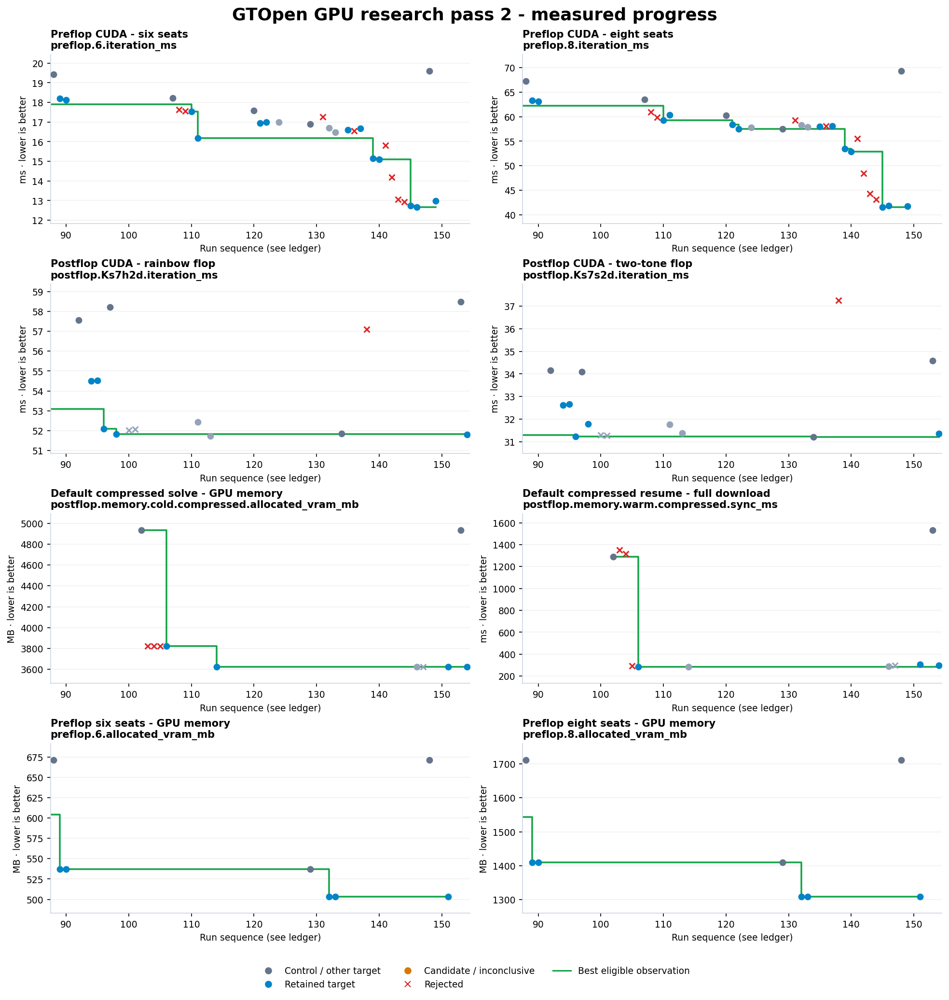
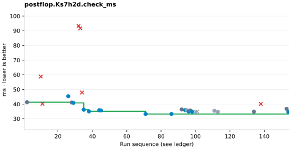
| Run | ID | Value | Decision | Role |
|---|---|---|---|---|
| 2 | B002 | 41.296 | baseline | baseline / control |
| 10 | E004 | 58.757 | discard | targeted |
| 11 | E004B | 40.219 | discard | targeted |
| 26 | E009 | 45.384 | keep | targeted |
| 28 | B008 | 41.145 | baseline | baseline / control |
| 29 | E009R2 | 40.829 | keep | targeted |
| 32 | E011 | 93.23 | discard | targeted |
| 33 | E011B | 91.642 | discard | targeted |
| 34 | E011C | 47.892 | discard | targeted |
| 35 | E011D | 36.224 | keep | targeted |
| 38 | E011DR2 | 35.059 | keep | targeted |
| 44 | E013 | 35.825 | keep | targeted |
| 45 | E013R | 35.68 | keep | targeted |
| 71 | F007 | 33.255 | keep | targeted |
| 86 | F008 | 33.287 | keep | targeted |
| 92 | B023 | 36.387 | baseline | baseline / control |
| 94 | E022 | 35.871 | keep | targeted |
| 95 | E022R | 35.839 | keep | measured alongside another target |
| 96 | E023 | 34.969 | keep | targeted |
| 97 | B025 | 35.708 | baseline | baseline / control |
| 98 | E023R | 34.853 | keep | targeted |
| 100 | E024A | 34.724 | discard | measured alongside another target |
| 101 | E024B | 34.914 | discard | measured alongside another target |
| 111 | E025BR | 35.472 | keep | measured alongside another target |
| 113 | E026A | 34.758 | keep | measured alongside another target |
| 134 | B033 | 34.858 | baseline | baseline / control |
| 138 | E034 | 40.14 | discard | targeted |
| 153 | B035 | 36.793 | baseline | baseline / control |
| 154 | G005 | 34.672 | keep | targeted |
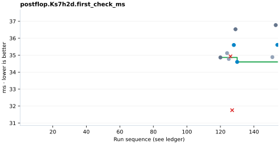
| Run | ID | Value | Decision | Role |
|---|---|---|---|---|
| 120 | B030 | 34.8658 | baseline | baseline / control |
| 124 | E029 | 35.1215 | keep | measured alongside another target |
| 125 | E029R | 34.7785 | keep | measured alongside another target |
| 126 | E030 | 34.933 | discard | targeted |
| 127 | E030R | 31.7577 | discard | targeted |
| 128 | E030A | 35.6008 | keep | targeted |
| 129 | B032 | 36.5299 | baseline | baseline / control |
| 130 | E030AR | 34.6028 | keep | targeted |
| 151 | G003 | 34.8859 | keep | measured alongside another target |
| 153 | B035 | 36.7749 | baseline | baseline / control |
| 154 | G005 | 35.6075 | keep | targeted |
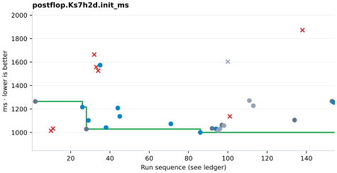
| Run | ID | Value | Decision | Role |
|---|---|---|---|---|
| 2 | B002 | 1264.56 | baseline | baseline / control |
| 10 | E004 | 1014.99 | discard | targeted |
| 11 | E004B | 1033.55 | discard | targeted |
| 26 | E009 | 1216.6 | keep | targeted |
| 28 | B008 | 1029.17 | baseline | baseline / control |
| 29 | E009R2 | 1103.3 | keep | targeted |
| 32 | E011 | 1663.93 | discard | targeted |
| 33 | E011B | 1557.56 | discard | targeted |
| 34 | E011C | 1526.37 | discard | targeted |
| 35 | E011D | 1574.63 | keep | targeted |
| 38 | E011DR2 | 1042.24 | keep | targeted |
| 44 | E013 | 1208.38 | keep | targeted |
| 45 | E013R | 1137.21 | keep | targeted |
| 71 | F007 | 1073.74 | keep | targeted |
| 86 | F008 | 1000.91 | keep | targeted |
| 92 | B023 | 1035.11 | baseline | baseline / control |
| 94 | E022 | 1030.81 | keep | targeted |
| 95 | E022R | 1015.54 | keep | measured alongside another target |
| 96 | E023 | 1030.99 | keep | measured alongside another target |
| 97 | B025 | 1063.29 | baseline | baseline / control |
| 98 | E023R | 1058.97 | keep | measured alongside another target |
| 100 | E024A | 1603.86 | discard | measured alongside another target |
| 101 | E024B | 1137.27 | discard | targeted |
| 111 | E025BR | 1272.24 | keep | measured alongside another target |
| 113 | E026A | 1227.89 | keep | measured alongside another target |
| 134 | B033 | 1105.9 | baseline | baseline / control |
| 138 | E034 | 1872.39 | discard | targeted |
| 153 | B035 | 1266.59 | baseline | baseline / control |
| 154 | G005 | 1256.48 | keep | targeted |
| Run | ID | Value | Decision | Role |
|---|---|---|---|---|
| 24 | B006 | 7683.96 | baseline | baseline / control |
| 26 | E009 | 6274.68 | keep | targeted |
| 29 | E009R2 | 6274.68 | keep | targeted |
| 44 | E013 | 6241.12 | keep | targeted |
| 45 | E013R | 6241.12 | keep | targeted |
| 71 | F007 | 6241.12 | keep | targeted |
| 98 | E023R | 6241.12 | keep | measured alongside another target |
| 100 | E024A | 6174.02 | discard | targeted |
| 101 | E024B | 6241.12 | discard | targeted |
| 111 | E025BR | 6241.12 | keep | measured alongside another target |
| 113 | E026A | 5905.58 | keep | targeted |
| 151 | G003 | 5905.58 | keep | targeted |
| Run | ID | Value | Decision | Role |
|---|---|---|---|---|
| 24 | B006 | 8088.01 | baseline | baseline / control |
| 26 | E009 | 6716.63 | keep | targeted |
| 29 | E009R2 | 6716.63 | keep | targeted |
| 44 | E013 | 6716.63 | keep | targeted |
| 45 | E013R | 6716.63 | keep | targeted |
| 71 | F007 | 6716.63 | keep | targeted |
| 98 | E023R | 6716.63 | keep | measured alongside another target |
| 100 | E024A | 6716.63 | discard | measured alongside another target |
| 101 | E024B | 6716.63 | discard | measured alongside another target |
| 111 | E025BR | 6716.63 | keep | measured alongside another target |
| 113 | E026A | 6716.63 | keep | measured alongside another target |
| 151 | G003 | 6716.63 | keep | targeted |
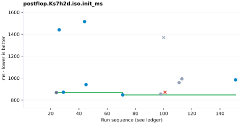
| Run | ID | Value | Decision | Role |
|---|---|---|---|---|
| 24 | B006 | 868.18 | baseline | baseline / control |
| 26 | E009 | 1440.11 | keep | targeted |
| 29 | E009R2 | 871.35 | keep | targeted |
| 44 | E013 | 1514.71 | keep | targeted |
| 45 | E013R | 940.992 | keep | targeted |
| 71 | F007 | 847.052 | keep | targeted |
| 98 | E023R | 854.378 | keep | measured alongside another target |
| 100 | E024A | 1370.14 | discard | measured alongside another target |
| 101 | E024B | 871.073 | discard | targeted |
| 111 | E025BR | 958.946 | keep | measured alongside another target |
| 113 | E026A | 993.119 | keep | measured alongside another target |
| 151 | G003 | 983.659 | keep | targeted |
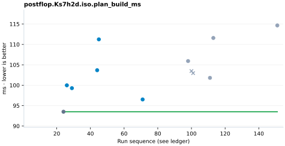
| Run | ID | Value | Decision | Role |
|---|---|---|---|---|
| 24 | B006 | 93.5086 | baseline | baseline / control |
| 26 | E009 | 99.9789 | keep | targeted |
| 29 | E009R2 | 99.2814 | keep | targeted |
| 44 | E013 | 103.675 | keep | targeted |
| 45 | E013R | 111.234 | keep | targeted |
| 71 | F007 | 96.515 | keep | targeted |
| 98 | E023R | 105.918 | keep | measured alongside another target |
| 100 | E024A | 103.473 | discard | measured alongside another target |
| 101 | E024B | 102.961 | discard | measured alongside another target |
| 111 | E025BR | 101.805 | keep | measured alongside another target |
| 113 | E026A | 111.577 | keep | measured alongside another target |
| 151 | G003 | 114.645 | keep | measured alongside another target |
| Run | ID | Value | Decision | Role |
|---|---|---|---|---|
| 24 | B006 | 4821.59 | baseline | baseline / control |
| 26 | E009 | 3415.12 | keep | targeted |
| 29 | E009R2 | 3415.12 | keep | targeted |
| 44 | E013 | 3380.29 | keep | targeted |
| 45 | E013R | 3380.29 | keep | targeted |
| 71 | F007 | 3380.29 | keep | targeted |
| 98 | E023R | 3380.29 | keep | measured alongside another target |
| 100 | E024A | 3380.29 | discard | measured alongside another target |
| 101 | E024B | 3380.29 | discard | measured alongside another target |
| 111 | E025BR | 3380.29 | keep | measured alongside another target |
| 113 | E026A | 3052.06 | keep | targeted |
| 151 | G003 | 3052.06 | keep | measured alongside another target |
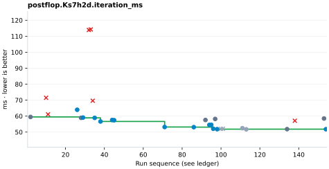
| Run | ID | Value | Decision | Role |
|---|---|---|---|---|
| 2 | B002 | 59.488 | baseline | baseline / control |
| 10 | E004 | 71.482 | discard | targeted |
| 11 | E004B | 61.09 | discard | targeted |
| 26 | E009 | 63.968 | keep | targeted |
| 28 | B008 | 58.918 | baseline | baseline / control |
| 29 | E009R2 | 59.09 | keep | targeted |
| 32 | E011 | 113.943 | discard | targeted |
| 33 | E011B | 114.255 | discard | targeted |
| 34 | E011C | 69.627 | discard | targeted |
| 35 | E011D | 58.899 | keep | targeted |
| 38 | E011DR2 | 56.643 | keep | targeted |
| 44 | E013 | 57.556 | keep | targeted |
| 45 | E013R | 57.433 | keep | targeted |
| 71 | F007 | 53.174 | keep | targeted |
| 86 | F008 | 53.089 | keep | targeted |
| 92 | B023 | 57.573 | baseline | baseline / control |
| 94 | E022 | 54.49 | keep | targeted |
| 95 | E022R | 54.53 | keep | targeted |
| 96 | E023 | 52.084 | keep | targeted |
| 97 | B025 | 58.213 | baseline | baseline / control |
| 98 | E023R | 51.82 | keep | targeted |
| 100 | E024A | 52.02 | discard | measured alongside another target |
| 101 | E024B | 52.077 | discard | measured alongside another target |
| 111 | E025BR | 52.444 | keep | measured alongside another target |
| 113 | E026A | 51.724 | keep | measured alongside another target |
| 134 | B033 | 51.841 | baseline | baseline / control |
| 138 | E034 | 57.098 | discard | targeted |
| 153 | B035 | 58.5 | baseline | baseline / control |
| 154 | G005 | 51.796 | keep | targeted |
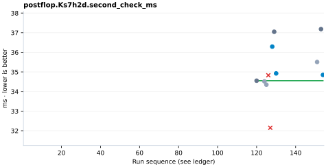
| Run | ID | Value | Decision | Role |
|---|---|---|---|---|
| 120 | B030 | 34.5521 | baseline | baseline / control |
| 124 | E029 | 34.5157 | keep | measured alongside another target |
| 125 | E029R | 34.3488 | keep | measured alongside another target |
| 126 | E030 | 34.8293 | discard | targeted |
| 127 | E030R | 32.1483 | discard | targeted |
| 128 | E030A | 36.2908 | keep | targeted |
| 129 | B032 | 37.0481 | baseline | baseline / control |
| 130 | E030AR | 34.9231 | keep | targeted |
| 151 | G003 | 35.5047 | keep | measured alongside another target |
| 153 | B035 | 37.1848 | baseline | baseline / control |
| 154 | G005 | 34.8466 | keep | targeted |
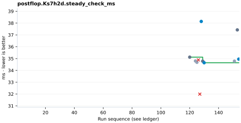
| Run | ID | Value | Decision | Role |
|---|---|---|---|---|
| 120 | B030 | 35.1191 | baseline | baseline / control |
| 124 | E029 | 34.7961 | keep | measured alongside another target |
| 125 | E029R | 34.6831 | keep | measured alongside another target |
| 126 | E030 | 34.8846 | discard | targeted |
| 127 | E030R | 31.9926 | discard | targeted |
| 128 | E030A | 38.141 | keep | targeted |
| 129 | B032 | 34.7805 | baseline | baseline / control |
| 130 | E030AR | 34.6465 | keep | targeted |
| 151 | G003 | 34.781 | keep | measured alongside another target |
| 153 | B035 | 37.4254 | baseline | baseline / control |
| 154 | G005 | 34.9521 | keep | targeted |
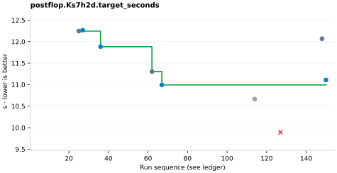
| Run | ID | Value | Decision | Role |
|---|---|---|---|---|
| 25 | B007 | 12.244 | baseline | baseline / control |
| 27 | E009R | 12.267 | keep | targeted |
| 36 | E011DR | 11.882 | keep | targeted |
| 62 | B015 | 11.305 | baseline | baseline / control |
| 67 | F003 | 10.994 | keep | targeted |
| 114 | E026R | 10.664 | keep | measured alongside another target |
| 127 | E030R | 9.89 | discard | targeted |
| 148 | B034 | 12.067 | baseline | baseline / control |
| 150 | G002 | 11.107 | keep | targeted |
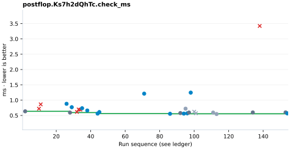
| Run | ID | Value | Decision | Role |
|---|---|---|---|---|
| 2 | B002 | 0.635 | baseline | baseline / control |
| 10 | E004 | 0.721 | discard | targeted |
| 11 | E004B | 0.863 | discard | targeted |
| 26 | E009 | 0.881 | keep | targeted |
| 28 | B008 | 0.594 | baseline | baseline / control |
| 29 | E009R2 | 0.77 | keep | targeted |
| 32 | E011 | 0.616 | discard | targeted |
| 33 | E011B | 0.696 | discard | targeted |
| 34 | E011C | 0.689 | discard | targeted |
| 35 | E011D | 0.736 | keep | targeted |
| 38 | E011DR2 | 0.662 | keep | targeted |
| 44 | E013 | 0.562 | keep | targeted |
| 45 | E013R | 0.611 | keep | targeted |
| 71 | F007 | 1.212 | keep | targeted |
| 86 | F008 | 0.555 | keep | targeted |
| 92 | B023 | 0.579 | baseline | baseline / control |
| 94 | E022 | 0.561 | keep | targeted |
| 95 | E022R | 0.722 | keep | measured alongside another target |
| 96 | E023 | 0.571 | keep | targeted |
| 97 | B025 | 0.596 | baseline | baseline / control |
| 98 | E023R | 1.246 | keep | targeted |
| 100 | E024A | 0.623 | discard | measured alongside another target |
| 101 | E024B | 0.573 | discard | measured alongside another target |
| 111 | E025BR | 0.594 | keep | measured alongside another target |
| 113 | E026A | 0.547 | keep | measured alongside another target |
| 134 | B033 | 0.599 | baseline | baseline / control |
| 138 | E034 | 3.423 | discard | targeted |
| 153 | B035 | 0.6 | baseline | baseline / control |
| 154 | G005 | 0.569 | keep | targeted |
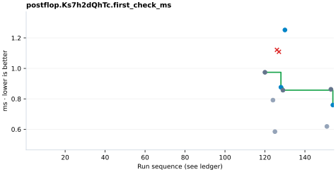
| Run | ID | Value | Decision | Role |
|---|---|---|---|---|
| 120 | B030 | 0.9745 | baseline | baseline / control |
| 124 | E029 | 0.7917 | keep | measured alongside another target |
| 125 | E029R | 0.5848 | keep | measured alongside another target |
| 126 | E030 | 1.1219 | discard | targeted |
| 127 | E030R | 1.109 | discard | targeted |
| 128 | E030A | 0.8764 | keep | targeted |
| 129 | B032 | 0.8571 | baseline | baseline / control |
| 130 | E030AR | 1.2526 | keep | targeted |
| 151 | G003 | 0.6189 | keep | measured alongside another target |
| 153 | B035 | 0.8628 | baseline | baseline / control |
| 154 | G005 | 0.7595 | keep | targeted |
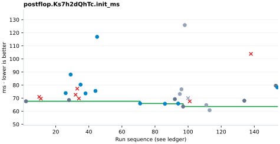
| Run | ID | Value | Decision | Role |
|---|---|---|---|---|
| 2 | B002 | 67.607 | baseline | baseline / control |
| 10 | E004 | 70.966 | discard | targeted |
| 11 | E004B | 69.603 | discard | targeted |
| 26 | E009 | 73.845 | keep | targeted |
| 28 | B008 | 68.551 | baseline | baseline / control |
| 29 | E009R2 | 88.041 | keep | targeted |
| 32 | E011 | 72.586 | discard | targeted |
| 33 | E011B | 77.253 | discard | targeted |
| 34 | E011C | 69.742 | discard | targeted |
| 35 | E011D | 80.328 | keep | targeted |
| 38 | E011DR2 | 73.606 | keep | targeted |
| 44 | E013 | 75.53 | keep | targeted |
| 45 | E013R | 116.871 | keep | targeted |
| 71 | F007 | 65.914 | keep | targeted |
| 86 | F008 | 65.711 | keep | targeted |
| 92 | B023 | 69.231 | baseline | baseline / control |
| 94 | E022 | 65.858 | keep | targeted |
| 95 | E022R | 73.155 | keep | measured alongside another target |
| 96 | E023 | 76.76 | keep | measured alongside another target |
| 97 | B025 | 63.589 | baseline | baseline / control |
| 98 | E023R | 125.861 | keep | measured alongside another target |
| 100 | E024A | 70.046 | discard | measured alongside another target |
| 101 | E024B | 67.566 | discard | targeted |
| 111 | E025BR | 64.713 | keep | measured alongside another target |
| 113 | E026A | 60.782 | keep | measured alongside another target |
| 134 | B033 | 68.056 | baseline | baseline / control |
| 138 | E034 | 103.844 | discard | targeted |
| 153 | B035 | 79.516 | baseline | baseline / control |
| 154 | G005 | 78.225 | keep | targeted |
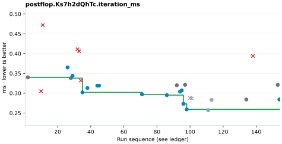
| Run | ID | Value | Decision | Role |
|---|---|---|---|---|
| 2 | B002 | 0.34 | baseline | baseline / control |
| 10 | E004 | 0.305 | discard | targeted |
| 11 | E004B | 0.472 | discard | targeted |
| 26 | E009 | 0.365 | keep | targeted |
| 28 | B008 | 0.338 | baseline | baseline / control |
| 29 | E009R2 | 0.344 | keep | targeted |
| 32 | E011 | 0.411 | discard | targeted |
| 33 | E011B | 0.406 | discard | targeted |
| 34 | E011C | 0.332 | discard | targeted |
| 35 | E011D | 0.302 | keep | targeted |
| 38 | E011DR2 | 0.313 | keep | targeted |
| 44 | E013 | 0.319 | keep | targeted |
| 45 | E013R | 0.319 | keep | targeted |
| 71 | F007 | 0.297 | keep | targeted |
| 86 | F008 | 0.295 | keep | targeted |
| 92 | B023 | 0.32 | baseline | baseline / control |
| 94 | E022 | 0.304 | keep | targeted |
| 95 | E022R | 0.307 | keep | targeted |
| 96 | E023 | 0.273 | keep | targeted |
| 97 | B025 | 0.321 | baseline | baseline / control |
| 98 | E023R | 0.259 | keep | targeted |
| 100 | E024A | 0.288 | discard | measured alongside another target |
| 101 | E024B | 0.287 | discard | measured alongside another target |
| 111 | E025BR | 0.257 | keep | measured alongside another target |
| 113 | E026A | 0.283 | keep | measured alongside another target |
| 134 | B033 | 0.284 | baseline | baseline / control |
| 138 | E034 | 0.394 | discard | targeted |
| 153 | B035 | 0.321 | baseline | baseline / control |
| 154 | G005 | 0.284 | keep | targeted |
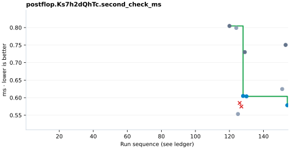
| Run | ID | Value | Decision | Role |
|---|---|---|---|---|
| 120 | B030 | 0.8046 | baseline | baseline / control |
| 124 | E029 | 0.799 | keep | measured alongside another target |
| 125 | E029R | 0.5534 | keep | measured alongside another target |
| 126 | E030 | 0.5849 | discard | targeted |
| 127 | E030R | 0.5747 | discard | targeted |
| 128 | E030A | 0.6049 | keep | targeted |
| 129 | B032 | 0.73 | baseline | baseline / control |
| 130 | E030AR | 0.6039 | keep | targeted |
| 151 | G003 | 0.6246 | keep | measured alongside another target |
| 153 | B035 | 0.7505 | baseline | baseline / control |
| 154 | G005 | 0.5784 | keep | targeted |
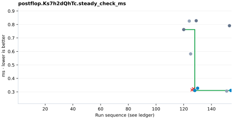
| Run | ID | Value | Decision | Role |
|---|---|---|---|---|
| 120 | B030 | 0.762175 | baseline | baseline / control |
| 124 | E029 | 0.825325 | keep | measured alongside another target |
| 125 | E029R | 0.581625 | keep | measured alongside another target |
| 126 | E030 | 0.31405 | discard | targeted |
| 127 | E030R | 0.32285 | discard | targeted |
| 128 | E030A | 0.310175 | keep | targeted |
| 129 | B032 | 0.8278 | baseline | baseline / control |
| 130 | E030AR | 0.327125 | keep | targeted |
| 151 | G003 | 0.305775 | keep | measured alongside another target |
| 153 | B035 | 0.790925 | baseline | baseline / control |
| 154 | G005 | 0.310375 | keep | targeted |
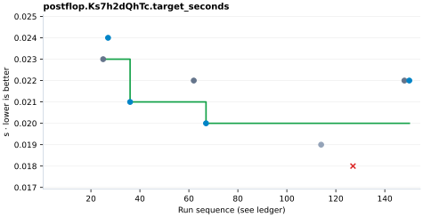
| Run | ID | Value | Decision | Role |
|---|---|---|---|---|
| 25 | B007 | 0.023 | baseline | baseline / control |
| 27 | E009R | 0.024 | keep | targeted |
| 36 | E011DR | 0.021 | keep | targeted |
| 62 | B015 | 0.022 | baseline | baseline / control |
| 67 | F003 | 0.02 | keep | targeted |
| 114 | E026R | 0.019 | keep | measured alongside another target |
| 127 | E030R | 0.018 | discard | targeted |
| 148 | B034 | 0.022 | baseline | baseline / control |
| 150 | G002 | 0.022 | keep | targeted |
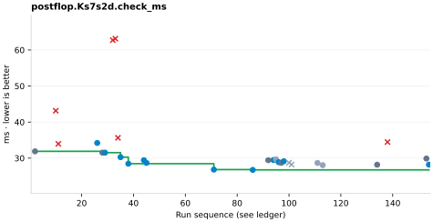
| Run | ID | Value | Decision | Role |
|---|---|---|---|---|
| 2 | B002 | 31.888 | baseline | baseline / control |
| 10 | E004 | 43.15 | discard | targeted |
| 11 | E004B | 33.972 | discard | targeted |
| 26 | E009 | 34.214 | keep | targeted |
| 28 | B008 | 31.529 | baseline | baseline / control |
| 29 | E009R2 | 31.529 | keep | targeted |
| 32 | E011 | 62.735 | discard | targeted |
| 33 | E011B | 63.14 | discard | targeted |
| 34 | E011C | 35.644 | discard | targeted |
| 35 | E011D | 30.277 | keep | targeted |
| 38 | E011DR2 | 28.463 | keep | targeted |
| 44 | E013 | 29.436 | keep | targeted |
| 45 | E013R | 28.683 | keep | targeted |
| 71 | F007 | 26.827 | keep | targeted |
| 86 | F008 | 26.745 | keep | targeted |
| 92 | B023 | 29.432 | baseline | baseline / control |
| 94 | E022 | 29.48 | keep | targeted |
| 95 | E022R | 29.671 | keep | measured alongside another target |
| 96 | E023 | 28.881 | keep | targeted |
| 97 | B025 | 28.705 | baseline | baseline / control |
| 98 | E023R | 29.15 | keep | targeted |
| 100 | E024A | 28.734 | discard | measured alongside another target |
| 101 | E024B | 28.227 | discard | measured alongside another target |
| 111 | E025BR | 28.667 | keep | measured alongside another target |
| 113 | E026A | 28.053 | keep | measured alongside another target |
| 134 | B033 | 28.182 | baseline | baseline / control |
| 138 | E034 | 34.465 | discard | targeted |
| 153 | B035 | 29.888 | baseline | baseline / control |
| 154 | G005 | 28.203 | keep | targeted |
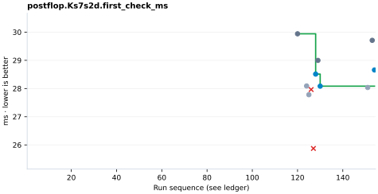
| Run | ID | Value | Decision | Role |
|---|---|---|---|---|
| 120 | B030 | 29.941 | baseline | baseline / control |
| 124 | E029 | 28.0904 | keep | measured alongside another target |
| 125 | E029R | 27.7804 | keep | measured alongside another target |
| 126 | E030 | 27.9639 | discard | targeted |
| 127 | E030R | 25.8739 | discard | targeted |
| 128 | E030A | 28.5117 | keep | targeted |
| 129 | B032 | 28.9978 | baseline | baseline / control |
| 130 | E030AR | 28.0841 | keep | targeted |
| 151 | G003 | 28.037 | keep | measured alongside another target |
| 153 | B035 | 29.7091 | baseline | baseline / control |
| 154 | G005 | 28.6578 | keep | targeted |
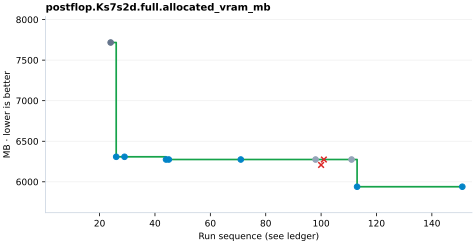
| Run | ID | Value | Decision | Role |
|---|---|---|---|---|
| 24 | B006 | 7717.52 | baseline | baseline / control |
| 26 | E009 | 6308.23 | keep | targeted |
| 29 | E009R2 | 6308.23 | keep | targeted |
| 44 | E013 | 6274.68 | keep | targeted |
| 45 | E013R | 6274.68 | keep | targeted |
| 71 | F007 | 6274.68 | keep | targeted |
| 98 | E023R | 6274.68 | keep | measured alongside another target |
| 100 | E024A | 6207.57 | discard | targeted |
| 101 | E024B | 6274.68 | discard | targeted |
| 111 | E025BR | 6274.68 | keep | measured alongside another target |
| 113 | E026A | 5939.13 | keep | targeted |
| 151 | G003 | 5939.13 | keep | targeted |
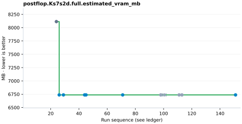
| Run | ID | Value | Decision | Role |
|---|---|---|---|---|
| 24 | B006 | 8113.67 | baseline | baseline / control |
| 26 | E009 | 6737.55 | keep | targeted |
| 29 | E009R2 | 6737.55 | keep | targeted |
| 44 | E013 | 6737.55 | keep | targeted |
| 45 | E013R | 6737.55 | keep | targeted |
| 71 | F007 | 6737.55 | keep | targeted |
| 98 | E023R | 6737.55 | keep | measured alongside another target |
| 100 | E024A | 6737.55 | discard | measured alongside another target |
| 101 | E024B | 6737.55 | discard | measured alongside another target |
| 111 | E025BR | 6737.55 | keep | measured alongside another target |
| 113 | E026A | 6737.55 | keep | measured alongside another target |
| 151 | G003 | 6737.55 | keep | targeted |
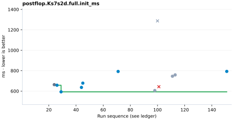
| Run | ID | Value | Decision | Role |
|---|---|---|---|---|
| 24 | B006 | 663.146 | baseline | baseline / control |
| 26 | E009 | 657.469 | keep | targeted |
| 29 | E009R2 | 592.935 | keep | targeted |
| 44 | E013 | 636.3 | keep | targeted |
| 45 | E013R | 678.112 | keep | targeted |
| 71 | F007 | 792.291 | keep | targeted |
| 98 | E023R | 605.701 | keep | measured alongside another target |
| 100 | E024A | 1287.37 | discard | measured alongside another target |
| 101 | E024B | 643.125 | discard | targeted |
| 111 | E025BR | 745.681 | keep | measured alongside another target |
| 113 | E026A | 758.61 | keep | measured alongside another target |
| 151 | G003 | 792.942 | keep | targeted |
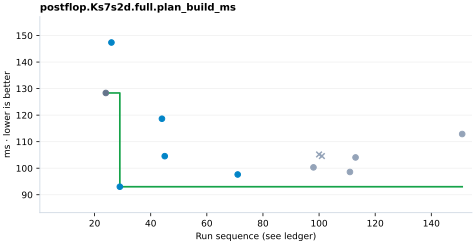
| Run | ID | Value | Decision | Role |
|---|---|---|---|---|
| 24 | B006 | 128.349 | baseline | baseline / control |
| 26 | E009 | 147.363 | keep | targeted |
| 29 | E009R2 | 93.0251 | keep | targeted |
| 44 | E013 | 118.643 | keep | targeted |
| 45 | E013R | 104.541 | keep | targeted |
| 71 | F007 | 97.6343 | keep | targeted |
| 98 | E023R | 100.317 | keep | measured alongside another target |
| 100 | E024A | 105.186 | discard | measured alongside another target |
| 101 | E024B | 104.58 | discard | measured alongside another target |
| 111 | E025BR | 98.5857 | keep | measured alongside another target |
| 113 | E026A | 104.06 | keep | measured alongside another target |
| 151 | G003 | 112.881 | keep | measured alongside another target |
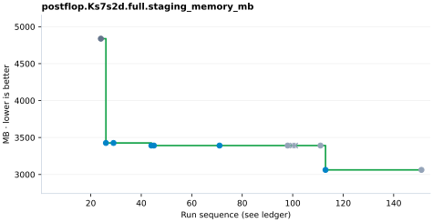
| Run | ID | Value | Decision | Role |
|---|---|---|---|---|
| 24 | B006 | 4837.75 | baseline | baseline / control |
| 26 | E009 | 3426.41 | keep | targeted |
| 29 | E009R2 | 3426.41 | keep | targeted |
| 44 | E013 | 3391.47 | keep | targeted |
| 45 | E013R | 3391.47 | keep | targeted |
| 71 | F007 | 3391.47 | keep | targeted |
| 98 | E023R | 3391.47 | keep | measured alongside another target |
| 100 | E024A | 3391.47 | discard | measured alongside another target |
| 101 | E024B | 3391.47 | discard | measured alongside another target |
| 111 | E025BR | 3391.47 | keep | measured alongside another target |
| 113 | E026A | 3062.21 | keep | targeted |
| 151 | G003 | 3062.21 | keep | measured alongside another target |
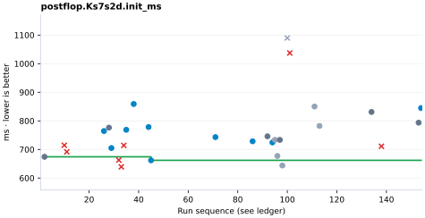
| Run | ID | Value | Decision | Role |
|---|---|---|---|---|
| 2 | B002 | 674.325 | baseline | baseline / control |
| 10 | E004 | 714.543 | discard | targeted |
| 11 | E004B | 691.739 | discard | targeted |
| 26 | E009 | 764.46 | keep | targeted |
| 28 | B008 | 776.34 | baseline | baseline / control |
| 29 | E009R2 | 704.889 | keep | targeted |
| 32 | E011 | 662.83 | discard | targeted |
| 33 | E011B | 639.241 | discard | targeted |
| 34 | E011C | 714.206 | discard | targeted |
| 35 | E011D | 768.642 | keep | targeted |
| 38 | E011DR2 | 858.983 | keep | targeted |
| 44 | E013 | 778.332 | keep | targeted |
| 45 | E013R | 661.983 | keep | targeted |
| 71 | F007 | 743.129 | keep | targeted |
| 86 | F008 | 728.576 | keep | targeted |
| 92 | B023 | 745.932 | baseline | baseline / control |
| 94 | E022 | 724.568 | keep | targeted |
| 95 | E022R | 733.515 | keep | measured alongside another target |
| 96 | E023 | 677.237 | keep | measured alongside another target |
| 97 | B025 | 733.486 | baseline | baseline / control |
| 98 | E023R | 643.856 | keep | measured alongside another target |
| 100 | E024A | 1089.81 | discard | measured alongside another target |
| 101 | E024B | 1037.44 | discard | targeted |
| 111 | E025BR | 850.005 | keep | measured alongside another target |
| 113 | E026A | 782.305 | keep | measured alongside another target |
| 134 | B033 | 831.082 | baseline | baseline / control |
| 138 | E034 | 711.152 | discard | targeted |
| 153 | B035 | 793.612 | baseline | baseline / control |
| 154 | G005 | 844.755 | keep | targeted |
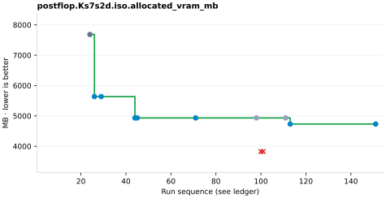
| Run | ID | Value | Decision | Role |
|---|---|---|---|---|
| 24 | B006 | 7683.96 | baseline | baseline / control |
| 26 | E009 | 5637.14 | keep | targeted |
| 29 | E009R2 | 5637.14 | keep | targeted |
| 44 | E013 | 4932.5 | keep | targeted |
| 45 | E013R | 4932.5 | keep | targeted |
| 71 | F007 | 4932.5 | keep | targeted |
| 98 | E023R | 4932.5 | keep | measured alongside another target |
| 100 | E024A | 3825.21 | discard | targeted |
| 101 | E024B | 3825.21 | discard | targeted |
| 111 | E025BR | 4932.5 | keep | measured alongside another target |
| 113 | E026A | 4731.17 | keep | targeted |
| 151 | G003 | 4731.17 | keep | targeted |
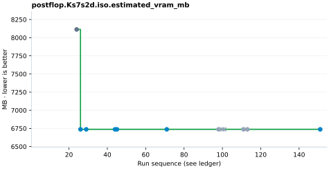
| Run | ID | Value | Decision | Role |
|---|---|---|---|---|
| 24 | B006 | 8113.67 | baseline | baseline / control |
| 26 | E009 | 6737.55 | keep | targeted |
| 29 | E009R2 | 6737.55 | keep | targeted |
| 44 | E013 | 6737.55 | keep | targeted |
| 45 | E013R | 6737.55 | keep | targeted |
| 71 | F007 | 6737.55 | keep | targeted |
| 98 | E023R | 6737.55 | keep | measured alongside another target |
| 100 | E024A | 6737.55 | discard | measured alongside another target |
| 101 | E024B | 6737.55 | discard | measured alongside another target |
| 111 | E025BR | 6737.55 | keep | measured alongside another target |
| 113 | E026A | 6737.55 | keep | measured alongside another target |
| 151 | G003 | 6737.55 | keep | targeted |
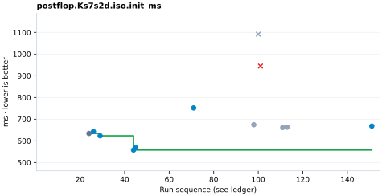
| Run | ID | Value | Decision | Role |
|---|---|---|---|---|
| 24 | B006 | 634.173 | baseline | baseline / control |
| 26 | E009 | 642.947 | keep | targeted |
| 29 | E009R2 | 623.303 | keep | targeted |
| 44 | E013 | 557.81 | keep | targeted |
| 45 | E013R | 568.264 | keep | targeted |
| 71 | F007 | 751.816 | keep | targeted |
| 98 | E023R | 674.326 | keep | measured alongside another target |
| 100 | E024A | 1091.82 | discard | measured alongside another target |
| 101 | E024B | 944.487 | discard | targeted |
| 111 | E025BR | 661.686 | keep | measured alongside another target |
| 113 | E026A | 663.124 | keep | measured alongside another target |
| 151 | G003 | 668.164 | keep | targeted |
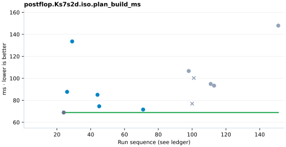
| Run | ID | Value | Decision | Role |
|---|---|---|---|---|
| 24 | B006 | 68.9306 | baseline | baseline / control |
| 26 | E009 | 87.694 | keep | targeted |
| 29 | E009R2 | 133.58 | keep | targeted |
| 44 | E013 | 85.025 | keep | targeted |
| 45 | E013R | 74.5834 | keep | targeted |
| 71 | F007 | 71.5932 | keep | targeted |
| 98 | E023R | 106.665 | keep | measured alongside another target |
| 100 | E024A | 76.9345 | discard | measured alongside another target |
| 101 | E024B | 100.271 | discard | measured alongside another target |
| 111 | E025BR | 94.8851 | keep | measured alongside another target |
| 113 | E026A | 93.3129 | keep | measured alongside another target |
| 151 | G003 | 147.952 | keep | measured alongside another target |
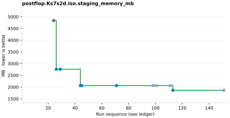
| Run | ID | Value | Decision | Role |
|---|---|---|---|---|
| 24 | B006 | 4837.75 | baseline | baseline / control |
| 26 | E009 | 2759.81 | keep | targeted |
| 29 | E009R2 | 2759.81 | keep | targeted |
| 44 | E013 | 2063.62 | keep | targeted |
| 45 | E013R | 2063.62 | keep | targeted |
| 71 | F007 | 2063.62 | keep | targeted |
| 98 | E023R | 2063.62 | keep | measured alongside another target |
| 100 | E024A | 2063.62 | discard | measured alongside another target |
| 101 | E024B | 2063.62 | discard | measured alongside another target |
| 111 | E025BR | 2063.62 | keep | measured alongside another target |
| 113 | E026A | 1862.66 | keep | targeted |
| 151 | G003 | 1862.66 | keep | measured alongside another target |
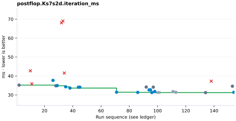
| Run | ID | Value | Decision | Role |
|---|---|---|---|---|
| 2 | B002 | 35.163 | baseline | baseline / control |
| 10 | E004 | 42.733 | discard | targeted |
| 11 | E004B | 35.868 | discard | targeted |
| 26 | E009 | 37.658 | keep | targeted |
| 28 | B008 | 34.811 | baseline | baseline / control |
| 29 | E009R2 | 34.924 | keep | targeted |
| 32 | E011 | 68.083 | discard | targeted |
| 33 | E011B | 69.008 | discard | targeted |
| 34 | E011C | 41.545 | discard | targeted |
| 35 | E011D | 34.254 | keep | targeted |
| 38 | E011DR2 | 33.599 | keep | targeted |
| 44 | E013 | 34.056 | keep | targeted |
| 45 | E013R | 34.079 | keep | targeted |
| 71 | F007 | 31.423 | keep | targeted |
| 86 | F008 | 31.303 | keep | targeted |
| 92 | B023 | 34.151 | baseline | baseline / control |
| 94 | E022 | 32.618 | keep | targeted |
| 95 | E022R | 32.663 | keep | targeted |
| 96 | E023 | 31.235 | keep | targeted |
| 97 | B025 | 34.09 | baseline | baseline / control |
| 98 | E023R | 31.797 | keep | targeted |
| 100 | E024A | 31.309 | discard | measured alongside another target |
| 101 | E024B | 31.269 | discard | measured alongside another target |
| 111 | E025BR | 31.759 | keep | measured alongside another target |
| 113 | E026A | 31.379 | keep | measured alongside another target |
| 134 | B033 | 31.208 | baseline | baseline / control |
| 138 | E034 | 37.243 | discard | targeted |
| 153 | B035 | 34.59 | baseline | baseline / control |
| 154 | G005 | 31.358 | keep | targeted |
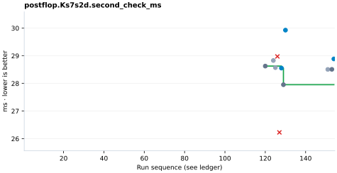
| Run | ID | Value | Decision | Role |
|---|---|---|---|---|
| 120 | B030 | 28.628 | baseline | baseline / control |
| 124 | E029 | 28.8304 | keep | measured alongside another target |
| 125 | E029R | 28.573 | keep | measured alongside another target |
| 126 | E030 | 28.9771 | discard | targeted |
| 127 | E030R | 26.2297 | discard | targeted |
| 128 | E030A | 28.5552 | keep | targeted |
| 129 | B032 | 27.9549 | baseline | baseline / control |
| 130 | E030AR | 29.9282 | keep | targeted |
| 151 | G003 | 28.5076 | keep | measured alongside another target |
| 153 | B035 | 28.51 | baseline | baseline / control |
| 154 | G005 | 28.8875 | keep | targeted |
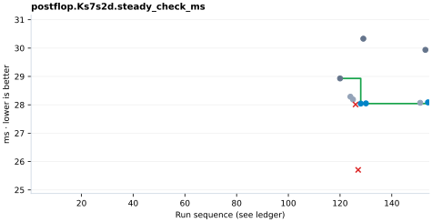
| Run | ID | Value | Decision | Role |
|---|---|---|---|---|
| 120 | B030 | 28.9297 | baseline | baseline / control |
| 124 | E029 | 28.2859 | keep | measured alongside another target |
| 125 | E029R | 28.1879 | keep | measured alongside another target |
| 126 | E030 | 28.0106 | discard | targeted |
| 127 | E030R | 25.7055 | discard | targeted |
| 128 | E030A | 28.0433 | keep | targeted |
| 129 | B032 | 30.3315 | baseline | baseline / control |
| 130 | E030AR | 28.0507 | keep | targeted |
| 151 | G003 | 28.0708 | keep | measured alongside another target |
| 153 | B035 | 29.9373 | baseline | baseline / control |
| 154 | G005 | 28.0862 | keep | targeted |
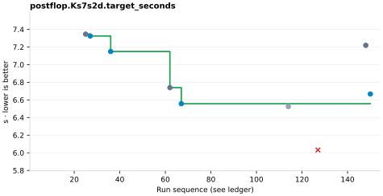
| Run | ID | Value | Decision | Role |
|---|---|---|---|---|
| 25 | B007 | 7.346 | baseline | baseline / control |
| 27 | E009R | 7.325 | keep | targeted |
| 36 | E011DR | 7.149 | keep | targeted |
| 62 | B015 | 6.739 | baseline | baseline / control |
| 67 | F003 | 6.557 | keep | targeted |
| 114 | E026R | 6.525 | keep | measured alongside another target |
| 127 | E030R | 6.032 | discard | targeted |
| 148 | B034 | 7.219 | baseline | baseline / control |
| 150 | G002 | 6.667 | keep | targeted |
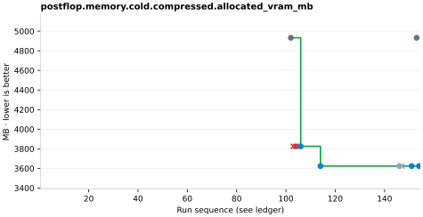
| Run | ID | Value | Decision | Role |
|---|---|---|---|---|
| 102 | B026 | 4932.5 | baseline | baseline / control |
| 103 | E024C | 3825.21 | discard | targeted |
| 104 | E024D | 3825.21 | discard | targeted |
| 105 | E024E | 3825.21 | discard | targeted |
| 106 | E024F | 3825.21 | keep | targeted |
| 114 | E026R | 3623.88 | keep | targeted |
| 146 | E037DR | 3623.88 | keep | measured alongside another target |
| 147 | E038 | 3623.88 | discard | measured alongside another target |
| 151 | G003 | 3623.88 | keep | targeted |
| 153 | B035 | 4932.5 | baseline | baseline / control |
| 154 | G005 | 3623.88 | keep | targeted |
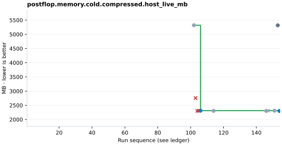
| Run | ID | Value | Decision | Role |
|---|---|---|---|---|
| 102 | B026 | 5320.19 | baseline | baseline / control |
| 103 | E024C | 2754.72 | discard | targeted |
| 104 | E024D | 2303.34 | discard | targeted |
| 105 | E024E | 2305.96 | discard | targeted |
| 106 | E024F | 2310.36 | keep | targeted |
| 114 | E026R | 2303.99 | keep | measured alongside another target |
| 146 | E037DR | 2300.45 | keep | measured alongside another target |
| 147 | E038 | 2308.86 | discard | measured alongside another target |
| 151 | G003 | 2309.14 | keep | measured alongside another target |
| 153 | B035 | 5317.96 | baseline | baseline / control |
| 154 | G005 | 2300.48 | keep | targeted |
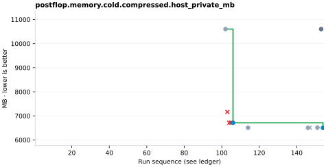
| Run | ID | Value | Decision | Role |
|---|---|---|---|---|
| 102 | B026 | 10601.9 | baseline | baseline / control |
| 103 | E024C | 7163.13 | discard | targeted |
| 104 | E024D | 6716.25 | discard | targeted |
| 105 | E024E | 6718.25 | discard | targeted |
| 106 | E024F | 6711.87 | keep | targeted |
| 114 | E026R | 6506.49 | keep | measured alongside another target |
| 146 | E037DR | 6504.68 | keep | measured alongside another target |
| 147 | E038 | 6508.74 | discard | measured alongside another target |
| 151 | G003 | 6511.15 | keep | measured alongside another target |
| 153 | B035 | 10602.1 | baseline | baseline / control |
| 154 | G005 | 6504.7 | keep | targeted |
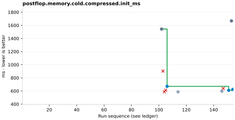
| Run | ID | Value | Decision | Role |
|---|---|---|---|---|
| 102 | B026 | 1543.57 | baseline | baseline / control |
| 103 | E024C | 903.492 | discard | targeted |
| 104 | E024D | 588.97 | discard | targeted |
| 105 | E024E | 611.673 | discard | targeted |
| 106 | E024F | 670.954 | keep | targeted |
| 114 | E026R | 587.252 | keep | measured alongside another target |
| 146 | E037DR | 597.193 | keep | measured alongside another target |
| 147 | E038 | 639.474 | discard | targeted |
| 151 | G003 | 610.103 | keep | targeted |
| 153 | B035 | 1667.71 | baseline | baseline / control |
| 154 | G005 | 624.819 | keep | targeted |
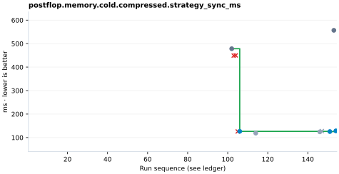
| Run | ID | Value | Decision | Role |
|---|---|---|---|---|
| 102 | B026 | 478.344 | baseline | baseline / control |
| 103 | E024C | 449.075 | discard | targeted |
| 104 | E024D | 449.738 | discard | targeted |
| 105 | E024E | 125.881 | discard | targeted |
| 106 | E024F | 126.271 | keep | targeted |
| 114 | E026R | 118.659 | keep | measured alongside another target |
| 146 | E037DR | 124.172 | keep | measured alongside another target |
| 147 | E038 | 127.442 | discard | measured alongside another target |
| 151 | G003 | 125.461 | keep | targeted |
| 153 | B035 | 556.674 | baseline | baseline / control |
| 154 | G005 | 128.391 | keep | targeted |
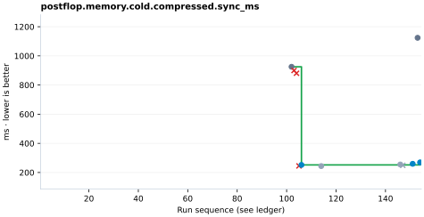
| Run | ID | Value | Decision | Role |
|---|---|---|---|---|
| 102 | B026 | 925.245 | baseline | baseline / control |
| 103 | E024C | 899.756 | discard | targeted |
| 104 | E024D | 880.799 | discard | targeted |
| 105 | E024E | 245.104 | discard | targeted |
| 106 | E024F | 251.91 | keep | targeted |
| 114 | E026R | 244.092 | keep | measured alongside another target |
| 146 | E037DR | 254.956 | keep | measured alongside another target |
| 147 | E038 | 249.023 | discard | measured alongside another target |
| 151 | G003 | 259.59 | keep | targeted |
| 153 | B035 | 1124.03 | baseline | baseline / control |
| 154 | G005 | 269.263 | keep | targeted |
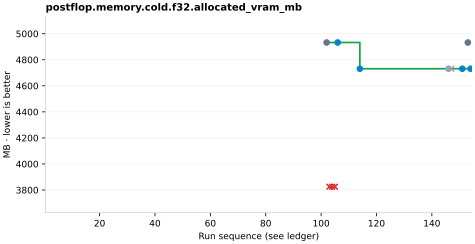
| Run | ID | Value | Decision | Role |
|---|---|---|---|---|
| 102 | B026 | 4932.5 | baseline | baseline / control |
| 103 | E024C | 3825.21 | discard | targeted |
| 104 | E024D | 3825.21 | discard | targeted |
| 105 | E024E | 3825.21 | discard | targeted |
| 106 | E024F | 4932.5 | keep | targeted |
| 114 | E026R | 4731.17 | keep | targeted |
| 146 | E037DR | 4731.17 | keep | measured alongside another target |
| 147 | E038 | 4731.17 | discard | measured alongside another target |
| 151 | G003 | 4731.17 | keep | targeted |
| 153 | B035 | 4932.5 | baseline | baseline / control |
| 154 | G005 | 4731.17 | keep | targeted |
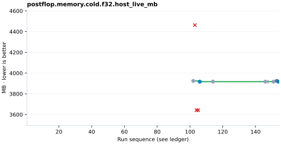
| Run | ID | Value | Decision | Role |
|---|---|---|---|---|
| 102 | B026 | 3924.32 | baseline | baseline / control |
| 103 | E024C | 4462.98 | discard | targeted |
| 104 | E024D | 3642.06 | discard | targeted |
| 105 | E024E | 3642.33 | discard | targeted |
| 106 | E024F | 3917.14 | keep | targeted |
| 114 | E026R | 3917.73 | keep | measured alongside another target |
| 146 | E037DR | 3917.54 | keep | measured alongside another target |
| 147 | E038 | 3917.06 | discard | measured alongside another target |
| 151 | G003 | 3917.2 | keep | measured alongside another target |
| 153 | B035 | 3924.64 | baseline | baseline / control |
| 154 | G005 | 3917.59 | keep | targeted |
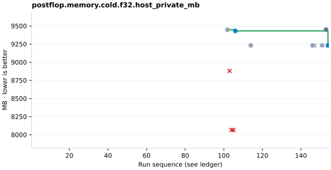
| Run | ID | Value | Decision | Role |
|---|---|---|---|---|
| 102 | B026 | 9447.1 | baseline | baseline / control |
| 103 | E024C | 8879.85 | discard | targeted |
| 104 | E024D | 8066.41 | discard | targeted |
| 105 | E024E | 8063.95 | discard | targeted |
| 106 | E024F | 9431.05 | keep | targeted |
| 114 | E026R | 9231.07 | keep | measured alongside another target |
| 146 | E037DR | 9230.97 | keep | measured alongside another target |
| 147 | E038 | 9229.25 | discard | measured alongside another target |
| 151 | G003 | 9231.66 | keep | measured alongside another target |
| 153 | B035 | 9448.88 | baseline | baseline / control |
| 154 | G005 | 9231.11 | keep | targeted |
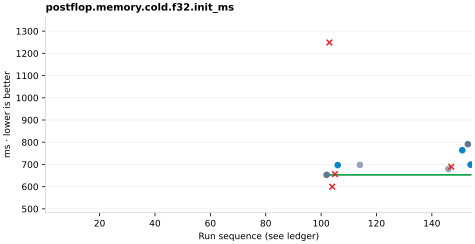
| Run | ID | Value | Decision | Role |
|---|---|---|---|---|
| 102 | B026 | 653.088 | baseline | baseline / control |
| 103 | E024C | 1248.88 | discard | targeted |
| 104 | E024D | 599.683 | discard | targeted |
| 105 | E024E | 656.42 | discard | targeted |
| 106 | E024F | 697.025 | keep | targeted |
| 114 | E026R | 697.968 | keep | measured alongside another target |
| 146 | E037DR | 679.433 | keep | measured alongside another target |
| 147 | E038 | 689.848 | discard | targeted |
| 151 | G003 | 764.092 | keep | targeted |
| 153 | B035 | 791.198 | baseline | baseline / control |
| 154 | G005 | 699.137 | keep | targeted |
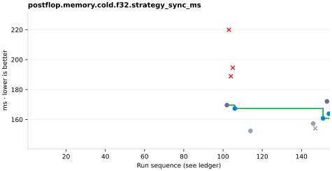
| Run | ID | Value | Decision | Role |
|---|---|---|---|---|
| 102 | B026 | 169.637 | baseline | baseline / control |
| 103 | E024C | 219.958 | discard | targeted |
| 104 | E024D | 188.907 | discard | targeted |
| 105 | E024E | 194.573 | discard | targeted |
| 106 | E024F | 167.41 | keep | targeted |
| 114 | E026R | 152.418 | keep | measured alongside another target |
| 146 | E037DR | 157.237 | keep | measured alongside another target |
| 147 | E038 | 154.072 | discard | measured alongside another target |
| 151 | G003 | 160.828 | keep | targeted |
| 153 | B035 | 172.129 | baseline | baseline / control |
| 154 | G005 | 163.829 | keep | targeted |
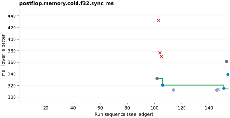
| Run | ID | Value | Decision | Role |
|---|---|---|---|---|
| 102 | B026 | 331.93 | baseline | baseline / control |
| 103 | E024C | 432.186 | discard | targeted |
| 104 | E024D | 376.578 | discard | targeted |
| 105 | E024E | 370.591 | discard | targeted |
| 106 | E024F | 320.941 | keep | targeted |
| 114 | E026R | 311.944 | keep | measured alongside another target |
| 146 | E037DR | 311.708 | keep | measured alongside another target |
| 147 | E038 | 313.129 | discard | measured alongside another target |
| 151 | G003 | 315.063 | keep | targeted |
| 153 | B035 | 361.286 | baseline | baseline / control |
| 154 | G005 | 338.927 | keep | targeted |
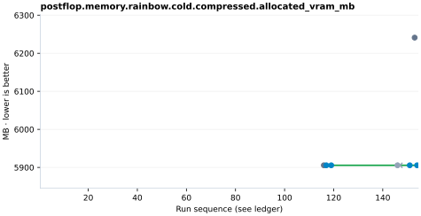
| Run | ID | Value | Decision | Role |
|---|---|---|---|---|
| 116 | B029 | 5905.58 | baseline | baseline / control |
| 117 | E027 | 5905.58 | keep | targeted |
| 119 | E027R | 5905.58 | keep | targeted |
| 146 | E037DR | 5905.58 | keep | measured alongside another target |
| 147 | E038 | 5905.58 | discard | measured alongside another target |
| 151 | G003 | 5905.58 | keep | targeted |
| 153 | B035 | 6241.12 | baseline | baseline / control |
| 154 | G005 | 5905.58 | keep | targeted |
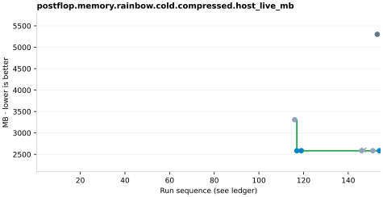
| Run | ID | Value | Decision | Role |
|---|---|---|---|---|
| 116 | B029 | 3309.12 | baseline | baseline / control |
| 117 | E027 | 2584.04 | keep | targeted |
| 119 | E027R | 2585.25 | keep | targeted |
| 146 | E037DR | 2585.26 | keep | measured alongside another target |
| 147 | E038 | 2601.78 | discard | measured alongside another target |
| 151 | G003 | 2585.35 | keep | measured alongside another target |
| 153 | B035 | 5302.11 | baseline | baseline / control |
| 154 | G005 | 2585.38 | keep | targeted |
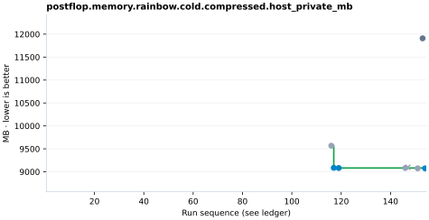
| Run | ID | Value | Decision | Role |
|---|---|---|---|---|
| 116 | B029 | 9568.63 | baseline | baseline / control |
| 117 | E027 | 9086.09 | keep | targeted |
| 119 | E027R | 9082.42 | keep | targeted |
| 146 | E037DR | 9082.83 | keep | measured alongside another target |
| 147 | E038 | 9098.86 | discard | measured alongside another target |
| 151 | G003 | 9075.19 | keep | measured alongside another target |
| 153 | B035 | 11909.4 | baseline | baseline / control |
| 154 | G005 | 9074.91 | keep | targeted |
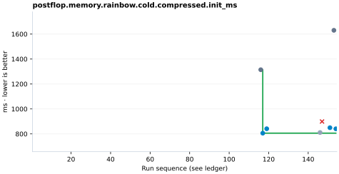
| Run | ID | Value | Decision | Role |
|---|---|---|---|---|
| 116 | B029 | 1314.29 | baseline | baseline / control |
| 117 | E027 | 805.953 | keep | targeted |
| 119 | E027R | 841.236 | keep | targeted |
| 146 | E037DR | 811.133 | keep | measured alongside another target |
| 147 | E038 | 899.131 | discard | targeted |
| 151 | G003 | 849.636 | keep | targeted |
| 153 | B035 | 1630.13 | baseline | baseline / control |
| 154 | G005 | 840.781 | keep | targeted |
| Run | ID | Value | Decision | Role |
|---|---|---|---|---|
| 116 | B029 | 631.143 | baseline | baseline / control |
| 117 | E027 | 166.332 | keep | targeted |
| 119 | E027R | 169.242 | keep | targeted |
| 146 | E037DR | 171.021 | keep | measured alongside another target |
| 147 | E038 | 180.216 | discard | measured alongside another target |
| 151 | G003 | 165.932 | keep | targeted |
| 153 | B035 | 833.943 | baseline | baseline / control |
| 154 | G005 | 162.879 | keep | targeted |
| Run | ID | Value | Decision | Role |
|---|---|---|---|---|
| 116 | B029 | 1203.85 | baseline | baseline / control |
| 117 | E027 | 331.271 | keep | targeted |
| 119 | E027R | 337.455 | keep | targeted |
| 146 | E037DR | 334.844 | keep | measured alongside another target |
| 147 | E038 | 355.314 | discard | measured alongside another target |
| 151 | G003 | 337.335 | keep | targeted |
| 153 | B035 | 1606.93 | baseline | baseline / control |
| 154 | G005 | 336.65 | keep | targeted |
| Run | ID | Value | Decision | Role |
|---|---|---|---|---|
| 116 | B029 | 5905.58 | baseline | baseline / control |
| 117 | E027 | 5905.58 | keep | targeted |
| 119 | E027R | 5905.58 | keep | targeted |
| 146 | E037DR | 5905.58 | keep | measured alongside another target |
| 147 | E038 | 5905.58 | discard | measured alongside another target |
| 151 | G003 | 5905.58 | keep | targeted |
| 153 | B035 | 6241.12 | baseline | baseline / control |
| 154 | G005 | 5905.58 | keep | targeted |
| Run | ID | Value | Decision | Role |
|---|---|---|---|---|
| 116 | B029 | 3317.09 | baseline | baseline / control |
| 117 | E027 | 2594.48 | keep | targeted |
| 119 | E027R | 2595.13 | keep | targeted |
| 146 | E037DR | 2597.09 | keep | measured alongside another target |
| 147 | E038 | 2611.74 | discard | measured alongside another target |
| 151 | G003 | 2597 | keep | measured alongside another target |
| 153 | B035 | 5309.97 | baseline | baseline / control |
| 154 | G005 | 2597.15 | keep | targeted |
| Run | ID | Value | Decision | Role |
|---|---|---|---|---|
| 116 | B029 | 9574.08 | baseline | baseline / control |
| 117 | E027 | 9087.57 | keep | targeted |
| 119 | E027R | 9099.27 | keep | targeted |
| 146 | E037DR | 9088.95 | keep | measured alongside another target |
| 147 | E038 | 9107.47 | discard | measured alongside another target |
| 151 | G003 | 9088.48 | keep | measured alongside another target |
| 153 | B035 | 11908.1 | baseline | baseline / control |
| 154 | G005 | 9087.97 | keep | targeted |
| Run | ID | Value | Decision | Role |
|---|---|---|---|---|
| 116 | B029 | 1344.45 | baseline | baseline / control |
| 117 | E027 | 800.572 | keep | targeted |
| 119 | E027R | 820.094 | keep | targeted |
| 146 | E037DR | 779.177 | keep | measured alongside another target |
| 147 | E038 | 848.795 | discard | targeted |
| 151 | G003 | 812.569 | keep | targeted |
| 153 | B035 | 1933.61 | baseline | baseline / control |
| 154 | G005 | 824.724 | keep | targeted |
| Run | ID | Value | Decision | Role |
|---|---|---|---|---|
| 116 | B029 | 659.917 | baseline | baseline / control |
| 117 | E027 | 163.089 | keep | targeted |
| 119 | E027R | 171.977 | keep | targeted |
| 146 | E037DR | 167.784 | keep | measured alongside another target |
| 147 | E038 | 177.682 | discard | measured alongside another target |
| 151 | G003 | 167.123 | keep | targeted |
| 153 | B035 | 838.366 | baseline | baseline / control |
| 154 | G005 | 171.306 | keep | targeted |
| Run | ID | Value | Decision | Role |
|---|---|---|---|---|
| 116 | B029 | 1270.07 | baseline | baseline / control |
| 117 | E027 | 329.358 | keep | targeted |
| 119 | E027R | 343.938 | keep | targeted |
| 146 | E037DR | 337.763 | keep | measured alongside another target |
| 147 | E038 | 338.35 | discard | measured alongside another target |
| 151 | G003 | 338.369 | keep | targeted |
| 153 | B035 | 1655.88 | baseline | baseline / control |
| 154 | G005 | 340.291 | keep | targeted |
| Run | ID | Value | Decision | Role |
|---|---|---|---|---|
| 102 | B026 | 4932.5 | baseline | baseline / control |
| 103 | E024C | 3825.21 | discard | targeted |
| 104 | E024D | 3825.21 | discard | targeted |
| 105 | E024E | 3825.21 | discard | targeted |
| 106 | E024F | 3825.21 | keep | targeted |
| 114 | E026R | 3623.88 | keep | targeted |
| 146 | E037DR | 3623.88 | keep | measured alongside another target |
| 147 | E038 | 3623.88 | discard | measured alongside another target |
| 151 | G003 | 3623.88 | keep | targeted |
| 153 | B035 | 4932.5 | baseline | baseline / control |
| 154 | G005 | 3623.88 | keep | targeted |
| Run | ID | Value | Decision | Role |
|---|---|---|---|---|
| 102 | B026 | 5320.28 | baseline | baseline / control |
| 103 | E024C | 4155.48 | discard | targeted |
| 104 | E024D | 3767.35 | discard | targeted |
| 105 | E024E | 3768 | discard | targeted |
| 106 | E024F | 3765.89 | keep | targeted |
| 114 | E026R | 3769.27 | keep | measured alongside another target |
| 146 | E037DR | 3769.34 | keep | measured alongside another target |
| 147 | E038 | 3777.09 | discard | measured alongside another target |
| 151 | G003 | 3770.58 | keep | measured alongside another target |
| 153 | B035 | 5318.64 | baseline | baseline / control |
| 154 | G005 | 3769.42 | keep | targeted |
| Run | ID | Value | Decision | Role |
|---|---|---|---|---|
| 102 | B026 | 10602.1 | baseline | baseline / control |
| 103 | E024C | 8510.67 | discard | targeted |
| 104 | E024D | 8099.76 | discard | targeted |
| 105 | E024E | 8333.98 | discard | targeted |
| 106 | E024F | 8324.1 | keep | targeted |
| 114 | E026R | 8126.6 | keep | measured alongside another target |
| 146 | E037DR | 8126.56 | keep | measured alongside another target |
| 147 | E038 | 8140.04 | discard | measured alongside another target |
| 151 | G003 | 8131.42 | keep | measured alongside another target |
| 153 | B035 | 10602.1 | baseline | baseline / control |
| 154 | G005 | 8126.62 | keep | targeted |
| Run | ID | Value | Decision | Role |
|---|---|---|---|---|
| 102 | B026 | 1585.71 | baseline | baseline / control |
| 103 | E024C | 1337.34 | discard | targeted |
| 104 | E024D | 1002.02 | discard | targeted |
| 105 | E024E | 1053.19 | discard | targeted |
| 106 | E024F | 987.248 | keep | targeted |
| 114 | E026R | 964.042 | keep | measured alongside another target |
| 146 | E037DR | 1005.51 | keep | measured alongside another target |
| 147 | E038 | 1024.83 | discard | targeted |
| 151 | G003 | 1099.29 | keep | targeted |
| 153 | B035 | 1707.97 | baseline | baseline / control |
| 154 | G005 | 1064.16 | keep | targeted |
| Run | ID | Value | Decision | Role |
|---|---|---|---|---|
| 102 | B026 | 676.406 | baseline | baseline / control |
| 103 | E024C | 665.861 | discard | targeted |
| 104 | E024D | 665.631 | discard | targeted |
| 105 | E024E | 148.062 | discard | targeted |
| 106 | E024F | 143.475 | keep | targeted |
| 114 | E026R | 141.5 | keep | measured alongside another target |
| 146 | E037DR | 143.051 | keep | measured alongside another target |
| 147 | E038 | 148.159 | discard | measured alongside another target |
| 151 | G003 | 164.683 | keep | targeted |
| 153 | B035 | 757.43 | baseline | baseline / control |
| 154 | G005 | 149.254 | keep | targeted |
| Run | ID | Value | Decision | Role |
|---|---|---|---|---|
| 102 | B026 | 1289.08 | baseline | baseline / control |
| 103 | E024C | 1352.16 | discard | targeted |
| 104 | E024D | 1315.99 | discard | targeted |
| 105 | E024E | 292.048 | discard | targeted |
| 106 | E024F | 286.381 | keep | targeted |
| 114 | E026R | 283.976 | keep | measured alongside another target |
| 146 | E037DR | 291.013 | keep | measured alongside another target |
| 147 | E038 | 298.523 | discard | measured alongside another target |
| 151 | G003 | 305.509 | keep | targeted |
| 153 | B035 | 1531 | baseline | baseline / control |
| 154 | G005 | 297.399 | keep | targeted |
| Run | ID | Value | Decision | Role |
|---|---|---|---|---|
| 102 | B026 | 4932.5 | baseline | baseline / control |
| 103 | E024C | 3825.21 | discard | targeted |
| 104 | E024D | 3825.21 | discard | targeted |
| 105 | E024E | 3825.21 | discard | targeted |
| 106 | E024F | 4932.5 | keep | targeted |
| 114 | E026R | 4731.17 | keep | targeted |
| 146 | E037DR | 4731.17 | keep | measured alongside another target |
| 147 | E038 | 4731.17 | discard | measured alongside another target |
| 151 | G003 | 4731.17 | keep | targeted |
| 153 | B035 | 4932.5 | baseline | baseline / control |
| 154 | G005 | 4731.17 | keep | targeted |
| Run | ID | Value | Decision | Role |
|---|---|---|---|---|
| 102 | B026 | 3936.01 | baseline | baseline / control |
| 103 | E024C | 5729.22 | discard | targeted |
| 104 | E024D | 5017.35 | discard | targeted |
| 105 | E024E | 5016.45 | discard | targeted |
| 106 | E024F | 3933.21 | keep | targeted |
| 114 | E026R | 3936.7 | keep | measured alongside another target |
| 146 | E037DR | 3936.32 | keep | measured alongside another target |
| 147 | E038 | 3932.81 | discard | measured alongside another target |
| 151 | G003 | 3936.38 | keep | measured alongside another target |
| 153 | B035 | 3934.76 | baseline | baseline / control |
| 154 | G005 | 3934.92 | keep | targeted |
| Run | ID | Value | Decision | Role |
|---|---|---|---|---|
| 102 | B026 | 9446.64 | baseline | baseline / control |
| 103 | E024C | 10288.6 | discard | targeted |
| 104 | E024D | 9618.69 | discard | targeted |
| 105 | E024E | 9613 | discard | targeted |
| 106 | E024F | 9446.6 | keep | targeted |
| 114 | E026R | 9246.36 | keep | measured alongside another target |
| 146 | E037DR | 9246.26 | keep | measured alongside another target |
| 147 | E038 | 9244.41 | discard | measured alongside another target |
| 151 | G003 | 9246.82 | keep | measured alongside another target |
| 153 | B035 | 9447.37 | baseline | baseline / control |
| 154 | G005 | 9246.43 | keep | targeted |
| Run | ID | Value | Decision | Role |
|---|---|---|---|---|
| 102 | B026 | 652.289 | baseline | baseline / control |
| 103 | E024C | 1613.89 | discard | targeted |
| 104 | E024D | 912.488 | discard | targeted |
| 105 | E024E | 883.464 | discard | targeted |
| 106 | E024F | 708.117 | keep | targeted |
| 114 | E026R | 697.384 | keep | measured alongside another target |
| 146 | E037DR | 747.581 | keep | measured alongside another target |
| 147 | E038 | 712.423 | discard | targeted |
| 151 | G003 | 679.66 | keep | targeted |
| 153 | B035 | 781.55 | baseline | baseline / control |
| 154 | G005 | 753.777 | keep | targeted |
| Run | ID | Value | Decision | Role |
|---|---|---|---|---|
| 102 | B026 | 157.493 | baseline | baseline / control |
| 103 | E024C | 253.722 | discard | targeted |
| 104 | E024D | 214.67 | discard | targeted |
| 105 | E024E | 194.303 | discard | targeted |
| 106 | E024F | 162.106 | keep | targeted |
| 114 | E026R | 155.113 | keep | measured alongside another target |
| 146 | E037DR | 157.777 | keep | measured alongside another target |
| 147 | E038 | 171.101 | discard | measured alongside another target |
| 151 | G003 | 157.418 | keep | targeted |
| 153 | B035 | 185.656 | baseline | baseline / control |
| 154 | G005 | 158.709 | keep | targeted |
| Run | ID | Value | Decision | Role |
|---|---|---|---|---|
| 102 | B026 | 309.454 | baseline | baseline / control |
| 103 | E024C | 489.964 | discard | targeted |
| 104 | E024D | 430.263 | discard | targeted |
| 105 | E024E | 388.079 | discard | targeted |
| 106 | E024F | 328.065 | keep | targeted |
| 114 | E026R | 314.333 | keep | measured alongside another target |
| 146 | E037DR | 309.516 | keep | measured alongside another target |
| 147 | E038 | 337.695 | discard | measured alongside another target |
| 151 | G003 | 315.509 | keep | targeted |
| 153 | B035 | 365.403 | baseline | baseline / control |
| 154 | G005 | 324.277 | keep | targeted |
| Run | ID | Value | Decision | Role |
|---|---|---|---|---|
| 1 | B001 | 0.281 | baseline | baseline / control |
| 4 | E001 | 0.277 | keep | targeted |
| 5 | E001R | 0.354 | keep | targeted |
| 8 | E003 | 0.296 | keep | measured alongside another target |
| 9 | E003R | 0.29 | keep | measured alongside another target |
| 20 | E007 | 0.394 | keep | targeted |
| 21 | E007R | 0.294 | keep | targeted |
| 30 | E010 | 0.295 | keep | targeted |
| 31 | E010R | 0.289 | keep | targeted |
| 47 | E014 | 0.289 | keep | measured alongside another target |
| 49 | E015 | 0.437 | keep | targeted |
| 50 | E015R | 0.278 | keep | targeted |
| 70 | F006 | 0.287 | keep | targeted |
| 88 | B022 | 0.294 | baseline | baseline / control |
| 89 | E021 | 0.304 | keep | targeted |
| 90 | E021R | 0.285 | keep | targeted |
| 107 | B027 | 0.276 | baseline | baseline / control |
| 108 | E025 | 0.277 | discard | targeted |
| 109 | E025R | 0.291 | discard | targeted |
| 110 | E025B | 0.334 | keep | targeted |
| 111 | E025BR | 0.309 | keep | targeted |
| 120 | B030 | 0.294 | baseline | baseline / control |
| 121 | E028 | 0.296 | keep | targeted |
| 122 | E028R | 0.272 | keep | targeted |
| 124 | E029 | 0.252 | keep | targeted |
| 129 | B032 | 0.254 | baseline | baseline / control |
| 131 | E031 | 0.263 | discard | targeted |
| 132 | E032 | 0.209 | keep | measured alongside another target |
| 133 | E032R | 0.283 | keep | measured alongside another target |
| 135 | E033 | 0.26 | keep | targeted |
| 136 | E033B | 0.277 | discard | targeted |
| 137 | E033R | 0.275 | keep | targeted |
| 139 | E035 | 0.323 | keep | targeted |
| 140 | E035R | 0.299 | keep | targeted |
| 141 | E036 | 0.239 | discard | targeted |
| 142 | E037 | 0.384 | discard | targeted |
| 143 | E037B | 0.288 | discard | targeted |
| 144 | E037C | 0.375 | discard | targeted |
| 145 | E037D | 0.255 | keep | targeted |
| 146 | E037DR | 0.268 | keep | targeted |
| 148 | B034 | 0.322 | baseline | baseline / control |
| 149 | G001 | 0.246 | keep | targeted |
| Run | ID | Value | Decision | Role |
|---|---|---|---|---|
| 120 | B030 | 0.4604 | baseline | baseline / control |
| 123 | B031 | 0.4545 | baseline | baseline / control |
| 124 | E029 | 0.3854 | keep | targeted |
| 125 | E029R | 0.2387 | keep | targeted |
| 126 | E030 | 0.3894 | discard | measured alongside another target |
| 127 | E030R | 0.3553 | discard | measured alongside another target |
| 128 | E030A | 0.2673 | keep | measured alongside another target |
| 129 | B032 | 0.8625 | baseline | baseline / control |
| 151 | G003 | 0.3327 | keep | measured alongside another target |
| 153 | B035 | 0.3525 | baseline | baseline / control |
| 154 | G005 | 0.2565 | keep | measured alongside another target |
| Run | ID | Value | Decision | Role |
|---|---|---|---|---|
| 1 | B001 | 0.22 | baseline | baseline / control |
| 4 | E001 | 0.094 | keep | targeted |
| 5 | E001R | 0.1 | keep | targeted |
| 8 | E003 | 0.094 | keep | measured alongside another target |
| 9 | E003R | 0.101 | keep | measured alongside another target |
| 20 | E007 | 0.098 | keep | targeted |
| 21 | E007R | 0.09 | keep | targeted |
| 30 | E010 | 0.095 | keep | targeted |
| 31 | E010R | 0.096 | keep | targeted |
| 47 | E014 | 0.094 | keep | measured alongside another target |
| 49 | E015 | 0.092 | keep | targeted |
| 50 | E015R | 0.085 | keep | targeted |
| 70 | F006 | 0.084 | keep | targeted |
| 88 | B022 | 0.084 | baseline | baseline / control |
| 89 | E021 | 0.085 | keep | targeted |
| 90 | E021R | 0.085 | keep | targeted |
| 107 | B027 | 0.087 | baseline | baseline / control |
| 108 | E025 | 0.085 | discard | targeted |
| 109 | E025R | 0.084 | discard | targeted |
| 110 | E025B | 0.086 | keep | targeted |
| 111 | E025BR | 0.085 | keep | targeted |
| 120 | B030 | 0.086 | baseline | baseline / control |
| 121 | E028 | 0.081 | keep | targeted |
| 122 | E028R | 0.081 | keep | targeted |
| 124 | E029 | 0.077 | keep | measured alongside another target |
| 129 | B032 | 0.077 | baseline | baseline / control |
| 131 | E031 | 0.081 | discard | targeted |
| 132 | E032 | 0.079 | keep | measured alongside another target |
| 133 | E032R | 0.082 | keep | measured alongside another target |
| 135 | E033 | 0.081 | keep | targeted |
| 136 | E033B | 0.107 | discard | targeted |
| 137 | E033R | 0.081 | keep | targeted |
| 139 | E035 | 0.086 | keep | targeted |
| 140 | E035R | 0.084 | keep | targeted |
| 141 | E036 | 0.091 | discard | targeted |
| 142 | E037 | 0.089 | discard | targeted |
| 143 | E037B | 0.102 | discard | targeted |
| 144 | E037C | 0.161 | discard | targeted |
| 145 | E037D | 0.081 | keep | targeted |
| 146 | E037DR | 0.082 | keep | targeted |
| 148 | B034 | 0.084 | baseline | baseline / control |
| 149 | G001 | 0.081 | keep | targeted |
| Run | ID | Value | Decision | Role |
|---|---|---|---|---|
| 120 | B030 | 0.4172 | baseline | baseline / control |
| 123 | B031 | 0.4051 | baseline | baseline / control |
| 124 | E029 | 0.2517 | keep | targeted |
| 125 | E029R | 0.2216 | keep | targeted |
| 126 | E030 | 0.797 | discard | measured alongside another target |
| 127 | E030R | 0.2485 | discard | measured alongside another target |
| 128 | E030A | 0.2426 | keep | measured alongside another target |
| 129 | B032 | 0.2635 | baseline | baseline / control |
| 151 | G003 | 0.2743 | keep | measured alongside another target |
| 153 | B035 | 0.3687 | baseline | baseline / control |
| 154 | G005 | 0.2361 | keep | measured alongside another target |
| Run | ID | Value | Decision | Role |
|---|---|---|---|---|
| 120 | B030 | 0.429575 | baseline | baseline / control |
| 123 | B031 | 0.423575 | baseline | baseline / control |
| 124 | E029 | 0.108375 | keep | targeted |
| 125 | E029R | 0.099375 | keep | targeted |
| 126 | E030 | 0.10535 | discard | measured alongside another target |
| 127 | E030R | 0.108825 | discard | measured alongside another target |
| 128 | E030A | 0.097875 | keep | measured alongside another target |
| 129 | B032 | 0.128325 | baseline | baseline / control |
| 151 | G003 | 0.113 | keep | measured alongside another target |
| 153 | B035 | 0.370525 | baseline | baseline / control |
| 154 | G005 | 0.103675 | keep | measured alongside another target |
| Run | ID | Value | Decision | Role |
|---|---|---|---|---|
| 134 | B033 | 0.527 | baseline | baseline / control |
| 135 | E033 | 0.525 | keep | targeted |
| 136 | E033B | 0.527 | discard | targeted |
| 137 | E033R | 0.599 | keep | targeted |
| 140 | E035R | 0.622 | keep | targeted |
| 141 | E036 | 0.553 | discard | targeted |
| 142 | E037 | 0.486 | discard | targeted |
| 143 | E037B | 0.526 | discard | targeted |
| 144 | E037C | 1.06 | discard | targeted |
| 145 | E037D | 0.532 | keep | targeted |
| 146 | E037DR | 0.503 | keep | targeted |
| 148 | B034 | 0.612 | baseline | baseline / control |
| 149 | G001 | 0.638 | keep | targeted |
| Run | ID | Value | Decision | Role |
|---|---|---|---|---|
| 134 | B033 | 0.2 | baseline | baseline / control |
| 135 | E033 | 0.23 | keep | targeted |
| 136 | E033B | 0.227 | discard | targeted |
| 137 | E033R | 0.209 | keep | targeted |
| 140 | E035R | 0.237 | keep | targeted |
| 141 | E036 | 0.217 | discard | targeted |
| 142 | E037 | 0.229 | discard | targeted |
| 143 | E037B | 0.278 | discard | targeted |
| 144 | E037C | 0.328 | discard | targeted |
| 145 | E037D | 0.229 | keep | targeted |
| 146 | E037DR | 0.221 | keep | targeted |
| 148 | B034 | 0.24 | baseline | baseline / control |
| 149 | G001 | 0.239 | keep | targeted |
| Run | ID | Value | Decision | Role |
|---|---|---|---|---|
| 134 | B033 | 2.569 | baseline | baseline / control |
| 135 | E033 | 2.538 | keep | targeted |
| 136 | E033B | 2.996 | discard | targeted |
| 137 | E033R | 2.614 | keep | targeted |
| 140 | E035R | 2.728 | keep | targeted |
| 141 | E036 | 2.623 | discard | targeted |
| 142 | E037 | 2.946 | discard | targeted |
| 143 | E037B | 2.429 | discard | targeted |
| 144 | E037C | 2.264 | discard | targeted |
| 145 | E037D | 2.209 | keep | targeted |
| 146 | E037DR | 2.464 | keep | targeted |
| 148 | B034 | 2.959 | baseline | baseline / control |
| 149 | G001 | 2.386 | keep | targeted |
| Run | ID | Value | Decision | Role |
|---|---|---|---|---|
| 134 | B033 | 2.733 | baseline | baseline / control |
| 135 | E033 | 2.754 | keep | targeted |
| 136 | E033B | 2.739 | discard | targeted |
| 137 | E033R | 2.791 | keep | targeted |
| 140 | E035R | 2.478 | keep | targeted |
| 141 | E036 | 2.752 | discard | targeted |
| 142 | E037 | 2.375 | discard | targeted |
| 143 | E037B | 2.44 | discard | targeted |
| 144 | E037C | 2.574 | discard | targeted |
| 145 | E037D | 2.451 | keep | targeted |
| 146 | E037DR | 2.381 | keep | targeted |
| 148 | B034 | 3.149 | baseline | baseline / control |
| 149 | G001 | 2.462 | keep | targeted |
| Run | ID | Value | Decision | Role |
|---|---|---|---|---|
| 12 | B004 | 1140.85 | baseline | baseline / control |
| 20 | E007 | 603.98 | keep | targeted |
| 21 | E007R | 603.98 | keep | targeted |
| 46 | B011 | 603.98 | baseline | baseline / control |
| 47 | E014 | 603.98 | keep | measured alongside another target |
| 48 | E014R | 603.98 | keep | measured alongside another target |
| 49 | E015 | 671.089 | keep | targeted |
| 50 | E015R | 671.089 | keep | targeted |
| 70 | F006 | 671.089 | keep | targeted |
| 88 | B022 | 671.089 | baseline | baseline / control |
| 89 | E021 | 536.871 | keep | targeted |
| 90 | E021R | 536.871 | keep | targeted |
| 129 | B032 | 536.871 | baseline | baseline / control |
| 132 | E032 | 503.316 | keep | targeted |
| 133 | E032R | 503.316 | keep | targeted |
| 148 | B034 | 671.089 | baseline | baseline / control |
| 151 | G003 | 503.316 | keep | targeted |
| Run | ID | Value | Decision | Role |
|---|---|---|---|---|
| 12 | B004 | 77.0805 | baseline | baseline / control |
| 20 | E007 | 77.0172 | keep | targeted |
| 21 | E007R | 79.0233 | keep | targeted |
| 46 | B011 | 77.4773 | baseline | baseline / control |
| 47 | E014 | 76.637 | keep | measured alongside another target |
| 48 | E014R | 77.2499 | keep | measured alongside another target |
| 49 | E015 | 80.5016 | keep | targeted |
| 50 | E015R | 77.4201 | keep | targeted |
| 70 | F006 | 76.2565 | keep | targeted |
| 88 | B022 | 78.7377 | baseline | baseline / control |
| 89 | E021 | 78.2891 | keep | targeted |
| 90 | E021R | 79.5018 | keep | targeted |
| 129 | B032 | 78.9652 | baseline | baseline / control |
| 132 | E032 | 77.941 | keep | measured alongside another target |
| 133 | E032R | 78.336 | keep | measured alongside another target |
| 148 | B034 | 79.7142 | baseline | baseline / control |
| 151 | G003 | 82.515 | keep | measured alongside another target |
| Run | ID | Value | Decision | Role |
|---|---|---|---|---|
| 1 | B001 | 34.513 | baseline | baseline / control |
| 4 | E001 | 35.446 | keep | targeted |
| 5 | E001R | 33.934 | keep | targeted |
| 8 | E003 | 34.4 | keep | measured alongside another target |
| 9 | E003R | 34.215 | keep | measured alongside another target |
| 20 | E007 | 32.787 | keep | targeted |
| 21 | E007R | 32.792 | keep | targeted |
| 30 | E010 | 24.308 | keep | targeted |
| 31 | E010R | 24.453 | keep | targeted |
| 47 | E014 | 24.389 | keep | measured alongside another target |
| 49 | E015 | 13.398 | keep | targeted |
| 50 | E015R | 13.485 | keep | targeted |
| 70 | F006 | 12.265 | keep | targeted |
| 88 | B022 | 13.014 | baseline | baseline / control |
| 89 | E021 | 12.885 | keep | targeted |
| 90 | E021R | 12.998 | keep | targeted |
| 107 | B027 | 13.091 | baseline | baseline / control |
| 108 | E025 | 13.317 | discard | targeted |
| 109 | E025R | 13.204 | discard | targeted |
| 110 | E025B | 13.305 | keep | targeted |
| 111 | E025BR | 11.999 | keep | targeted |
| 120 | B030 | 13.678 | baseline | baseline / control |
| 121 | E028 | 12.689 | keep | targeted |
| 122 | E028R | 12.641 | keep | targeted |
| 124 | E029 | 12.288 | keep | targeted |
| 129 | B032 | 13.199 | baseline | baseline / control |
| 131 | E031 | 13.068 | discard | targeted |
| 132 | E032 | 12.316 | keep | measured alongside another target |
| 133 | E032R | 11.629 | keep | measured alongside another target |
| 135 | E033 | 12.162 | keep | targeted |
| 136 | E033B | 11.83 | discard | targeted |
| 137 | E033R | 12.277 | keep | targeted |
| 139 | E035 | 12.937 | keep | targeted |
| 140 | E035R | 12.653 | keep | targeted |
| 141 | E036 | 12.213 | discard | targeted |
| 142 | E037 | 11.848 | discard | targeted |
| 143 | E037B | 9.423 | discard | targeted |
| 144 | E037C | 8.795 | discard | targeted |
| 145 | E037D | 8.809 | keep | targeted |
| 146 | E037DR | 9.033 | keep | targeted |
| 148 | B034 | 13.891 | baseline | baseline / control |
| 149 | G001 | 9.197 | keep | targeted |
| Run | ID | Value | Decision | Role |
|---|---|---|---|---|
| 12 | B004 | 224.552 | baseline | baseline / control |
| 20 | E007 | 224.552 | keep | targeted |
| 21 | E007R | 224.552 | keep | targeted |
| 46 | B011 | 224.552 | baseline | baseline / control |
| 47 | E014 | 224.552 | keep | measured alongside another target |
| 48 | E014R | 224.552 | keep | measured alongside another target |
| 49 | E015 | 224.552 | keep | targeted |
| 50 | E015R | 224.552 | keep | targeted |
| 70 | F006 | 224.552 | keep | targeted |
| 88 | B022 | 224.552 | baseline | baseline / control |
| 89 | E021 | 224.552 | keep | targeted |
| 90 | E021R | 224.552 | keep | targeted |
| 129 | B032 | 224.552 | baseline | baseline / control |
| 132 | E032 | 224.552 | keep | measured alongside another target |
| 133 | E032R | 224.552 | keep | measured alongside another target |
| 148 | B034 | 224.552 | baseline | baseline / control |
| 151 | G003 | 224.552 | keep | targeted |
| Run | ID | Value | Decision | Role |
|---|---|---|---|---|
| 12 | B004 | 1201.38 | baseline | baseline / control |
| 20 | E007 | 643.988 | keep | targeted |
| 21 | E007R | 643.988 | keep | targeted |
| 46 | B011 | 644.652 | baseline | baseline / control |
| 47 | E014 | 644.652 | keep | measured alongside another target |
| 48 | E014R | 644.652 | keep | measured alongside another target |
| 49 | E015 | 706.776 | keep | targeted |
| 50 | E015R | 706.776 | keep | targeted |
| 70 | F006 | 706.776 | keep | targeted |
| 88 | B022 | 706.776 | baseline | baseline / control |
| 89 | E021 | 594.5 | keep | targeted |
| 90 | E021R | 594.5 | keep | targeted |
| 129 | B032 | 594.5 | baseline | baseline / control |
| 132 | E032 | 558.527 | keep | targeted |
| 133 | E032R | 558.527 | keep | targeted |
| 148 | B034 | 706.776 | baseline | baseline / control |
| 151 | G003 | 558.527 | keep | targeted |
| Run | ID | Value | Decision | Role |
|---|---|---|---|---|
| 120 | B030 | 12.7483 | baseline | baseline / control |
| 123 | B031 | 12.7186 | baseline | baseline / control |
| 124 | E029 | 13.0252 | keep | targeted |
| 125 | E029R | 12.7441 | keep | targeted |
| 126 | E030 | 13.8908 | discard | measured alongside another target |
| 127 | E030R | 11.6832 | discard | measured alongside another target |
| 128 | E030A | 13.2616 | keep | measured alongside another target |
| 129 | B032 | 13.4164 | baseline | baseline / control |
| 151 | G003 | 8.9606 | keep | measured alongside another target |
| 153 | B035 | 13.9405 | baseline | baseline / control |
| 154 | G005 | 8.8877 | keep | measured alongside another target |
| Run | ID | Value | Decision | Role |
|---|---|---|---|---|
| 12 | B004 | 184.71 | baseline | baseline / control |
| 20 | E007 | 595.465 | keep | targeted |
| 21 | E007R | 187.673 | keep | targeted |
| 46 | B011 | 166.534 | baseline | baseline / control |
| 47 | E014 | 128.984 | keep | targeted |
| 48 | E014R | 134.988 | keep | targeted |
| 49 | E015 | 458.42 | keep | targeted |
| 50 | E015R | 136.493 | keep | targeted |
| 70 | F006 | 136.747 | keep | targeted |
| 88 | B022 | 137.221 | baseline | baseline / control |
| 89 | E021 | 511.68 | keep | targeted |
| 90 | E021R | 146.012 | keep | targeted |
| 129 | B032 | 154.633 | baseline | baseline / control |
| 132 | E032 | 146.671 | keep | targeted |
| 133 | E032R | 138.6 | keep | targeted |
| 148 | B034 | 146.546 | baseline | baseline / control |
| 151 | G003 | 151.813 | keep | targeted |
| Run | ID | Value | Decision | Role |
|---|---|---|---|---|
| 1 | B001 | 33.508 | baseline | baseline / control |
| 4 | E001 | 33.016 | keep | targeted |
| 5 | E001R | 32.829 | keep | targeted |
| 8 | E003 | 32.722 | keep | measured alongside another target |
| 9 | E003R | 32.744 | keep | measured alongside another target |
| 20 | E007 | 24.037 | keep | targeted |
| 21 | E007R | 23.784 | keep | targeted |
| 30 | E010 | 19.145 | keep | targeted |
| 31 | E010R | 19.257 | keep | targeted |
| 47 | E014 | 19.277 | keep | measured alongside another target |
| 49 | E015 | 19.421 | keep | targeted |
| 50 | E015R | 19.294 | keep | targeted |
| 70 | F006 | 17.892 | keep | targeted |
| 88 | B022 | 19.437 | baseline | baseline / control |
| 89 | E021 | 18.194 | keep | targeted |
| 90 | E021R | 18.12 | keep | targeted |
| 107 | B027 | 18.213 | baseline | baseline / control |
| 108 | E025 | 17.622 | discard | targeted |
| 109 | E025R | 17.547 | discard | targeted |
| 110 | E025B | 17.535 | keep | targeted |
| 111 | E025BR | 16.183 | keep | targeted |
| 120 | B030 | 17.586 | baseline | baseline / control |
| 121 | E028 | 16.943 | keep | targeted |
| 122 | E028R | 17.003 | keep | targeted |
| 124 | E029 | 17.004 | keep | measured alongside another target |
| 129 | B032 | 16.89 | baseline | baseline / control |
| 131 | E031 | 17.265 | discard | targeted |
| 132 | E032 | 16.71 | keep | measured alongside another target |
| 133 | E032R | 16.474 | keep | measured alongside another target |
| 135 | E033 | 16.592 | keep | targeted |
| 136 | E033B | 16.557 | discard | targeted |
| 137 | E033R | 16.677 | keep | targeted |
| 139 | E035 | 15.157 | keep | targeted |
| 140 | E035R | 15.105 | keep | targeted |
| 141 | E036 | 15.823 | discard | targeted |
| 142 | E037 | 14.189 | discard | targeted |
| 143 | E037B | 13.062 | discard | targeted |
| 144 | E037C | 12.94 | discard | targeted |
| 145 | E037D | 12.734 | keep | targeted |
| 146 | E037DR | 12.656 | keep | targeted |
| 148 | B034 | 19.612 | baseline | baseline / control |
| 149 | G001 | 12.981 | keep | targeted |
| Run | ID | Value | Decision | Role |
|---|---|---|---|---|
| 120 | B030 | 13.5429 | baseline | baseline / control |
| 123 | B031 | 13.5384 | baseline | baseline / control |
| 124 | E029 | 12.8556 | keep | targeted |
| 125 | E029R | 12.8703 | keep | targeted |
| 126 | E030 | 13.8766 | discard | measured alongside another target |
| 127 | E030R | 12.1938 | discard | measured alongside another target |
| 128 | E030A | 13.4487 | keep | measured alongside another target |
| 129 | B032 | 14.3168 | baseline | baseline / control |
| 151 | G003 | 9.5773 | keep | measured alongside another target |
| 153 | B035 | 13.9294 | baseline | baseline / control |
| 154 | G005 | 10.2597 | keep | measured alongside another target |
| Run | ID | Value | Decision | Role |
|---|---|---|---|---|
| 120 | B030 | 13.5862 | baseline | baseline / control |
| 123 | B031 | 13.1986 | baseline | baseline / control |
| 124 | E029 | 11.9527 | keep | targeted |
| 125 | E029R | 11.8914 | keep | targeted |
| 126 | E030 | 12.2502 | discard | measured alongside another target |
| 127 | E030R | 10.952 | discard | measured alongside another target |
| 128 | E030A | 12.0481 | keep | measured alongside another target |
| 129 | B032 | 11.9312 | baseline | baseline / control |
| 151 | G003 | 8.10853 | keep | measured alongside another target |
| 153 | B035 | 14.6222 | baseline | baseline / control |
| 154 | G005 | 8.36303 | keep | measured alongside another target |
| Run | ID | Value | Decision | Role |
|---|---|---|---|---|
| 60 | B013 | 5.39219 | baseline | baseline / control |
| 65 | F001 | 3.21695 | keep | targeted |
| 87 | F009 | 3.20016 | keep | targeted |
| 125 | E029R | 3.02373 | keep | targeted |
| 133 | E032R | 2.95647 | keep | measured alongside another target |
| 140 | E035R | 2.6968 | keep | measured alongside another target |
| 146 | E037DR | 2.26773 | keep | targeted |
| 148 | B034 | 3.54927 | baseline | baseline / control |
| 149 | G001 | 2.31678 | keep | measured alongside another target |
| Run | ID | Value | Decision | Role |
|---|---|---|---|---|
| 134 | B033 | 9.167 | baseline | baseline / control |
| 135 | E033 | 8.582 | keep | targeted |
| 136 | E033B | 9.157 | discard | targeted |
| 137 | E033R | 8.745 | keep | targeted |
| 140 | E035R | 9.033 | keep | targeted |
| 141 | E036 | 8.863 | discard | targeted |
| 142 | E037 | 7.42 | discard | targeted |
| 143 | E037B | 7.06 | discard | targeted |
| 144 | E037C | 6.775 | discard | targeted |
| 145 | E037D | 7.007 | keep | targeted |
| 146 | E037DR | 6.261 | keep | targeted |
| 148 | B034 | 10.424 | baseline | baseline / control |
| 149 | G001 | 6.92 | keep | targeted |
| Run | ID | Value | Decision | Role |
|---|---|---|---|---|
| 134 | B033 | 13.092 | baseline | baseline / control |
| 135 | E033 | 12.328 | keep | targeted |
| 136 | E033B | 12.488 | discard | targeted |
| 137 | E033R | 12.33 | keep | targeted |
| 140 | E035R | 11.298 | keep | targeted |
| 141 | E036 | 11.799 | discard | targeted |
| 142 | E037 | 10.607 | discard | targeted |
| 143 | E037B | 9.869 | discard | targeted |
| 144 | E037C | 9.856 | discard | targeted |
| 145 | E037D | 9.635 | keep | targeted |
| 146 | E037DR | 9.622 | keep | targeted |
| 148 | B034 | 14.703 | baseline | baseline / control |
| 149 | G001 | 9.617 | keep | targeted |
| Run | ID | Value | Decision | Role |
|---|---|---|---|---|
| 12 | B004 | 3590.32 | baseline | baseline / control |
| 20 | E007 | 1543.5 | keep | targeted |
| 21 | E007R | 1543.5 | keep | targeted |
| 46 | B011 | 1543.5 | baseline | baseline / control |
| 47 | E014 | 1543.5 | keep | measured alongside another target |
| 48 | E014R | 1543.5 | keep | measured alongside another target |
| 49 | E015 | 1711.28 | keep | targeted |
| 50 | E015R | 1711.28 | keep | targeted |
| 70 | F006 | 1711.28 | keep | targeted |
| 88 | B022 | 1711.28 | baseline | baseline / control |
| 89 | E021 | 1409.29 | keep | targeted |
| 90 | E021R | 1409.29 | keep | targeted |
| 129 | B032 | 1409.29 | baseline | baseline / control |
| 132 | E032 | 1308.62 | keep | targeted |
| 133 | E032R | 1308.62 | keep | targeted |
| 148 | B034 | 1711.28 | baseline | baseline / control |
| 151 | G003 | 1308.62 | keep | targeted |
| Run | ID | Value | Decision | Role |
|---|---|---|---|---|
| 12 | B004 | 241.93 | baseline | baseline / control |
| 20 | E007 | 231.461 | keep | targeted |
| 21 | E007R | 246.74 | keep | targeted |
| 46 | B011 | 239.263 | baseline | baseline / control |
| 47 | E014 | 210.916 | keep | measured alongside another target |
| 48 | E014R | 210.436 | keep | measured alongside another target |
| 49 | E015 | 204.384 | keep | targeted |
| 50 | E015R | 212.809 | keep | targeted |
| 70 | F006 | 205.267 | keep | targeted |
| 88 | B022 | 212.595 | baseline | baseline / control |
| 89 | E021 | 213.531 | keep | targeted |
| 90 | E021R | 217.376 | keep | targeted |
| 129 | B032 | 215.766 | baseline | baseline / control |
| 132 | E032 | 208.039 | keep | measured alongside another target |
| 133 | E032R | 212.764 | keep | measured alongside another target |
| 148 | B034 | 206.527 | baseline | baseline / control |
| 151 | G003 | 220.894 | keep | measured alongside another target |
| Run | ID | Value | Decision | Role |
|---|---|---|---|---|
| 1 | B001 | 141.242 | baseline | baseline / control |
| 4 | E001 | 142.945 | keep | targeted |
| 5 | E001R | 140.573 | keep | targeted |
| 8 | E003 | 142.487 | keep | measured alongside another target |
| 9 | E003R | 140.187 | keep | measured alongside another target |
| 20 | E007 | 133.402 | keep | targeted |
| 21 | E007R | 133.419 | keep | targeted |
| 30 | E010 | 93.947 | keep | targeted |
| 31 | E010R | 93.785 | keep | targeted |
| 47 | E014 | 94.587 | keep | measured alongside another target |
| 49 | E015 | 41.632 | keep | targeted |
| 50 | E015R | 41.823 | keep | targeted |
| 70 | F006 | 38.806 | keep | targeted |
| 88 | B022 | 41.56 | baseline | baseline / control |
| 89 | E021 | 41.641 | keep | targeted |
| 90 | E021R | 41.037 | keep | targeted |
| 107 | B027 | 41.704 | baseline | baseline / control |
| 108 | E025 | 40.97 | discard | targeted |
| 109 | E025R | 39.151 | discard | targeted |
| 110 | E025B | 38.815 | keep | targeted |
| 111 | E025BR | 38.857 | keep | targeted |
| 120 | B030 | 40.07 | baseline | baseline / control |
| 121 | E028 | 39.507 | keep | targeted |
| 122 | E028R | 38.685 | keep | targeted |
| 124 | E029 | 38.453 | keep | targeted |
| 129 | B032 | 38.581 | baseline | baseline / control |
| 131 | E031 | 38.459 | discard | targeted |
| 132 | E032 | 39.397 | keep | measured alongside another target |
| 133 | E032R | 39.74 | keep | measured alongside another target |
| 135 | E033 | 39.808 | keep | targeted |
| 136 | E033B | 39.421 | discard | targeted |
| 137 | E033R | 38.759 | keep | targeted |
| 139 | E035 | 39.423 | keep | targeted |
| 140 | E035R | 39.323 | keep | targeted |
| 141 | E036 | 39.953 | discard | targeted |
| 142 | E037 | 34.035 | discard | targeted |
| 143 | E037B | 29.324 | discard | targeted |
| 144 | E037C | 26.183 | discard | targeted |
| 145 | E037D | 24.967 | keep | targeted |
| 146 | E037DR | 25.355 | keep | targeted |
| 148 | B034 | 42 | baseline | baseline / control |
| 149 | G001 | 25.377 | keep | targeted |
| Run | ID | Value | Decision | Role |
|---|---|---|---|---|
| 12 | B004 | 587.24 | baseline | baseline / control |
| 20 | E007 | 587.24 | keep | targeted |
| 21 | E007R | 587.24 | keep | targeted |
| 46 | B011 | 587.24 | baseline | baseline / control |
| 47 | E014 | 587.24 | keep | measured alongside another target |
| 48 | E014R | 587.24 | keep | measured alongside another target |
| 49 | E015 | 587.24 | keep | targeted |
| 50 | E015R | 587.24 | keep | targeted |
| 70 | F006 | 587.24 | keep | targeted |
| 88 | B022 | 587.24 | baseline | baseline / control |
| 89 | E021 | 587.24 | keep | targeted |
| 90 | E021R | 587.24 | keep | targeted |
| 129 | B032 | 587.24 | baseline | baseline / control |
| 132 | E032 | 587.24 | keep | measured alongside another target |
| 133 | E032R | 587.24 | keep | measured alongside another target |
| 148 | B034 | 587.24 | baseline | baseline / control |
| 151 | G003 | 587.24 | keep | targeted |
| Run | ID | Value | Decision | Role |
|---|---|---|---|---|
| 12 | B004 | 3632.62 | baseline | baseline / control |
| 20 | E007 | 1591.18 | keep | targeted |
| 21 | E007R | 1591.18 | keep | targeted |
| 46 | B011 | 1592.91 | baseline | baseline / control |
| 47 | E014 | 1592.91 | keep | measured alongside another target |
| 48 | E014R | 1592.91 | keep | measured alongside another target |
| 49 | E015 | 1750.51 | keep | targeted |
| 50 | E015R | 1750.51 | keep | targeted |
| 70 | F006 | 1750.51 | keep | targeted |
| 88 | B022 | 1750.51 | baseline | baseline / control |
| 89 | E021 | 1456.89 | keep | targeted |
| 90 | E021R | 1456.89 | keep | targeted |
| 129 | B032 | 1456.89 | baseline | baseline / control |
| 132 | E032 | 1357.22 | keep | targeted |
| 133 | E032R | 1357.22 | keep | targeted |
| 148 | B034 | 1750.51 | baseline | baseline / control |
| 151 | G003 | 1357.22 | keep | targeted |
| Run | ID | Value | Decision | Role |
|---|---|---|---|---|
| 120 | B030 | 39.4661 | baseline | baseline / control |
| 123 | B031 | 38.9525 | baseline | baseline / control |
| 124 | E029 | 38.3549 | keep | targeted |
| 125 | E029R | 38.6179 | keep | targeted |
| 126 | E030 | 37.9373 | discard | measured alongside another target |
| 127 | E030R | 35.4491 | discard | measured alongside another target |
| 128 | E030A | 38.4597 | keep | measured alongside another target |
| 129 | B032 | 37.8048 | baseline | baseline / control |
| 151 | G003 | 25.958 | keep | measured alongside another target |
| 153 | B035 | 43.8741 | baseline | baseline / control |
| 154 | G005 | 25.3321 | keep | measured alongside another target |
| Run | ID | Value | Decision | Role |
|---|---|---|---|---|
| 12 | B004 | 325.349 | baseline | baseline / control |
| 20 | E007 | 268.576 | keep | targeted |
| 21 | E007R | 295.346 | keep | targeted |
| 46 | B011 | 281.781 | baseline | baseline / control |
| 47 | E014 | 211.306 | keep | targeted |
| 48 | E014R | 213.619 | keep | targeted |
| 49 | E015 | 235.722 | keep | targeted |
| 50 | E015R | 230.258 | keep | targeted |
| 70 | F006 | 235.036 | keep | targeted |
| 88 | B022 | 232.181 | baseline | baseline / control |
| 89 | E021 | 240.911 | keep | targeted |
| 90 | E021R | 234.64 | keep | targeted |
| 129 | B032 | 230.057 | baseline | baseline / control |
| 132 | E032 | 237.132 | keep | targeted |
| 133 | E032R | 217.732 | keep | targeted |
| 148 | B034 | 237.597 | baseline | baseline / control |
| 151 | G003 | 243.216 | keep | targeted |
| Run | ID | Value | Decision | Role |
|---|---|---|---|---|
| 1 | B001 | 152.884 | baseline | baseline / control |
| 4 | E001 | 152.021 | keep | targeted |
| 5 | E001R | 151.094 | keep | targeted |
| 8 | E003 | 151.989 | keep | measured alongside another target |
| 9 | E003R | 153.638 | keep | measured alongside another target |
| 20 | E007 | 106.379 | keep | targeted |
| 21 | E007R | 106.602 | keep | targeted |
| 30 | E010 | 78.157 | keep | targeted |
| 31 | E010R | 78.01 | keep | targeted |
| 47 | E014 | 79.002 | keep | measured alongside another target |
| 49 | E015 | 67.432 | keep | targeted |
| 50 | E015R | 67.283 | keep | targeted |
| 70 | F006 | 62.182 | keep | targeted |
| 88 | B022 | 67.243 | baseline | baseline / control |
| 89 | E021 | 63.324 | keep | targeted |
| 90 | E021R | 63.133 | keep | targeted |
| 107 | B027 | 63.517 | baseline | baseline / control |
| 108 | E025 | 60.958 | discard | targeted |
| 109 | E025R | 59.872 | discard | targeted |
| 110 | E025B | 59.263 | keep | targeted |
| 111 | E025BR | 60.351 | keep | targeted |
| 120 | B030 | 60.301 | baseline | baseline / control |
| 121 | E028 | 58.432 | keep | targeted |
| 122 | E028R | 57.514 | keep | targeted |
| 124 | E029 | 57.774 | keep | measured alongside another target |
| 129 | B032 | 57.473 | baseline | baseline / control |
| 131 | E031 | 59.284 | discard | targeted |
| 132 | E032 | 58.319 | keep | measured alongside another target |
| 133 | E032R | 57.946 | keep | measured alongside another target |
| 135 | E033 | 57.988 | keep | targeted |
| 136 | E033B | 58.119 | discard | targeted |
| 137 | E033R | 58.058 | keep | targeted |
| 139 | E035 | 53.486 | keep | targeted |
| 140 | E035R | 52.933 | keep | targeted |
| 141 | E036 | 55.576 | discard | targeted |
| 142 | E037 | 48.491 | discard | targeted |
| 143 | E037B | 44.318 | discard | targeted |
| 144 | E037C | 43.123 | discard | targeted |
| 145 | E037D | 41.536 | keep | targeted |
| 146 | E037DR | 41.825 | keep | targeted |
| 148 | B034 | 69.358 | baseline | baseline / control |
| 149 | G001 | 41.768 | keep | targeted |
| Run | ID | Value | Decision | Role |
|---|---|---|---|---|
| 120 | B030 | 39.9125 | baseline | baseline / control |
| 123 | B031 | 38.1159 | baseline | baseline / control |
| 124 | E029 | 38.5443 | keep | targeted |
| 125 | E029R | 38.5531 | keep | targeted |
| 126 | E030 | 39.5473 | discard | measured alongside another target |
| 127 | E030R | 36.1883 | discard | measured alongside another target |
| 128 | E030A | 38.809 | keep | measured alongside another target |
| 129 | B032 | 40.8427 | baseline | baseline / control |
| 151 | G003 | 26.7404 | keep | measured alongside another target |
| 153 | B035 | 44.1018 | baseline | baseline / control |
| 154 | G005 | 26.4326 | keep | measured alongside another target |
| Run | ID | Value | Decision | Role |
|---|---|---|---|---|
| 120 | B030 | 41.5261 | baseline | baseline / control |
| 123 | B031 | 39.5097 | baseline | baseline / control |
| 124 | E029 | 37.2197 | keep | targeted |
| 125 | E029R | 37.2421 | keep | targeted |
| 126 | E030 | 37.368 | discard | measured alongside another target |
| 127 | E030R | 34.369 | discard | measured alongside another target |
| 128 | E030A | 37.4053 | keep | measured alongside another target |
| 129 | B032 | 37.1492 | baseline | baseline / control |
| 151 | G003 | 24.2759 | keep | measured alongside another target |
| 153 | B035 | 43.93 | baseline | baseline / control |
| 154 | G005 | 24.4457 | keep | measured alongside another target |
| Run | ID | Value | Decision | Role |
|---|---|---|---|---|
| 60 | B013 | 17.6992 | baseline | baseline / control |
| 65 | F001 | 7.98608 | keep | targeted |
| 87 | F009 | 7.93078 | keep | targeted |
| 125 | E029R | 7.35701 | keep | targeted |
| 133 | E032R | 7.42614 | keep | measured alongside another target |
| 140 | E035R | 6.78724 | keep | measured alongside another target |
| 146 | E037DR | 5.33606 | keep | targeted |
| 148 | B034 | 8.92597 | baseline | baseline / control |
| 149 | G001 | 5.32332 | keep | measured alongside another target |
| Run | ID | Value | Decision | Role |
|---|---|---|---|---|
| 134 | B033 | 197.123 | baseline | baseline / control |
| 135 | E033 | 161.789 | keep | targeted |
| 136 | E033B | 181.62 | discard | targeted |
| 137 | E033R | 162.047 | keep | targeted |
| 140 | E035R | 161.381 | keep | targeted |
| 141 | E036 | 163.015 | discard | targeted |
| 142 | E037 | 139.971 | discard | targeted |
| 143 | E037B | 120.578 | discard | targeted |
| 144 | E037C | 117.151 | discard | targeted |
| 145 | E037D | 112.211 | keep | targeted |
| 146 | E037DR | 112.307 | keep | targeted |
| 148 | B034 | 197.742 | baseline | baseline / control |
| 149 | G001 | 113.863 | keep | targeted |
| Run | ID | Value | Decision | Role |
|---|---|---|---|---|
| 134 | B033 | 290.68 | baseline | baseline / control |
| 135 | E033 | 251.787 | keep | targeted |
| 136 | E033B | 262.141 | discard | targeted |
| 137 | E033R | 252.738 | keep | targeted |
| 140 | E035R | 227.091 | keep | targeted |
| 141 | E036 | 237.416 | discard | targeted |
| 142 | E037 | 208.149 | discard | targeted |
| 143 | E037B | 190.591 | discard | targeted |
| 144 | E037C | 191.917 | discard | targeted |
| 145 | E037D | 184.509 | keep | targeted |
| 146 | E037DR | 184.056 | keep | targeted |
| 148 | B034 | 315.572 | baseline | baseline / control |
| 149 | G001 | 185.17 | keep | targeted |
| Run | ID | Value | Decision | Role |
|---|---|---|---|---|
| 3 | B003 | 104.204 | baseline | baseline / control |
| 13 | E005 | 104.204 | keep | measured alongside another target |
| 14 | E005R | 104.204 | keep | measured alongside another target |
| 15 | E006 | 104.204 | keep | measured alongside another target |
| 16 | E006R | 104.204 | keep | measured alongside another target |
| 40 | E012R | 104.204 | keep | measured alongside another target |
| 41 | E012R2 | 104.204 | keep | measured alongside another target |
| 54 | B012 | 104.204 | baseline | baseline / control |
| 55 | E017 | 104.204 | keep | measured alongside another target |
| 57 | E017R2 | 104.204 | keep | measured alongside another target |
| 58 | E018 | 104.204 | discard | measured alongside another target |
| 59 | E018R | 104.204 | discard | measured alongside another target |
| 61 | B014 | 104.204 | baseline | baseline / control |
| 66 | F002 | 104.204 | keep | targeted |
| 73 | B019 | 104.204 | baseline | baseline / control |
| 75 | E019R | 104.204 | keep | measured alongside another target |
| 76 | E019R2 | 104.204 | keep | measured alongside another target |
| Run | ID | Value | Decision | Role |
|---|---|---|---|---|
| 3 | B003 | 34.4208 | baseline | baseline / control |
| 13 | E005 | 32.1258 | keep | measured alongside another target |
| 14 | E005R | 28.4771 | keep | measured alongside another target |
| 15 | E006 | 27.1967 | keep | measured alongside another target |
| 16 | E006R | 32.7023 | keep | measured alongside another target |
| 40 | E012R | 33.8869 | keep | measured alongside another target |
| 41 | E012R2 | 29.7928 | keep | measured alongside another target |
| 54 | B012 | 26.0529 | baseline | baseline / control |
| 55 | E017 | 25.109 | keep | targeted |
| 57 | E017R2 | 25.491 | keep | targeted |
| 58 | E018 | 25.2226 | discard | targeted |
| 59 | E018R | 25.5789 | discard | targeted |
| 61 | B014 | 32.8806 | baseline | baseline / control |
| 66 | F002 | 30.7971 | keep | targeted |
| 73 | B019 | 25.8647 | baseline | baseline / control |
| 75 | E019R | 24.7854 | keep | measured alongside another target |
| 76 | E019R2 | 25.2849 | keep | measured alongside another target |
| Run | ID | Value | Decision | Role |
|---|---|---|---|---|
| 3 | B003 | 224.552 | baseline | baseline / control |
| 6 | E002 | 224.552 | discard | targeted |
| 7 | E002R | 224.552 | discard | targeted |
| 22 | E008 | 224.552 | keep | targeted |
| 23 | E008R | 224.552 | keep | targeted |
| 40 | E012R | 224.552 | keep | measured alongside another target |
| 61 | B014 | 224.552 | baseline | baseline / control |
| 66 | F002 | 224.552 | keep | targeted |
| 78 | B020 | 224.552 | baseline | baseline / control |
| 79 | E020 | 224.552 | keep | targeted |
| 80 | E020R | 224.552 | keep | targeted |
| 82 | E020R2 | 224.552 | keep | targeted |
| 83 | B021 | 224.552 | baseline | baseline / control |
| 84 | B021R | 224.552 | baseline | baseline / control |
| 85 | E020R3 | 224.552 | keep | targeted |
| Run | ID | Value | Decision | Role |
|---|---|---|---|---|
| 3 | B003 | 1439.99 | baseline | baseline / control |
| 6 | E002 | 1473.71 | discard | targeted |
| 7 | E002R | 1488.77 | discard | targeted |
| 22 | E008 | 325.655 | keep | targeted |
| 23 | E008R | 338.981 | keep | targeted |
| 40 | E012R | 339.335 | keep | measured alongside another target |
| 61 | B014 | 1424.24 | baseline | baseline / control |
| 66 | F002 | 314.75 | keep | targeted |
| 78 | B020 | 321.813 | baseline | baseline / control |
| 79 | E020 | 297.885 | keep | targeted |
| 80 | E020R | 312.444 | keep | targeted |
| 82 | E020R2 | 294.414 | keep | targeted |
| 83 | B021 | 313.432 | baseline | baseline / control |
| 84 | B021R | 327.375 | baseline | baseline / control |
| 85 | E020R3 | 292.776 | keep | targeted |
| Run | ID | Value | Decision | Role |
|---|---|---|---|---|
| 3 | B003 | 204.808 | baseline | baseline / control |
| 6 | E002 | 200.461 | discard | targeted |
| 7 | E002R | 203.175 | discard | targeted |
| 22 | E008 | 77.8343 | keep | targeted |
| 23 | E008R | 84.6984 | keep | targeted |
| 40 | E012R | 78.7995 | keep | measured alongside another target |
| 61 | B014 | 197.017 | baseline | baseline / control |
| 66 | F002 | 78.3708 | keep | targeted |
| 78 | B020 | 76.8118 | baseline | baseline / control |
| 79 | E020 | 71.8998 | keep | targeted |
| 80 | E020R | 75.6173 | keep | targeted |
| 82 | E020R2 | 72.4907 | keep | targeted |
| 83 | B021 | 75.2349 | baseline | baseline / control |
| 84 | B021R | 78.3473 | baseline | baseline / control |
| 85 | E020R3 | 73.3495 | keep | targeted |
| Run | ID | Value | Decision | Role |
|---|---|---|---|---|
| 3 | B003 | 104.204 | baseline | baseline / control |
| 13 | E005 | 104.204 | keep | measured alongside another target |
| 14 | E005R | 104.204 | keep | measured alongside another target |
| 15 | E006 | 104.204 | keep | measured alongside another target |
| 16 | E006R | 104.204 | keep | measured alongside another target |
| 40 | E012R | 104.204 | keep | measured alongside another target |
| 41 | E012R2 | 104.204 | keep | measured alongside another target |
| 54 | B012 | 104.204 | baseline | baseline / control |
| 55 | E017 | 104.204 | keep | measured alongside another target |
| 57 | E017R2 | 104.204 | keep | measured alongside another target |
| 58 | E018 | 104.204 | discard | measured alongside another target |
| 59 | E018R | 104.204 | discard | measured alongside another target |
| 61 | B014 | 104.204 | baseline | baseline / control |
| 66 | F002 | 104.204 | keep | targeted |
| 73 | B019 | 104.204 | baseline | baseline / control |
| 75 | E019R | 104.204 | keep | measured alongside another target |
| 76 | E019R2 | 104.204 | keep | measured alongside another target |
| Run | ID | Value | Decision | Role |
|---|---|---|---|---|
| 3 | B003 | 224.552 | baseline | baseline / control |
| 6 | E002 | 224.552 | discard | targeted |
| 7 | E002R | 224.552 | discard | targeted |
| 22 | E008 | 224.552 | keep | targeted |
| 23 | E008R | 224.552 | keep | targeted |
| 40 | E012R | 224.552 | keep | measured alongside another target |
| 61 | B014 | 224.552 | baseline | baseline / control |
| 66 | F002 | 224.552 | keep | targeted |
| 78 | B020 | 224.552 | baseline | baseline / control |
| 79 | E020 | 224.552 | keep | targeted |
| 80 | E020R | 224.552 | keep | targeted |
| 82 | E020R2 | 224.552 | keep | targeted |
| 83 | B021 | 224.552 | baseline | baseline / control |
| 84 | B021R | 224.552 | baseline | baseline / control |
| 85 | E020R3 | 224.552 | keep | targeted |
| Run | ID | Value | Decision | Role |
|---|---|---|---|---|
| 18 | E006W2 | 172.012 | keep | targeted |
| 19 | B005 | 198.885 | baseline | baseline / control |
| 64 | B017 | 201.593 | baseline | baseline / control |
| 69 | F005 | 170.627 | keep | targeted |
| Run | ID | Value | Decision | Role |
|---|---|---|---|---|
| 24 | B006 | 7683.96 | baseline | baseline / control |
| 26 | E009 | 6274.68 | keep | targeted |
| 29 | E009R2 | 6274.68 | keep | targeted |
| 44 | E013 | 6241.12 | keep | targeted |
| 45 | E013R | 6241.12 | keep | targeted |
| 71 | F007 | 6241.12 | keep | targeted |
| 98 | E023R | 6241.12 | keep | measured alongside another target |
| 100 | E024A | 6174.02 | discard | targeted |
| 101 | E024B | 6241.12 | discard | targeted |
| 111 | E025BR | 6241.12 | keep | measured alongside another target |
| 113 | E026A | 5905.58 | keep | targeted |
| 151 | G003 | 5905.58 | keep | targeted |
| Run | ID | Value | Decision | Role |
|---|---|---|---|---|
| 24 | B006 | 8088.01 | baseline | baseline / control |
| 26 | E009 | 6716.63 | keep | targeted |
| 29 | E009R2 | 6716.63 | keep | targeted |
| 44 | E013 | 6716.63 | keep | targeted |
| 45 | E013R | 6716.63 | keep | targeted |
| 71 | F007 | 6716.63 | keep | targeted |
| 98 | E023R | 6716.63 | keep | measured alongside another target |
| 100 | E024A | 6716.63 | discard | measured alongside another target |
| 101 | E024B | 6716.63 | discard | measured alongside another target |
| 111 | E025BR | 6716.63 | keep | measured alongside another target |
| 113 | E026A | 6716.63 | keep | measured alongside another target |
| 151 | G003 | 6716.63 | keep | targeted |
| Run | ID | Value | Decision | Role |
|---|---|---|---|---|
| 24 | B006 | 4821.59 | baseline | baseline / control |
| 26 | E009 | 3415.12 | keep | targeted |
| 29 | E009R2 | 3415.12 | keep | targeted |
| 44 | E013 | 3380.29 | keep | targeted |
| 45 | E013R | 3380.29 | keep | targeted |
| 71 | F007 | 3380.29 | keep | targeted |
| 98 | E023R | 3380.29 | keep | measured alongside another target |
| 100 | E024A | 3380.29 | discard | measured alongside another target |
| 101 | E024B | 3380.29 | discard | measured alongside another target |
| 111 | E025BR | 3380.29 | keep | measured alongside another target |
| 113 | E026A | 3052.06 | keep | targeted |
| 151 | G003 | 3052.06 | keep | measured alongside another target |
| Run | ID | Value | Decision | Role |
|---|---|---|---|---|
| 24 | B006 | 7717.52 | baseline | baseline / control |
| 26 | E009 | 6308.23 | keep | targeted |
| 29 | E009R2 | 6308.23 | keep | targeted |
| 44 | E013 | 6274.68 | keep | targeted |
| 45 | E013R | 6274.68 | keep | targeted |
| 71 | F007 | 6274.68 | keep | targeted |
| 98 | E023R | 6274.68 | keep | measured alongside another target |
| 100 | E024A | 6207.57 | discard | targeted |
| 101 | E024B | 6274.68 | discard | targeted |
| 111 | E025BR | 6274.68 | keep | measured alongside another target |
| 113 | E026A | 5939.13 | keep | targeted |
| 151 | G003 | 5939.13 | keep | targeted |
| Run | ID | Value | Decision | Role |
|---|---|---|---|---|
| 24 | B006 | 8113.67 | baseline | baseline / control |
| 26 | E009 | 6737.55 | keep | targeted |
| 29 | E009R2 | 6737.55 | keep | targeted |
| 44 | E013 | 6737.55 | keep | targeted |
| 45 | E013R | 6737.55 | keep | targeted |
| 71 | F007 | 6737.55 | keep | targeted |
| 98 | E023R | 6737.55 | keep | measured alongside another target |
| 100 | E024A | 6737.55 | discard | measured alongside another target |
| 101 | E024B | 6737.55 | discard | measured alongside another target |
| 111 | E025BR | 6737.55 | keep | measured alongside another target |
| 113 | E026A | 6737.55 | keep | measured alongside another target |
| 151 | G003 | 6737.55 | keep | targeted |
| Run | ID | Value | Decision | Role |
|---|---|---|---|---|
| 24 | B006 | 4837.75 | baseline | baseline / control |
| 26 | E009 | 3426.41 | keep | targeted |
| 29 | E009R2 | 3426.41 | keep | targeted |
| 44 | E013 | 3391.47 | keep | targeted |
| 45 | E013R | 3391.47 | keep | targeted |
| 71 | F007 | 3391.47 | keep | targeted |
| 98 | E023R | 3391.47 | keep | measured alongside another target |
| 100 | E024A | 3391.47 | discard | measured alongside another target |
| 101 | E024B | 3391.47 | discard | measured alongside another target |
| 111 | E025BR | 3391.47 | keep | measured alongside another target |
| 113 | E026A | 3062.21 | keep | targeted |
| 151 | G003 | 3062.21 | keep | measured alongside another target |
| Run | ID | Value | Decision | Role |
|---|---|---|---|---|
| 24 | B006 | 7683.96 | baseline | baseline / control |
| 26 | E009 | 5637.14 | keep | targeted |
| 29 | E009R2 | 5637.14 | keep | targeted |
| 44 | E013 | 4932.5 | keep | targeted |
| 45 | E013R | 4932.5 | keep | targeted |
| 71 | F007 | 4932.5 | keep | targeted |
| 98 | E023R | 4932.5 | keep | measured alongside another target |
| 100 | E024A | 3825.21 | discard | targeted |
| 101 | E024B | 3825.21 | discard | targeted |
| 111 | E025BR | 4932.5 | keep | measured alongside another target |
| 113 | E026A | 4731.17 | keep | targeted |
| 151 | G003 | 4731.17 | keep | targeted |
| Run | ID | Value | Decision | Role |
|---|---|---|---|---|
| 24 | B006 | 8113.67 | baseline | baseline / control |
| 26 | E009 | 6737.55 | keep | targeted |
| 29 | E009R2 | 6737.55 | keep | targeted |
| 44 | E013 | 6737.55 | keep | targeted |
| 45 | E013R | 6737.55 | keep | targeted |
| 71 | F007 | 6737.55 | keep | targeted |
| 98 | E023R | 6737.55 | keep | measured alongside another target |
| 100 | E024A | 6737.55 | discard | measured alongside another target |
| 101 | E024B | 6737.55 | discard | measured alongside another target |
| 111 | E025BR | 6737.55 | keep | measured alongside another target |
| 113 | E026A | 6737.55 | keep | measured alongside another target |
| 151 | G003 | 6737.55 | keep | targeted |
| Run | ID | Value | Decision | Role |
|---|---|---|---|---|
| 24 | B006 | 4837.75 | baseline | baseline / control |
| 26 | E009 | 2759.81 | keep | targeted |
| 29 | E009R2 | 2759.81 | keep | targeted |
| 44 | E013 | 2063.62 | keep | targeted |
| 45 | E013R | 2063.62 | keep | targeted |
| 71 | F007 | 2063.62 | keep | targeted |
| 98 | E023R | 2063.62 | keep | measured alongside another target |
| 100 | E024A | 2063.62 | discard | measured alongside another target |
| 101 | E024B | 2063.62 | discard | measured alongside another target |
| 111 | E025BR | 2063.62 | keep | measured alongside another target |
| 113 | E026A | 1862.66 | keep | targeted |
| 151 | G003 | 1862.66 | keep | measured alongside another target |
| Run | ID | Value | Decision | Role |
|---|---|---|---|---|
| 102 | B026 | 4932.5 | baseline | baseline / control |
| 103 | E024C | 3825.21 | discard | targeted |
| 104 | E024D | 3825.21 | discard | targeted |
| 105 | E024E | 3825.21 | discard | targeted |
| 106 | E024F | 3825.21 | keep | targeted |
| 114 | E026R | 3623.88 | keep | targeted |
| 146 | E037DR | 3623.88 | keep | measured alongside another target |
| 147 | E038 | 3623.88 | discard | measured alongside another target |
| 151 | G003 | 3623.88 | keep | targeted |
| 153 | B035 | 4932.5 | baseline | baseline / control |
| 154 | G005 | 3623.88 | keep | targeted |
| Run | ID | Value | Decision | Role |
|---|---|---|---|---|
| 102 | B026 | 5320.19 | baseline | baseline / control |
| 103 | E024C | 2754.72 | discard | targeted |
| 104 | E024D | 2303.34 | discard | targeted |
| 105 | E024E | 2305.96 | discard | targeted |
| 106 | E024F | 2310.36 | keep | targeted |
| 114 | E026R | 2303.99 | keep | measured alongside another target |
| 146 | E037DR | 2300.45 | keep | measured alongside another target |
| 147 | E038 | 2308.86 | discard | measured alongside another target |
| 151 | G003 | 2309.14 | keep | measured alongside another target |
| 153 | B035 | 5317.96 | baseline | baseline / control |
| 154 | G005 | 2300.48 | keep | targeted |
| Run | ID | Value | Decision | Role |
|---|---|---|---|---|
| 102 | B026 | 10601.9 | baseline | baseline / control |
| 103 | E024C | 7163.13 | discard | targeted |
| 104 | E024D | 6716.25 | discard | targeted |
| 105 | E024E | 6718.25 | discard | targeted |
| 106 | E024F | 6711.87 | keep | targeted |
| 114 | E026R | 6506.49 | keep | measured alongside another target |
| 146 | E037DR | 6504.68 | keep | measured alongside another target |
| 147 | E038 | 6508.74 | discard | measured alongside another target |
| 151 | G003 | 6511.15 | keep | measured alongside another target |
| 153 | B035 | 10602.1 | baseline | baseline / control |
| 154 | G005 | 6504.7 | keep | targeted |
| Run | ID | Value | Decision | Role |
|---|---|---|---|---|
| 102 | B026 | 1543.57 | baseline | baseline / control |
| 103 | E024C | 903.492 | discard | targeted |
| 104 | E024D | 588.97 | discard | targeted |
| 105 | E024E | 611.673 | discard | targeted |
| 106 | E024F | 670.954 | keep | targeted |
| 114 | E026R | 587.252 | keep | measured alongside another target |
| 146 | E037DR | 597.193 | keep | measured alongside another target |
| 147 | E038 | 639.474 | discard | targeted |
| 151 | G003 | 610.103 | keep | targeted |
| 153 | B035 | 1667.71 | baseline | baseline / control |
| 154 | G005 | 624.819 | keep | targeted |
| Run | ID | Value | Decision | Role |
|---|---|---|---|---|
| 102 | B026 | 478.344 | baseline | baseline / control |
| 103 | E024C | 449.075 | discard | targeted |
| 104 | E024D | 449.738 | discard | targeted |
| 105 | E024E | 125.881 | discard | targeted |
| 106 | E024F | 126.271 | keep | targeted |
| 114 | E026R | 118.659 | keep | measured alongside another target |
| 146 | E037DR | 124.172 | keep | measured alongside another target |
| 147 | E038 | 127.442 | discard | measured alongside another target |
| 151 | G003 | 125.461 | keep | targeted |
| 153 | B035 | 556.674 | baseline | baseline / control |
| 154 | G005 | 128.391 | keep | targeted |
| Run | ID | Value | Decision | Role |
|---|---|---|---|---|
| 102 | B026 | 925.245 | baseline | baseline / control |
| 103 | E024C | 899.756 | discard | targeted |
| 104 | E024D | 880.799 | discard | targeted |
| 105 | E024E | 245.104 | discard | targeted |
| 106 | E024F | 251.91 | keep | targeted |
| 114 | E026R | 244.092 | keep | measured alongside another target |
| 146 | E037DR | 254.956 | keep | measured alongside another target |
| 147 | E038 | 249.023 | discard | measured alongside another target |
| 151 | G003 | 259.59 | keep | targeted |
| 153 | B035 | 1124.03 | baseline | baseline / control |
| 154 | G005 | 269.263 | keep | targeted |
| Run | ID | Value | Decision | Role |
|---|---|---|---|---|
| 102 | B026 | 4932.5 | baseline | baseline / control |
| 103 | E024C | 3825.21 | discard | targeted |
| 104 | E024D | 3825.21 | discard | targeted |
| 105 | E024E | 3825.21 | discard | targeted |
| 106 | E024F | 4932.5 | keep | targeted |
| 114 | E026R | 4731.17 | keep | targeted |
| 146 | E037DR | 4731.17 | keep | measured alongside another target |
| 147 | E038 | 4731.17 | discard | measured alongside another target |
| 151 | G003 | 4731.17 | keep | targeted |
| 153 | B035 | 4932.5 | baseline | baseline / control |
| 154 | G005 | 4731.17 | keep | targeted |
| Run | ID | Value | Decision | Role |
|---|---|---|---|---|
| 102 | B026 | 3924.32 | baseline | baseline / control |
| 103 | E024C | 4462.98 | discard | targeted |
| 104 | E024D | 3642.06 | discard | targeted |
| 105 | E024E | 3642.33 | discard | targeted |
| 106 | E024F | 3917.14 | keep | targeted |
| 114 | E026R | 3917.73 | keep | measured alongside another target |
| 146 | E037DR | 3917.54 | keep | measured alongside another target |
| 147 | E038 | 3917.06 | discard | measured alongside another target |
| 151 | G003 | 3917.2 | keep | measured alongside another target |
| 153 | B035 | 3924.64 | baseline | baseline / control |
| 154 | G005 | 3917.59 | keep | targeted |
| Run | ID | Value | Decision | Role |
|---|---|---|---|---|
| 102 | B026 | 9447.1 | baseline | baseline / control |
| 103 | E024C | 8879.85 | discard | targeted |
| 104 | E024D | 8066.41 | discard | targeted |
| 105 | E024E | 8063.95 | discard | targeted |
| 106 | E024F | 9431.05 | keep | targeted |
| 114 | E026R | 9231.07 | keep | measured alongside another target |
| 146 | E037DR | 9230.97 | keep | measured alongside another target |
| 147 | E038 | 9229.25 | discard | measured alongside another target |
| 151 | G003 | 9231.66 | keep | measured alongside another target |
| 153 | B035 | 9448.88 | baseline | baseline / control |
| 154 | G005 | 9231.11 | keep | targeted |
| Run | ID | Value | Decision | Role |
|---|---|---|---|---|
| 102 | B026 | 653.088 | baseline | baseline / control |
| 103 | E024C | 1248.88 | discard | targeted |
| 104 | E024D | 599.683 | discard | targeted |
| 105 | E024E | 656.42 | discard | targeted |
| 106 | E024F | 697.025 | keep | targeted |
| 114 | E026R | 697.968 | keep | measured alongside another target |
| 146 | E037DR | 679.433 | keep | measured alongside another target |
| 147 | E038 | 689.848 | discard | targeted |
| 151 | G003 | 764.092 | keep | targeted |
| 153 | B035 | 791.198 | baseline | baseline / control |
| 154 | G005 | 699.137 | keep | targeted |
| Run | ID | Value | Decision | Role |
|---|---|---|---|---|
| 102 | B026 | 169.637 | baseline | baseline / control |
| 103 | E024C | 219.958 | discard | targeted |
| 104 | E024D | 188.907 | discard | targeted |
| 105 | E024E | 194.573 | discard | targeted |
| 106 | E024F | 167.41 | keep | targeted |
| 114 | E026R | 152.418 | keep | measured alongside another target |
| 146 | E037DR | 157.237 | keep | measured alongside another target |
| 147 | E038 | 154.072 | discard | measured alongside another target |
| 151 | G003 | 160.828 | keep | targeted |
| 153 | B035 | 172.129 | baseline | baseline / control |
| 154 | G005 | 163.829 | keep | targeted |
| Run | ID | Value | Decision | Role |
|---|---|---|---|---|
| 102 | B026 | 331.93 | baseline | baseline / control |
| 103 | E024C | 432.186 | discard | targeted |
| 104 | E024D | 376.578 | discard | targeted |
| 105 | E024E | 370.591 | discard | targeted |
| 106 | E024F | 320.941 | keep | targeted |
| 114 | E026R | 311.944 | keep | measured alongside another target |
| 146 | E037DR | 311.708 | keep | measured alongside another target |
| 147 | E038 | 313.129 | discard | measured alongside another target |
| 151 | G003 | 315.063 | keep | targeted |
| 153 | B035 | 361.286 | baseline | baseline / control |
| 154 | G005 | 338.927 | keep | targeted |
| Run | ID | Value | Decision | Role |
|---|---|---|---|---|
| 116 | B029 | 5905.58 | baseline | baseline / control |
| 117 | E027 | 5905.58 | keep | targeted |
| 119 | E027R | 5905.58 | keep | targeted |
| 146 | E037DR | 5905.58 | keep | measured alongside another target |
| 147 | E038 | 5905.58 | discard | measured alongside another target |
| 151 | G003 | 5905.58 | keep | targeted |
| 153 | B035 | 6241.12 | baseline | baseline / control |
| 154 | G005 | 5905.58 | keep | targeted |
| Run | ID | Value | Decision | Role |
|---|---|---|---|---|
| 116 | B029 | 3309.12 | baseline | baseline / control |
| 117 | E027 | 2584.04 | keep | targeted |
| 119 | E027R | 2585.25 | keep | targeted |
| 146 | E037DR | 2585.26 | keep | measured alongside another target |
| 147 | E038 | 2601.78 | discard | measured alongside another target |
| 151 | G003 | 2585.35 | keep | measured alongside another target |
| 153 | B035 | 5302.11 | baseline | baseline / control |
| 154 | G005 | 2585.38 | keep | targeted |
| Run | ID | Value | Decision | Role |
|---|---|---|---|---|
| 116 | B029 | 9568.63 | baseline | baseline / control |
| 117 | E027 | 9086.09 | keep | targeted |
| 119 | E027R | 9082.42 | keep | targeted |
| 146 | E037DR | 9082.83 | keep | measured alongside another target |
| 147 | E038 | 9098.86 | discard | measured alongside another target |
| 151 | G003 | 9075.19 | keep | measured alongside another target |
| 153 | B035 | 11909.4 | baseline | baseline / control |
| 154 | G005 | 9074.91 | keep | targeted |
| Run | ID | Value | Decision | Role |
|---|---|---|---|---|
| 116 | B029 | 1314.29 | baseline | baseline / control |
| 117 | E027 | 805.953 | keep | targeted |
| 119 | E027R | 841.236 | keep | targeted |
| 146 | E037DR | 811.133 | keep | measured alongside another target |
| 147 | E038 | 899.131 | discard | targeted |
| 151 | G003 | 849.636 | keep | targeted |
| 153 | B035 | 1630.13 | baseline | baseline / control |
| 154 | G005 | 840.781 | keep | targeted |
| Run | ID | Value | Decision | Role |
|---|---|---|---|---|
| 116 | B029 | 631.143 | baseline | baseline / control |
| 117 | E027 | 166.332 | keep | targeted |
| 119 | E027R | 169.242 | keep | targeted |
| 146 | E037DR | 171.021 | keep | measured alongside another target |
| 147 | E038 | 180.216 | discard | measured alongside another target |
| 151 | G003 | 165.932 | keep | targeted |
| 153 | B035 | 833.943 | baseline | baseline / control |
| 154 | G005 | 162.879 | keep | targeted |
| Run | ID | Value | Decision | Role |
|---|---|---|---|---|
| 116 | B029 | 1203.85 | baseline | baseline / control |
| 117 | E027 | 331.271 | keep | targeted |
| 119 | E027R | 337.455 | keep | targeted |
| 146 | E037DR | 334.844 | keep | measured alongside another target |
| 147 | E038 | 355.314 | discard | measured alongside another target |
| 151 | G003 | 337.335 | keep | targeted |
| 153 | B035 | 1606.93 | baseline | baseline / control |
| 154 | G005 | 336.65 | keep | targeted |
| Run | ID | Value | Decision | Role |
|---|---|---|---|---|
| 116 | B029 | 5905.58 | baseline | baseline / control |
| 117 | E027 | 5905.58 | keep | targeted |
| 119 | E027R | 5905.58 | keep | targeted |
| 146 | E037DR | 5905.58 | keep | measured alongside another target |
| 147 | E038 | 5905.58 | discard | measured alongside another target |
| 151 | G003 | 5905.58 | keep | targeted |
| 153 | B035 | 6241.12 | baseline | baseline / control |
| 154 | G005 | 5905.58 | keep | targeted |
| Run | ID | Value | Decision | Role |
|---|---|---|---|---|
| 116 | B029 | 3317.09 | baseline | baseline / control |
| 117 | E027 | 2594.48 | keep | targeted |
| 119 | E027R | 2595.13 | keep | targeted |
| 146 | E037DR | 2597.09 | keep | measured alongside another target |
| 147 | E038 | 2611.74 | discard | measured alongside another target |
| 151 | G003 | 2597 | keep | measured alongside another target |
| 153 | B035 | 5309.97 | baseline | baseline / control |
| 154 | G005 | 2597.15 | keep | targeted |
| Run | ID | Value | Decision | Role |
|---|---|---|---|---|
| 116 | B029 | 9574.08 | baseline | baseline / control |
| 117 | E027 | 9087.57 | keep | targeted |
| 119 | E027R | 9099.27 | keep | targeted |
| 146 | E037DR | 9088.95 | keep | measured alongside another target |
| 147 | E038 | 9107.47 | discard | measured alongside another target |
| 151 | G003 | 9088.48 | keep | measured alongside another target |
| 153 | B035 | 11908.1 | baseline | baseline / control |
| 154 | G005 | 9087.97 | keep | targeted |
| Run | ID | Value | Decision | Role |
|---|---|---|---|---|
| 116 | B029 | 1344.45 | baseline | baseline / control |
| 117 | E027 | 800.572 | keep | targeted |
| 119 | E027R | 820.094 | keep | targeted |
| 146 | E037DR | 779.177 | keep | measured alongside another target |
| 147 | E038 | 848.795 | discard | targeted |
| 151 | G003 | 812.569 | keep | targeted |
| 153 | B035 | 1933.61 | baseline | baseline / control |
| 154 | G005 | 824.724 | keep | targeted |
| Run | ID | Value | Decision | Role |
|---|---|---|---|---|
| 116 | B029 | 659.917 | baseline | baseline / control |
| 117 | E027 | 163.089 | keep | targeted |
| 119 | E027R | 171.977 | keep | targeted |
| 146 | E037DR | 167.784 | keep | measured alongside another target |
| 147 | E038 | 177.682 | discard | measured alongside another target |
| 151 | G003 | 167.123 | keep | targeted |
| 153 | B035 | 838.366 | baseline | baseline / control |
| 154 | G005 | 171.306 | keep | targeted |
| Run | ID | Value | Decision | Role |
|---|---|---|---|---|
| 116 | B029 | 1270.07 | baseline | baseline / control |
| 117 | E027 | 329.358 | keep | targeted |
| 119 | E027R | 343.938 | keep | targeted |
| 146 | E037DR | 337.763 | keep | measured alongside another target |
| 147 | E038 | 338.35 | discard | measured alongside another target |
| 151 | G003 | 338.369 | keep | targeted |
| 153 | B035 | 1655.88 | baseline | baseline / control |
| 154 | G005 | 340.291 | keep | targeted |
| Run | ID | Value | Decision | Role |
|---|---|---|---|---|
| 102 | B026 | 4932.5 | baseline | baseline / control |
| 103 | E024C | 3825.21 | discard | targeted |
| 104 | E024D | 3825.21 | discard | targeted |
| 105 | E024E | 3825.21 | discard | targeted |
| 106 | E024F | 3825.21 | keep | targeted |
| 114 | E026R | 3623.88 | keep | targeted |
| 146 | E037DR | 3623.88 | keep | measured alongside another target |
| 147 | E038 | 3623.88 | discard | measured alongside another target |
| 151 | G003 | 3623.88 | keep | targeted |
| 153 | B035 | 4932.5 | baseline | baseline / control |
| 154 | G005 | 3623.88 | keep | targeted |
| Run | ID | Value | Decision | Role |
|---|---|---|---|---|
| 102 | B026 | 5320.28 | baseline | baseline / control |
| 103 | E024C | 4155.48 | discard | targeted |
| 104 | E024D | 3767.35 | discard | targeted |
| 105 | E024E | 3768 | discard | targeted |
| 106 | E024F | 3765.89 | keep | targeted |
| 114 | E026R | 3769.27 | keep | measured alongside another target |
| 146 | E037DR | 3769.34 | keep | measured alongside another target |
| 147 | E038 | 3777.09 | discard | measured alongside another target |
| 151 | G003 | 3770.58 | keep | measured alongside another target |
| 153 | B035 | 5318.64 | baseline | baseline / control |
| 154 | G005 | 3769.42 | keep | targeted |
| Run | ID | Value | Decision | Role |
|---|---|---|---|---|
| 102 | B026 | 10602.1 | baseline | baseline / control |
| 103 | E024C | 8510.67 | discard | targeted |
| 104 | E024D | 8099.76 | discard | targeted |
| 105 | E024E | 8333.98 | discard | targeted |
| 106 | E024F | 8324.1 | keep | targeted |
| 114 | E026R | 8126.6 | keep | measured alongside another target |
| 146 | E037DR | 8126.56 | keep | measured alongside another target |
| 147 | E038 | 8140.04 | discard | measured alongside another target |
| 151 | G003 | 8131.42 | keep | measured alongside another target |
| 153 | B035 | 10602.1 | baseline | baseline / control |
| 154 | G005 | 8126.62 | keep | targeted |
| Run | ID | Value | Decision | Role |
|---|---|---|---|---|
| 102 | B026 | 1585.71 | baseline | baseline / control |
| 103 | E024C | 1337.34 | discard | targeted |
| 104 | E024D | 1002.02 | discard | targeted |
| 105 | E024E | 1053.19 | discard | targeted |
| 106 | E024F | 987.248 | keep | targeted |
| 114 | E026R | 964.042 | keep | measured alongside another target |
| 146 | E037DR | 1005.51 | keep | measured alongside another target |
| 147 | E038 | 1024.83 | discard | targeted |
| 151 | G003 | 1099.29 | keep | targeted |
| 153 | B035 | 1707.97 | baseline | baseline / control |
| 154 | G005 | 1064.16 | keep | targeted |
| Run | ID | Value | Decision | Role |
|---|---|---|---|---|
| 102 | B026 | 676.406 | baseline | baseline / control |
| 103 | E024C | 665.861 | discard | targeted |
| 104 | E024D | 665.631 | discard | targeted |
| 105 | E024E | 148.062 | discard | targeted |
| 106 | E024F | 143.475 | keep | targeted |
| 114 | E026R | 141.5 | keep | measured alongside another target |
| 146 | E037DR | 143.051 | keep | measured alongside another target |
| 147 | E038 | 148.159 | discard | measured alongside another target |
| 151 | G003 | 164.683 | keep | targeted |
| 153 | B035 | 757.43 | baseline | baseline / control |
| 154 | G005 | 149.254 | keep | targeted |
| Run | ID | Value | Decision | Role |
|---|---|---|---|---|
| 102 | B026 | 1289.08 | baseline | baseline / control |
| 103 | E024C | 1352.16 | discard | targeted |
| 104 | E024D | 1315.99 | discard | targeted |
| 105 | E024E | 292.048 | discard | targeted |
| 106 | E024F | 286.381 | keep | targeted |
| 114 | E026R | 283.976 | keep | measured alongside another target |
| 146 | E037DR | 291.013 | keep | measured alongside another target |
| 147 | E038 | 298.523 | discard | measured alongside another target |
| 151 | G003 | 305.509 | keep | targeted |
| 153 | B035 | 1531 | baseline | baseline / control |
| 154 | G005 | 297.399 | keep | targeted |
| Run | ID | Value | Decision | Role |
|---|---|---|---|---|
| 102 | B026 | 4932.5 | baseline | baseline / control |
| 103 | E024C | 3825.21 | discard | targeted |
| 104 | E024D | 3825.21 | discard | targeted |
| 105 | E024E | 3825.21 | discard | targeted |
| 106 | E024F | 4932.5 | keep | targeted |
| 114 | E026R | 4731.17 | keep | targeted |
| 146 | E037DR | 4731.17 | keep | measured alongside another target |
| 147 | E038 | 4731.17 | discard | measured alongside another target |
| 151 | G003 | 4731.17 | keep | targeted |
| 153 | B035 | 4932.5 | baseline | baseline / control |
| 154 | G005 | 4731.17 | keep | targeted |
| Run | ID | Value | Decision | Role |
|---|---|---|---|---|
| 102 | B026 | 3936.01 | baseline | baseline / control |
| 103 | E024C | 5729.22 | discard | targeted |
| 104 | E024D | 5017.35 | discard | targeted |
| 105 | E024E | 5016.45 | discard | targeted |
| 106 | E024F | 3933.21 | keep | targeted |
| 114 | E026R | 3936.7 | keep | measured alongside another target |
| 146 | E037DR | 3936.32 | keep | measured alongside another target |
| 147 | E038 | 3932.81 | discard | measured alongside another target |
| 151 | G003 | 3936.38 | keep | measured alongside another target |
| 153 | B035 | 3934.76 | baseline | baseline / control |
| 154 | G005 | 3934.92 | keep | targeted |
| Run | ID | Value | Decision | Role |
|---|---|---|---|---|
| 102 | B026 | 9446.64 | baseline | baseline / control |
| 103 | E024C | 10288.6 | discard | targeted |
| 104 | E024D | 9618.69 | discard | targeted |
| 105 | E024E | 9613 | discard | targeted |
| 106 | E024F | 9446.6 | keep | targeted |
| 114 | E026R | 9246.36 | keep | measured alongside another target |
| 146 | E037DR | 9246.26 | keep | measured alongside another target |
| 147 | E038 | 9244.41 | discard | measured alongside another target |
| 151 | G003 | 9246.82 | keep | measured alongside another target |
| 153 | B035 | 9447.37 | baseline | baseline / control |
| 154 | G005 | 9246.43 | keep | targeted |
| Run | ID | Value | Decision | Role |
|---|---|---|---|---|
| 102 | B026 | 652.289 | baseline | baseline / control |
| 103 | E024C | 1613.89 | discard | targeted |
| 104 | E024D | 912.488 | discard | targeted |
| 105 | E024E | 883.464 | discard | targeted |
| 106 | E024F | 708.117 | keep | targeted |
| 114 | E026R | 697.384 | keep | measured alongside another target |
| 146 | E037DR | 747.581 | keep | measured alongside another target |
| 147 | E038 | 712.423 | discard | targeted |
| 151 | G003 | 679.66 | keep | targeted |
| 153 | B035 | 781.55 | baseline | baseline / control |
| 154 | G005 | 753.777 | keep | targeted |
| Run | ID | Value | Decision | Role |
|---|---|---|---|---|
| 102 | B026 | 157.493 | baseline | baseline / control |
| 103 | E024C | 253.722 | discard | targeted |
| 104 | E024D | 214.67 | discard | targeted |
| 105 | E024E | 194.303 | discard | targeted |
| 106 | E024F | 162.106 | keep | targeted |
| 114 | E026R | 155.113 | keep | measured alongside another target |
| 146 | E037DR | 157.777 | keep | measured alongside another target |
| 147 | E038 | 171.101 | discard | measured alongside another target |
| 151 | G003 | 157.418 | keep | targeted |
| 153 | B035 | 185.656 | baseline | baseline / control |
| 154 | G005 | 158.709 | keep | targeted |
| Run | ID | Value | Decision | Role |
|---|---|---|---|---|
| 102 | B026 | 309.454 | baseline | baseline / control |
| 103 | E024C | 489.964 | discard | targeted |
| 104 | E024D | 430.263 | discard | targeted |
| 105 | E024E | 388.079 | discard | targeted |
| 106 | E024F | 328.065 | keep | targeted |
| 114 | E026R | 314.333 | keep | measured alongside another target |
| 146 | E037DR | 309.516 | keep | measured alongside another target |
| 147 | E038 | 337.695 | discard | measured alongside another target |
| 151 | G003 | 315.509 | keep | targeted |
| 153 | B035 | 365.403 | baseline | baseline / control |
| 154 | G005 | 324.277 | keep | targeted |
| Run | ID | Value | Decision | Role |
|---|---|---|---|---|
| 1 | B001 | 0.027 | baseline | baseline / control |
| 4 | E001 | 0.027 | keep | measured alongside another target |
| 5 | E001R | 0.035 | keep | measured alongside another target |
| 8 | E003 | 0.016 | keep | targeted |
| 9 | E003R | 0.022 | keep | targeted |
| 20 | E007 | 0.035 | keep | targeted |
| 21 | E007R | 0.016 | keep | targeted |
| 30 | E010 | 0.039 | keep | targeted |
| 31 | E010R | 0.018 | keep | targeted |
| 47 | E014 | 0.016 | keep | measured alongside another target |
| 49 | E015 | 0.026 | keep | targeted |
| 50 | E015R | 0.016 | keep | targeted |
| 70 | F006 | 0.016 | keep | targeted |
| 88 | B022 | 0.017 | baseline | baseline / control |
| 89 | E021 | 0.018 | keep | targeted |
| 90 | E021R | 0.017 | keep | targeted |
| 107 | B027 | 0.017 | baseline | baseline / control |
| 108 | E025 | 0.017 | discard | measured alongside another target |
| 109 | E025R | 0.024 | discard | measured alongside another target |
| 110 | E025B | 0.017 | keep | measured alongside another target |
| 111 | E025BR | 0.023 | keep | measured alongside another target |
| 120 | B030 | 0.019 | baseline | baseline / control |
| 121 | E028 | 0.018 | keep | measured alongside another target |
| 122 | E028R | 0.019 | keep | measured alongside another target |
| 124 | E029 | 0.017 | keep | measured alongside another target |
| 129 | B032 | 0.018 | baseline | baseline / control |
| 131 | E031 | 0.017 | discard | measured alongside another target |
| 132 | E032 | 0.02 | keep | measured alongside another target |
| 133 | E032R | 0.018 | keep | measured alongside another target |
| 135 | E033 | 0.017 | keep | measured alongside another target |
| 136 | E033B | 0.129 | discard | measured alongside another target |
| 137 | E033R | 0.019 | keep | measured alongside another target |
| 139 | E035 | 0.027 | keep | measured alongside another target |
| 140 | E035R | 0.019 | keep | measured alongside another target |
| 141 | E036 | 0.017 | discard | measured alongside another target |
| 142 | E037 | 0.03 | discard | measured alongside another target |
| 143 | E037B | 0.019 | discard | measured alongside another target |
| 144 | E037C | 0.031 | discard | measured alongside another target |
| 145 | E037D | 0.018 | keep | measured alongside another target |
| 146 | E037DR | 0.03 | keep | measured alongside another target |
| 148 | B034 | 0.019 | baseline | baseline / control |
| 149 | G001 | 0.036 | keep | measured alongside another target |
| Run | ID | Value | Decision | Role |
|---|---|---|---|---|
| 134 | B033 | 0.072 | baseline | baseline / control |
| 135 | E033 | 0.063 | keep | measured alongside another target |
| 136 | E033B | 0.068 | discard | measured alongside another target |
| 137 | E033R | 0.083 | keep | measured alongside another target |
| 140 | E035R | 0.124 | keep | measured alongside another target |
| 141 | E036 | 0.075 | discard | measured alongside another target |
| 142 | E037 | 0.059 | discard | measured alongside another target |
| 143 | E037B | 0.065 | discard | measured alongside another target |
| 144 | E037C | 0.146 | discard | measured alongside another target |
| 145 | E037D | 0.074 | keep | measured alongside another target |
| 146 | E037DR | 0.057 | keep | measured alongside another target |
| 148 | B034 | 0.067 | baseline | baseline / control |
| 149 | G001 | 0.096 | keep | measured alongside another target |
| Run | ID | Value | Decision | Role |
|---|---|---|---|---|
| 134 | B033 | 9.799 | baseline | baseline / control |
| 135 | E033 | 4.136 | keep | measured alongside another target |
| 136 | E033B | 3.891 | discard | measured alongside another target |
| 137 | E033R | 4.163 | keep | measured alongside another target |
| 140 | E035R | 4.819 | keep | measured alongside another target |
| 141 | E036 | 4.166 | discard | measured alongside another target |
| 142 | E037 | 3.855 | discard | measured alongside another target |
| 143 | E037B | 4.175 | discard | measured alongside another target |
| 144 | E037C | 4.058 | discard | measured alongside another target |
| 145 | E037D | 5.411 | keep | measured alongside another target |
| 146 | E037DR | 4.035 | keep | measured alongside another target |
| 148 | B034 | 4.621 | baseline | baseline / control |
| 149 | G001 | 4.058 | keep | measured alongside another target |
| Run | ID | Value | Decision | Role |
|---|---|---|---|---|
| 12 | B004 | 1140.85 | baseline | baseline / control |
| 20 | E007 | 603.98 | keep | targeted |
| 21 | E007R | 603.98 | keep | targeted |
| 46 | B011 | 603.98 | baseline | baseline / control |
| 47 | E014 | 603.98 | keep | measured alongside another target |
| 48 | E014R | 603.98 | keep | measured alongside another target |
| 49 | E015 | 671.089 | keep | targeted |
| 50 | E015R | 671.089 | keep | targeted |
| 70 | F006 | 671.089 | keep | targeted |
| 88 | B022 | 671.089 | baseline | baseline / control |
| 89 | E021 | 536.871 | keep | targeted |
| 90 | E021R | 536.871 | keep | targeted |
| 129 | B032 | 536.871 | baseline | baseline / control |
| 132 | E032 | 503.316 | keep | targeted |
| 133 | E032R | 503.316 | keep | targeted |
| 148 | B034 | 671.089 | baseline | baseline / control |
| 151 | G003 | 503.316 | keep | targeted |
| Run | ID | Value | Decision | Role |
|---|---|---|---|---|
| 12 | B004 | 224.552 | baseline | baseline / control |
| 20 | E007 | 224.552 | keep | targeted |
| 21 | E007R | 224.552 | keep | targeted |
| 46 | B011 | 224.552 | baseline | baseline / control |
| 47 | E014 | 224.552 | keep | measured alongside another target |
| 48 | E014R | 224.552 | keep | measured alongside another target |
| 49 | E015 | 224.552 | keep | targeted |
| 50 | E015R | 224.552 | keep | targeted |
| 70 | F006 | 224.552 | keep | targeted |
| 88 | B022 | 224.552 | baseline | baseline / control |
| 89 | E021 | 224.552 | keep | targeted |
| 90 | E021R | 224.552 | keep | targeted |
| 129 | B032 | 224.552 | baseline | baseline / control |
| 132 | E032 | 224.552 | keep | measured alongside another target |
| 133 | E032R | 224.552 | keep | measured alongside another target |
| 148 | B034 | 224.552 | baseline | baseline / control |
| 151 | G003 | 224.552 | keep | targeted |
| Run | ID | Value | Decision | Role |
|---|---|---|---|---|
| 12 | B004 | 1201.38 | baseline | baseline / control |
| 20 | E007 | 643.988 | keep | targeted |
| 21 | E007R | 643.988 | keep | targeted |
| 46 | B011 | 644.652 | baseline | baseline / control |
| 47 | E014 | 644.652 | keep | measured alongside another target |
| 48 | E014R | 644.652 | keep | measured alongside another target |
| 49 | E015 | 706.776 | keep | targeted |
| 50 | E015R | 706.776 | keep | targeted |
| 70 | F006 | 706.776 | keep | targeted |
| 88 | B022 | 706.776 | baseline | baseline / control |
| 89 | E021 | 594.5 | keep | targeted |
| 90 | E021R | 594.5 | keep | targeted |
| 129 | B032 | 594.5 | baseline | baseline / control |
| 132 | E032 | 558.527 | keep | targeted |
| 133 | E032R | 558.527 | keep | targeted |
| 148 | B034 | 706.776 | baseline | baseline / control |
| 151 | G003 | 558.527 | keep | targeted |
| Run | ID | Value | Decision | Role |
|---|---|---|---|---|
| 1 | B001 | 59.988 | baseline | baseline / control |
| 4 | E001 | 64.298 | keep | measured alongside another target |
| 5 | E001R | 56.734 | keep | measured alongside another target |
| 8 | E003 | 26.615 | keep | targeted |
| 9 | E003R | 30.926 | keep | targeted |
| 20 | E007 | 27.716 | keep | targeted |
| 21 | E007R | 29.649 | keep | targeted |
| 30 | E010 | 25.43 | keep | targeted |
| 31 | E010R | 26.742 | keep | targeted |
| 47 | E014 | 27.32 | keep | measured alongside another target |
| 49 | E015 | 27.09 | keep | targeted |
| 50 | E015R | 32.833 | keep | targeted |
| 70 | F006 | 25.959 | keep | targeted |
| 88 | B022 | 25.102 | baseline | baseline / control |
| 89 | E021 | 24.904 | keep | targeted |
| 90 | E021R | 24.96 | keep | targeted |
| 107 | B027 | 26.578 | baseline | baseline / control |
| 108 | E025 | 28.306 | discard | measured alongside another target |
| 109 | E025R | 26.874 | discard | measured alongside another target |
| 110 | E025B | 25.722 | keep | measured alongside another target |
| 111 | E025BR | 24.731 | keep | measured alongside another target |
| 120 | B030 | 28.291 | baseline | baseline / control |
| 121 | E028 | 31.729 | keep | measured alongside another target |
| 122 | E028R | 28.516 | keep | measured alongside another target |
| 124 | E029 | 28.151 | keep | measured alongside another target |
| 129 | B032 | 27.376 | baseline | baseline / control |
| 131 | E031 | 25.388 | discard | measured alongside another target |
| 132 | E032 | 27.029 | keep | measured alongside another target |
| 133 | E032R | 29.096 | keep | measured alongside another target |
| 135 | E033 | 26.62 | keep | measured alongside another target |
| 136 | E033B | 27.783 | discard | measured alongside another target |
| 137 | E033R | 28.441 | keep | measured alongside another target |
| 139 | E035 | 28.471 | keep | measured alongside another target |
| 140 | E035R | 27.846 | keep | measured alongside another target |
| 141 | E036 | 27.451 | discard | measured alongside another target |
| 142 | E037 | 27.224 | discard | measured alongside another target |
| 143 | E037B | 25.706 | discard | measured alongside another target |
| 144 | E037C | 29.023 | discard | measured alongside another target |
| 145 | E037D | 27.182 | keep | measured alongside another target |
| 146 | E037DR | 25.226 | keep | measured alongside another target |
| 148 | B034 | 26.613 | baseline | baseline / control |
| 149 | G001 | 31.166 | keep | measured alongside another target |
| Run | ID | Value | Decision | Role |
|---|---|---|---|---|
| 134 | B033 | 15.824 | baseline | baseline / control |
| 135 | E033 | 16.566 | keep | measured alongside another target |
| 136 | E033B | 15.596 | discard | measured alongside another target |
| 137 | E033R | 16.577 | keep | measured alongside another target |
| 140 | E035R | 17.643 | keep | measured alongside another target |
| 141 | E036 | 16.301 | discard | measured alongside another target |
| 142 | E037 | 15.32 | discard | measured alongside another target |
| 143 | E037B | 16.705 | discard | measured alongside another target |
| 144 | E037C | 17.94 | discard | measured alongside another target |
| 145 | E037D | 14.983 | keep | measured alongside another target |
| 146 | E037DR | 15.892 | keep | measured alongside another target |
| 148 | B034 | 16.793 | baseline | baseline / control |
| 149 | G001 | 16.194 | keep | measured alongside another target |
| Run | ID | Value | Decision | Role |
|---|---|---|---|---|
| 12 | B004 | 3590.32 | baseline | baseline / control |
| 20 | E007 | 1543.5 | keep | targeted |
| 21 | E007R | 1543.5 | keep | targeted |
| 46 | B011 | 1543.5 | baseline | baseline / control |
| 47 | E014 | 1543.5 | keep | measured alongside another target |
| 48 | E014R | 1543.5 | keep | measured alongside another target |
| 49 | E015 | 1711.28 | keep | targeted |
| 50 | E015R | 1711.28 | keep | targeted |
| 70 | F006 | 1711.28 | keep | targeted |
| 88 | B022 | 1711.28 | baseline | baseline / control |
| 89 | E021 | 1409.29 | keep | targeted |
| 90 | E021R | 1409.29 | keep | targeted |
| 129 | B032 | 1409.29 | baseline | baseline / control |
| 132 | E032 | 1308.62 | keep | targeted |
| 133 | E032R | 1308.62 | keep | targeted |
| 148 | B034 | 1711.28 | baseline | baseline / control |
| 151 | G003 | 1308.62 | keep | targeted |
| Run | ID | Value | Decision | Role |
|---|---|---|---|---|
| 12 | B004 | 587.24 | baseline | baseline / control |
| 20 | E007 | 587.24 | keep | targeted |
| 21 | E007R | 587.24 | keep | targeted |
| 46 | B011 | 587.24 | baseline | baseline / control |
| 47 | E014 | 587.24 | keep | measured alongside another target |
| 48 | E014R | 587.24 | keep | measured alongside another target |
| 49 | E015 | 587.24 | keep | targeted |
| 50 | E015R | 587.24 | keep | targeted |
| 70 | F006 | 587.24 | keep | targeted |
| 88 | B022 | 587.24 | baseline | baseline / control |
| 89 | E021 | 587.24 | keep | targeted |
| 90 | E021R | 587.24 | keep | targeted |
| 129 | B032 | 587.24 | baseline | baseline / control |
| 132 | E032 | 587.24 | keep | measured alongside another target |
| 133 | E032R | 587.24 | keep | measured alongside another target |
| 148 | B034 | 587.24 | baseline | baseline / control |
| 151 | G003 | 587.24 | keep | targeted |
| Run | ID | Value | Decision | Role |
|---|---|---|---|---|
| 12 | B004 | 3632.62 | baseline | baseline / control |
| 20 | E007 | 1591.18 | keep | targeted |
| 21 | E007R | 1591.18 | keep | targeted |
| 46 | B011 | 1592.91 | baseline | baseline / control |
| 47 | E014 | 1592.91 | keep | measured alongside another target |
| 48 | E014R | 1592.91 | keep | measured alongside another target |
| 49 | E015 | 1750.51 | keep | targeted |
| 50 | E015R | 1750.51 | keep | targeted |
| 70 | F006 | 1750.51 | keep | targeted |
| 88 | B022 | 1750.51 | baseline | baseline / control |
| 89 | E021 | 1456.89 | keep | targeted |
| 90 | E021R | 1456.89 | keep | targeted |
| 129 | B032 | 1456.89 | baseline | baseline / control |
| 132 | E032 | 1357.22 | keep | targeted |
| 133 | E032R | 1357.22 | keep | targeted |
| 148 | B034 | 1750.51 | baseline | baseline / control |
| 151 | G003 | 1357.22 | keep | targeted |
| Run | ID | Value | Decision | Role |
|---|---|---|---|---|
| 1 | B001 | 150.459 | baseline | baseline / control |
| 4 | E001 | 160.593 | keep | measured alongside another target |
| 5 | E001R | 156.832 | keep | measured alongside another target |
| 8 | E003 | 67.567 | keep | targeted |
| 9 | E003R | 67.568 | keep | targeted |
| 20 | E007 | 73.445 | keep | targeted |
| 21 | E007R | 69.785 | keep | targeted |
| 30 | E010 | 70.391 | keep | targeted |
| 31 | E010R | 66.13 | keep | targeted |
| 47 | E014 | 65.767 | keep | measured alongside another target |
| 49 | E015 | 69.404 | keep | targeted |
| 50 | E015R | 69.003 | keep | targeted |
| 70 | F006 | 68.295 | keep | targeted |
| 88 | B022 | 70.492 | baseline | baseline / control |
| 89 | E021 | 71.408 | keep | targeted |
| 90 | E021R | 66.701 | keep | targeted |
| 107 | B027 | 69.527 | baseline | baseline / control |
| 108 | E025 | 68.114 | discard | measured alongside another target |
| 109 | E025R | 65.04 | discard | measured alongside another target |
| 110 | E025B | 69.079 | keep | measured alongside another target |
| 111 | E025BR | 67.14 | keep | measured alongside another target |
| 120 | B030 | 80.169 | baseline | baseline / control |
| 121 | E028 | 89.521 | keep | measured alongside another target |
| 122 | E028R | 69.221 | keep | measured alongside another target |
| 124 | E029 | 71.424 | keep | measured alongside another target |
| 129 | B032 | 66.372 | baseline | baseline / control |
| 131 | E031 | 71.144 | discard | measured alongside another target |
| 132 | E032 | 66.947 | keep | measured alongside another target |
| 133 | E032R | 66.138 | keep | measured alongside another target |
| 135 | E033 | 69.246 | keep | measured alongside another target |
| 136 | E033B | 66.568 | discard | measured alongside another target |
| 137 | E033R | 69.964 | keep | measured alongside another target |
| 139 | E035 | 69.104 | keep | measured alongside another target |
| 140 | E035R | 66.533 | keep | measured alongside another target |
| 141 | E036 | 71.1 | discard | measured alongside another target |
| 142 | E037 | 71.761 | discard | measured alongside another target |
| 143 | E037B | 70.784 | discard | measured alongside another target |
| 144 | E037C | 77.47 | discard | measured alongside another target |
| 145 | E037D | 65.091 | keep | measured alongside another target |
| 146 | E037DR | 69.182 | keep | measured alongside another target |
| 148 | B034 | 66.686 | baseline | baseline / control |
| 149 | G001 | 68.293 | keep | measured alongside another target |
| Run | ID | Value | Decision | Role |
|---|---|---|---|---|
| 134 | B033 | 283.644 | baseline | baseline / control |
| 135 | E033 | 293.842 | keep | measured alongside another target |
| 136 | E033B | 285.448 | discard | measured alongside another target |
| 137 | E033R | 305.603 | keep | measured alongside another target |
| 140 | E035R | 293.034 | keep | measured alongside another target |
| 141 | E036 | 320.15 | discard | measured alongside another target |
| 142 | E037 | 285.623 | discard | measured alongside another target |
| 143 | E037B | 281.868 | discard | measured alongside another target |
| 144 | E037C | 302.379 | discard | measured alongside another target |
| 145 | E037D | 300.282 | keep | measured alongside another target |
| 146 | E037DR | 317.055 | keep | measured alongside another target |
| 148 | B034 | 281.192 | baseline | baseline / control |
| 149 | G001 | 323.142 | keep | measured alongside another target |
| Run | ID | Value | Decision | Role |
|---|---|---|---|---|
| 3 | B003 | 678.397 | baseline | baseline / control |
| 13 | E005 | 681.28 | keep | targeted |
| 14 | E005R | 647.891 | keep | measured alongside another target |
| 15 | E006 | 651.193 | keep | measured alongside another target |
| 16 | E006R | 681.342 | keep | measured alongside another target |
| 40 | E012R | 592.62 | keep | targeted |
| 41 | E012R2 | 579.795 | keep | targeted |
| 54 | B012 | 560.738 | baseline | baseline / control |
| 55 | E017 | 547.502 | keep | measured alongside another target |
| 57 | E017R2 | 554.817 | keep | measured alongside another target |
| 58 | E018 | 546.008 | discard | measured alongside another target |
| 59 | E018R | 551.617 | discard | measured alongside another target |
| 61 | B014 | 638.093 | baseline | baseline / control |
| 66 | F002 | 562.69 | keep | targeted |
| 73 | B019 | 551.843 | baseline | baseline / control |
| 75 | E019R | 435.541 | keep | targeted |
| 76 | E019R2 | 445.792 | keep | targeted |
| Run | ID | Value | Decision | Role |
|---|---|---|---|---|
| 37 | B009 | 5.6832 | baseline | baseline / control |
| 39 | E012 | 4.6291 | keep | targeted |
| 72 | B018 | 4.5577 | baseline | baseline / control |
| 74 | E019 | 4.054 | keep | targeted |
| Run | ID | Value | Decision | Role |
|---|---|---|---|---|
| 3 | B003 | 212.403 | baseline | baseline / control |
| 13 | E005 | 68.4324 | keep | targeted |
| 14 | E005R | 67.7044 | keep | targeted |
| 15 | E006 | 70.5333 | keep | measured alongside another target |
| 16 | E006R | 72.2329 | keep | measured alongside another target |
| 40 | E012R | 88.9587 | keep | measured alongside another target |
| 41 | E012R2 | 70.8613 | keep | measured alongside another target |
| 54 | B012 | 66.5572 | baseline | baseline / control |
| 55 | E017 | 64.755 | keep | measured alongside another target |
| 57 | E017R2 | 68.4146 | keep | measured alongside another target |
| 58 | E018 | 67.8058 | discard | measured alongside another target |
| 59 | E018R | 69.3545 | discard | measured alongside another target |
| 61 | B014 | 199.177 | baseline | baseline / control |
| 66 | F002 | 77.6288 | keep | targeted |
| 73 | B019 | 63.7061 | baseline | baseline / control |
| 75 | E019R | 63.1804 | keep | measured alongside another target |
| 76 | E019R2 | 64.0555 | keep | measured alongside another target |
| Run | ID | Value | Decision | Role |
|---|---|---|---|---|
| 63 | B016 | 5.008 | baseline | baseline / control |
| 68 | F004 | 4.925 | keep | targeted |
| 115 | B028 | 4.914 | baseline | baseline / control |
| 118 | E027S | 3.734 | keep | targeted |
| 152 | G004 | 3.63 | keep | targeted |
| Run | ID | Value | Decision | Role |
|---|---|---|---|---|
| 3 | B003 | 9.9874 | baseline | baseline / control |
| 13 | E005 | 8.9164 | keep | measured alongside another target |
| 14 | E005R | 8.6211 | keep | measured alongside another target |
| 15 | E006 | 8.4949 | keep | measured alongside another target |
| 16 | E006R | 9.134 | keep | measured alongside another target |
| 40 | E012R | 7.7875 | keep | measured alongside another target |
| 41 | E012R2 | 10.1053 | keep | measured alongside another target |
| 54 | B012 | 9.7982 | baseline | baseline / control |
| 55 | E017 | 8.2563 | keep | measured alongside another target |
| 57 | E017R2 | 11.8717 | keep | measured alongside another target |
| 58 | E018 | 8.9559 | discard | targeted |
| 59 | E018R | 8.4499 | discard | measured alongside another target |
| 61 | B014 | 11.6358 | baseline | baseline / control |
| 66 | F002 | 8.0688 | keep | targeted |
| 73 | B019 | 8.4256 | baseline | baseline / control |
| 75 | E019R | 8.2943 | keep | measured alongside another target |
| 76 | E019R2 | 8.3689 | keep | measured alongside another target |
| Run | ID | Value | Decision | Role |
|---|---|---|---|---|
| 3 | B003 | 87.3054 | baseline | baseline / control |
| 13 | E005 | 86.0775 | keep | measured alongside another target |
| 14 | E005R | 85.1046 | keep | measured alongside another target |
| 15 | E006 | 92.4106 | keep | measured alongside another target |
| 16 | E006R | 96.8628 | keep | measured alongside another target |
| 40 | E012R | 103.527 | keep | measured alongside another target |
| 41 | E012R2 | 93.786 | keep | measured alongside another target |
| 54 | B012 | 87.2666 | baseline | baseline / control |
| 55 | E017 | 85.4355 | keep | measured alongside another target |
| 57 | E017R2 | 90.199 | keep | measured alongside another target |
| 58 | E018 | 85.0652 | discard | targeted |
| 59 | E018R | 88.8234 | discard | measured alongside another target |
| 61 | B014 | 83.2808 | baseline | baseline / control |
| 66 | F002 | 87.803 | keep | targeted |
| 73 | B019 | 86.5118 | baseline | baseline / control |
| 75 | E019R | 83.7658 | keep | measured alongside another target |
| 76 | E019R2 | 81.7322 | keep | measured alongside another target |
| Run | ID | Value | Decision | Role |
|---|---|---|---|---|
| 3 | B003 | 78.935 | baseline | baseline / control |
| 13 | E005 | 56.057 | keep | measured alongside another target |
| 14 | E005R | 66.054 | keep | measured alongside another target |
| 15 | E006 | 58.6604 | keep | targeted |
| 16 | E006R | 43.0471 | keep | targeted |
| 40 | E012R | 48.7379 | keep | measured alongside another target |
| 41 | E012R2 | 42.1668 | keep | measured alongside another target |
| 54 | B012 | 50.1537 | baseline | baseline / control |
| 55 | E017 | 50.6689 | keep | measured alongside another target |
| 57 | E017R2 | 41.7304 | keep | measured alongside another target |
| 58 | E018 | 37.011 | discard | targeted |
| 59 | E018R | 38.6703 | discard | measured alongside another target |
| 61 | B014 | 49.7383 | baseline | baseline / control |
| 66 | F002 | 47.4473 | keep | targeted |
| 73 | B019 | 54.2069 | baseline | baseline / control |
| 75 | E019R | 51.3507 | keep | measured alongside another target |
| 76 | E019R2 | 51.2661 | keep | measured alongside another target |
| Run | ID | Value | Decision | Role |
|---|---|---|---|---|
| 3 | B003 | 104.205 | baseline | baseline / control |
| 13 | E005 | 104.205 | keep | measured alongside another target |
| 14 | E005R | 104.205 | keep | measured alongside another target |
| 15 | E006 | 104.205 | keep | measured alongside another target |
| 16 | E006R | 104.205 | keep | measured alongside another target |
| 40 | E012R | 104.205 | keep | measured alongside another target |
| 41 | E012R2 | 104.205 | keep | measured alongside another target |
| 54 | B012 | 104.205 | baseline | baseline / control |
| 55 | E017 | 104.205 | keep | measured alongside another target |
| 57 | E017R2 | 104.205 | keep | measured alongside another target |
| 58 | E018 | 104.205 | discard | measured alongside another target |
| 59 | E018R | 104.205 | discard | measured alongside another target |
| 61 | B014 | 104.205 | baseline | baseline / control |
| 66 | F002 | 104.205 | keep | targeted |
| 73 | B019 | 104.205 | baseline | baseline / control |
| 75 | E019R | 104.205 | keep | measured alongside another target |
| 76 | E019R2 | 104.205 | keep | measured alongside another target |
| Run | ID | Value | Decision | Role |
|---|---|---|---|---|
| 3 | B003 | 213.863 | baseline | baseline / control |
| 13 | E005 | 221.082 | keep | measured alongside another target |
| 14 | E005R | 220.332 | keep | measured alongside another target |
| 15 | E006 | 221.408 | keep | measured alongside another target |
| 16 | E006R | 221.548 | keep | measured alongside another target |
| 40 | E012R | 221.094 | keep | measured alongside another target |
| 41 | E012R2 | 221.232 | keep | measured alongside another target |
| 54 | B012 | 219.894 | baseline | baseline / control |
| 55 | E017 | 219.516 | keep | measured alongside another target |
| 57 | E017R2 | 278.492 | keep | measured alongside another target |
| 58 | E018 | 126.181 | discard | measured alongside another target |
| 59 | E018R | 132.356 | discard | measured alongside another target |
| 61 | B014 | 137.171 | baseline | baseline / control |
| 66 | F002 | 133.781 | keep | targeted |
| 73 | B019 | 220.459 | baseline | baseline / control |
| 75 | E019R | 219.763 | keep | measured alongside another target |
| 76 | E019R2 | 216.056 | keep | measured alongside another target |
| Run | ID | Value | Decision | Role |
|---|---|---|---|---|
| 18 | E006W2 | 39.8761 | keep | targeted |
| 19 | B005 | 54.134 | baseline | baseline / control |
| 64 | B017 | 47.4907 | baseline | baseline / control |
| 69 | F005 | 37.2025 | keep | targeted |
| Run | ID | Value | Decision | Role |
|---|---|---|---|---|
| 24 | B006 | 93.5086 | baseline | baseline / control |
| 26 | E009 | 99.9789 | keep | targeted |
| 29 | E009R2 | 99.2814 | keep | targeted |
| 44 | E013 | 103.675 | keep | targeted |
| 45 | E013R | 111.234 | keep | targeted |
| 71 | F007 | 96.515 | keep | targeted |
| 98 | E023R | 105.918 | keep | measured alongside another target |
| 100 | E024A | 103.473 | discard | measured alongside another target |
| 101 | E024B | 102.961 | discard | measured alongside another target |
| 111 | E025BR | 101.805 | keep | measured alongside another target |
| 113 | E026A | 111.577 | keep | measured alongside another target |
| 151 | G003 | 114.645 | keep | measured alongside another target |
| Run | ID | Value | Decision | Role |
|---|---|---|---|---|
| 24 | B006 | 128.349 | baseline | baseline / control |
| 26 | E009 | 147.363 | keep | targeted |
| 29 | E009R2 | 93.0251 | keep | targeted |
| 44 | E013 | 118.643 | keep | targeted |
| 45 | E013R | 104.541 | keep | targeted |
| 71 | F007 | 97.6343 | keep | targeted |
| 98 | E023R | 100.317 | keep | measured alongside another target |
| 100 | E024A | 105.186 | discard | measured alongside another target |
| 101 | E024B | 104.58 | discard | measured alongside another target |
| 111 | E025BR | 98.5857 | keep | measured alongside another target |
| 113 | E026A | 104.06 | keep | measured alongside another target |
| 151 | G003 | 112.881 | keep | measured alongside another target |
| Run | ID | Value | Decision | Role |
|---|---|---|---|---|
| 24 | B006 | 68.9306 | baseline | baseline / control |
| 26 | E009 | 87.694 | keep | targeted |
| 29 | E009R2 | 133.58 | keep | targeted |
| 44 | E013 | 85.025 | keep | targeted |
| 45 | E013R | 74.5834 | keep | targeted |
| 71 | F007 | 71.5932 | keep | targeted |
| 98 | E023R | 106.665 | keep | measured alongside another target |
| 100 | E024A | 76.9345 | discard | measured alongside another target |
| 101 | E024B | 100.271 | discard | measured alongside another target |
| 111 | E025BR | 94.8851 | keep | measured alongside another target |
| 113 | E026A | 93.3129 | keep | measured alongside another target |
| 151 | G003 | 147.952 | keep | measured alongside another target |
| Run | ID | Value | Decision | Role |
|---|---|---|---|---|
| 12 | B004 | 77.0805 | baseline | baseline / control |
| 20 | E007 | 77.0172 | keep | targeted |
| 21 | E007R | 79.0233 | keep | targeted |
| 46 | B011 | 77.4773 | baseline | baseline / control |
| 47 | E014 | 76.637 | keep | measured alongside another target |
| 48 | E014R | 77.2499 | keep | measured alongside another target |
| 49 | E015 | 80.5016 | keep | targeted |
| 50 | E015R | 77.4201 | keep | targeted |
| 70 | F006 | 76.2565 | keep | targeted |
| 88 | B022 | 78.7377 | baseline | baseline / control |
| 89 | E021 | 78.2891 | keep | targeted |
| 90 | E021R | 79.5018 | keep | targeted |
| 129 | B032 | 78.9652 | baseline | baseline / control |
| 132 | E032 | 77.941 | keep | measured alongside another target |
| 133 | E032R | 78.336 | keep | measured alongside another target |
| 148 | B034 | 79.7142 | baseline | baseline / control |
| 151 | G003 | 82.515 | keep | measured alongside another target |
| Run | ID | Value | Decision | Role |
|---|---|---|---|---|
| 12 | B004 | 241.93 | baseline | baseline / control |
| 20 | E007 | 231.461 | keep | targeted |
| 21 | E007R | 246.74 | keep | targeted |
| 46 | B011 | 239.263 | baseline | baseline / control |
| 47 | E014 | 210.916 | keep | measured alongside another target |
| 48 | E014R | 210.436 | keep | measured alongside another target |
| 49 | E015 | 204.384 | keep | targeted |
| 50 | E015R | 212.809 | keep | targeted |
| 70 | F006 | 205.267 | keep | targeted |
| 88 | B022 | 212.595 | baseline | baseline / control |
| 89 | E021 | 213.531 | keep | targeted |
| 90 | E021R | 217.376 | keep | targeted |
| 129 | B032 | 215.766 | baseline | baseline / control |
| 132 | E032 | 208.039 | keep | measured alongside another target |
| 133 | E032R | 212.764 | keep | measured alongside another target |
| 148 | B034 | 206.527 | baseline | baseline / control |
| 151 | G003 | 220.894 | keep | measured alongside another target |
| Sequence | ID | Path | Decision | Hypothesis | Reason | Evidence |
|---|---|---|---|---|---|---|
| 1 | B001 | baseline | baseline | Frozen CUDA preflop baseline, current validated implementation | log | |
| 2 | B002 | baseline | baseline | Frozen CUDA postflop baseline, wide rainbow and two-tone flops plus river | log | |
| 3 | B003 | baseline | baseline | Frozen CPU traversal, reports, profiles, build and save-load baseline | log | |
| 4 | E001 | preflop_cuda | keep | Capture each alternating seat sweep into a CUDA graph to remove repeated launch overhead | HU iterations 55-57% faster across two runs; six/eight-seat gains small. All three arenas/gaps/EVs bit-identical. Five GPU equivalence and two private eager/cache/stop tests pass. | log |
| 5 | E001R | preflop_cuda | keep | Repeat CUDA graph timings and verify identical preflop state fingerprints | Confirms launch-bound HU gain and exact deterministic state; large-tree variation is within timing noise. | log |
| 6 | E002 | cpu_solving | discard | Reuse thread-local preflop traversal scratch and fill average strategies directly into it | Exact state retained, but iteration gain fell to 0.8% on repeat and checkpoint time regressed 2-3%. Added pooling complexity is not justified. | log |
| 7 | E002R | cpu_solving | discard | Repeat scratch-pool trial; initial iteration improvement is marginal and checks may regress | Repeat does not establish a useful speed gain; restore pre-experiment CPU implementation. | log |
| 8 | E003 | memory_transfers | keep | Reuse a pinned two-arena snapshot buffer for faster GPU downloads without partial CPU publication | GPU snapshots are 48-56% faster across repeats; exact arenas/gaps/EVs, 26 unit and 11 GPU equivalence tests pass. Tradeoff: a retained pinned buffer equal to the CPU arenas during the GPU engine lifetime; pageable fallback preserved. | log |
| 9 | E003R | memory_transfers | keep | Confirm pinned snapshot gain after adding pageable fallback; all CUDA suites passed | Confirms eight-seat sync at 67.568 ms vs 150.459 ms baseline, and six-seat 30.926 ms vs 59.988 ms. Numerical fingerprints identical. | log |
| 10 | E004 | postflop_cuda | discard | A 256-thread postflop block may reduce per-thread hand work and improve occupancy | 256-thread blocks slow rainbow flop iterations 20% and two-tone 22%, with worse checkpoints. No need to retain or broaden this regression. | log |
| 11 | E004B | postflop_cuda | discard | 64-thread blocks may reduce serial prefix overhead and block resource pressure | 64-thread blocks provide no repeatable flop iteration benefit and materially slow the river workload. Restore 128 threads; pursue data movement instead. | log |
| 12 | B004 | baseline | baseline | Measure current preflop GPU capacity and initialization before compact reach storage | log | |
| 13 | E005 | reports_profiles | keep | Cache board hand categories across betting lines within each report, preserving all summaries | Reports improve from 212.4025 ms to 68.4324/67.7044 ms with identical complete JSON hash. Root and pooled-turn report comparisons plus profile behavior pass. | log |
| 14 | E005R | reports_profiles | keep | Repeat board-category caching; pooled report and profile behavior tests passed | Repeat confirms 68% lower report time and identical report, profile and save fingerprints. | log |
| 15 | E006 | build_save_load | keep | Eliminate temporary f32 arena allocations and copies during load, retaining validation and file format | Isolated 20-load control confirms 54.134 to 39.876 ms (26% lower latency) and 198.885 to 172.012 MB peak working set (13.5% lower). Exact exploitability and save bytes; all eight save compatibility/lock/atomic tests pass. | log |
| 16 | E006R | build_save_load | keep | Repeat direct-arena load after warm controls; compare both latency and process memory | Isolated 20-load control confirms 54.134 to 39.876 ms (26% lower latency) and 198.885 to 172.012 MB peak working set (13.5% lower). Exact exploitability and save bytes; all eight save compatibility/lock/atomic tests pass. | log |
| 17 | E006W | build_save_load | crash | Isolated 20-load median and prebuilt-process RSS for direct arena loading | New load harness failed before measuring because the relative fixture path differed under direct execution. Fixed absolute fixture path. | log |
| 18 | E006W2 | build_save_load | keep | Isolated 20-load median and OS peak working set for direct arena loading | Isolated 20-load control confirms 54.134 to 39.876 ms (26% lower latency) and 198.885 to 172.012 MB peak working set (13.5% lower). Exact exploitability and save bytes; all eight save compatibility/lock/atomic tests pass. | log |
| 19 | B005 | baseline | baseline | Paired original-loader control: same warm-load fixture, 20 samples, OS peak working set | log | |
| 20 | E007 | memory_transfers | keep | Store one changed actor reach per edge and alias every unchanged seat reach to its ancestor | Repeats preserve every 2/6/8-seat fingerprint. Six-seat iterations 33.508 to 23.784 ms; eight-seat 152.884 to 106.602 ms. Allocated eight-seat VRAM 3590.324 to 1543.504 MB. Full preflop equivalence, stop/graph/cache tests and unique-writer/700 MB budget test pass. | log |
| 21 | E007R | memory_transfers | keep | Repeat compact reach timing and capacity after CUDA JIT warmup and full preflop equivalence validation | Repeats preserve every 2/6/8-seat fingerprint. Six-seat iterations 33.508 to 23.784 ms; eight-seat 152.884 to 106.602 ms. Allocated eight-seat VRAM 3590.324 to 1543.504 MB. Full preflop equivalence, stop/graph/cache tests and unique-writer/700 MB budget test pass. | log |
| 22 | E008 | cpu_solving | keep | Use opponent-major equity storage to vectorize independent hero hands while preserving each sum order | 124 CPU tests pass. CPU iterations 204.808 to 77.834/84.698 ms and checks 1439.994 to 325.655/338.982 ms. Complete arenas, gaps and EVs match baseline bits; scalar/batched equity test passes. Adds a 114 KB transposed equity table. | log |
| 23 | E008R | cpu_solving | keep | Repeat exact batched equity timings after the full CPU solver suite passed | 124 CPU tests pass. CPU iterations 204.808 to 77.834/84.698 ms and checks 1439.994 to 325.655/338.982 ms. Complete arenas, gaps and EVs match baseline bits; scalar/batched equity test passes. Adds a 114 KB transposed equity table. | log |
| 24 | B006 | baseline | baseline | Postflop GPU capacity before compact reach slots, with suit isomorphism on and off | log | |
| 25 | B007 | baseline | baseline | Postflop time-to-0.3-percent-exploitability control before compact reach storage | log | |
| 26 | E009 | postflop_cuda | keep | Dense reach-owner storage reduces postflop VRAM without changing any reach calculation | Repeated VRAM savings of 18 percent rainbow and 27 percent two-tone; paired flop iteration times and time to 0.3 percent accuracy unchanged within noise; 28 unit and 6 GPU tests pass. Tiny river checks and initialization are noisy. First timing drift retained in ledger. | log |
| 27 | E009R | postflop_cuda | keep | Repeat compact postflop reaches and verify time to unchanged 0.3-percent target | Repeated VRAM savings of 18 percent rainbow and 27 percent two-tone; paired flop iteration times and time to 0.3 percent accuracy unchanged within noise; 28 unit and 6 GPU tests pass. Tiny river checks and initialization are noisy. First timing drift retained in ledger. | log |
| 28 | B008 | baseline | baseline | Paired original reach-storage control after E009 to distinguish timing drift from indirection cost | log | |
| 29 | E009R2 | postflop_cuda | keep | Paired warm repeat of compact reach storage after original-layout control | Repeated VRAM savings of 18 percent rainbow and 27 percent two-tone; paired flop iteration times and time to 0.3 percent accuracy unchanged within noise; 28 unit and 6 GPU tests pass. Tiny river checks and initialization are noisy. First timing drift retained in ledger. | log |
| 30 | E010 | preflop_cuda | keep | Reduce each shared reach mass once per down sweep instead of at every terminal for every opponent | Repeated 19.15-19.26 ms six-seat and 78.01-78.16 ms eight-seat iterations, versus 23.78 and 106.60 ms before this trial; all complete fingerprints unchanged; 28 unit and 5 preflop GPU tests pass. | log |
| 31 | E010R | preflop_cuda | keep | Repeat cached reach masses with full preflop GPU and graph-stop equivalence coverage | Repeated 19.15-19.26 ms six-seat and 78.01-78.16 ms eight-seat iterations, versus 23.78 and 106.60 ms before this trial; all complete fingerprints unchanged; 28 unit and 5 preflop GPU tests pass. | log |
| 32 | E011 | postflop_cuda | discard | Replace contended fold atomics with indexed card lists and CPU-order f64 sums | Direct indexed global-memory fold sums are much slower: rainbow iteration 113.94 ms versus 59.09 ms; fold kernel 66.3 ms versus 6.3 ms. Next variant stages reach locally before ordered sums. | log |
| 33 | E011B | postflop_cuda | discard | Stage opponent reach in shared memory before deterministic CPU-precision fold sums | Shared-memory staging alone does not remove the long serial total reduction; rainbow iteration remains about 114 ms, so this variant is rejected. | log |
| 34 | E011C | postflop_cuda | discard | Parallelize fold total with a deterministic f64 reduction tree while retaining indexed card sums | Parallel f64 reduction improves the previous candidate but remains slower than baseline: rainbow iteration 69.63 ms versus 59.09 ms. Test fixed-order f32 next, matching existing precision. | log |
| 35 | E011D | postflop_cuda | keep | Remove fold atomics with indexed fixed-order sums at the existing f32 precision | Warm repeat: rainbow 56.64 ms, two-tone 33.60 ms; checks 35.06/28.46 ms versus 40.83/31.53. Same 0.3-percent target at 200 iterations, slightly faster; 28 unit and 6 GPU tests pass. Learning/evaluation now bit-repeatable. Original f32 precision retained; higher-precision variants rejected for cost. | log |
| 36 | E011DR | postflop_cuda | keep | Verify repeatable learning and time to the same 0.3-percent exploitability with fixed-order f32 folds | Warm repeat: rainbow 56.64 ms, two-tone 33.60 ms; checks 35.06/28.46 ms versus 40.83/31.53. Same 0.3-percent target at 200 iterations, slightly faster; 28 unit and 6 GPU tests pass. Learning/evaluation now bit-repeatable. Original f32 precision retained; higher-precision variants rejected for cost. | log |
| 37 | B009 | baseline | baseline | Original profile raking across 512 fixed dense, sparse, zero-reach and zero-target cases | log | |
| 38 | E011DR2 | postflop_cuda | keep | Warm fixed-iteration repeat of deterministic fold sums after all accuracy and reproducibility checks passed | Warm repeat: rainbow 56.64 ms, two-tone 33.60 ms; checks 35.06/28.46 ms versus 40.83/31.53. Same 0.3-percent target at 200 iterations, slightly faster; 28 unit and 6 GPU tests pass. Learning/evaluation now bit-repeatable. Original f32 precision retained; higher-precision variants rejected for cost. | log |
| 39 | E012 | reports_profiles | keep | Specialize two-, three- and four-action raking without changing any arithmetic order | 512 varied raking cases retain exact hash aac3ae3fc5347b11; full profile generation repeats at 592.62/579.80 ms versus 648-681 ms controls. Profile/report/save hashes unchanged; unit and report tests pass. | log |
| 40 | E012R | reports_profiles | keep | Measure specialized raking in full profile generation and verify report/profile/state fingerprints | 512 varied raking cases retain exact hash aac3ae3fc5347b11; full profile generation repeats at 592.62/579.80 ms versus 648-681 ms controls. Profile/report/save hashes unchanged; unit and report tests pass. | log |
| 41 | E012R2 | reports_profiles | keep | Repeat full profile specialization workload with immutable profile and solver fingerprints | 512 varied raking cases retain exact hash aac3ae3fc5347b11; full profile generation repeats at 592.62/579.80 ms versus 648-681 ms controls. Profile/report/save hashes unchanged; unit and report tests pass. | log |
| 42 | B010 | baseline | crash | Complete saved-state and exploitability-bit controls across flop, turn, river, isomorphism, rake and locks | log | |
| 43 | B010R | baseline | baseline | Complete postflop state controls after fixing new harness save-path API usage | log | |
| 44 | E013 | postflop_cuda | keep | Store CFVs only for visited nodes while preserving every node and chance reference | Two-tone VRAM repeats at 4932.50 MB, down another 705 MB (36 percent below original baseline). All 24 complete saved states and EV bits equal B010R; 28 unit and 6 GPU tests pass. Iterations are about 1-2 percent slower than best pre-compaction repeat; retained for capacity, not as a speed gain. | log |
| 45 | E013R | postflop_cuda | keep | Repeat compact CFV timing/capacity and verify slot ownership plus GPU equivalence | Two-tone VRAM repeats at 4932.50 MB, down another 705 MB (36 percent below original baseline). All 24 complete saved states and EV bits equal B010R; 28 unit and 6 GPU tests pass. Iterations are about 1-2 percent slower than best pre-compaction repeat; retained for capacity, not as a speed gain. | log |
| 46 | B011 | baseline | baseline | Warm preflop initialization/capacity control before eliminating temporary upload copies | log | |
| 47 | E014 | memory_transfers | keep | Upload directly from immutable preflop arena slices instead of copying into temporary host vectors | Initialization repeats at 129-135 ms six-seat and 211-214 ms eight-seat, versus paired 167/282 ms controls; all 2/6/8-seat fingerprints unchanged and 5 GPU equivalence tests pass. Removes two temporary host copies without retaining extra memory. | log |
| 48 | E014R | memory_transfers | keep | Repeat direct arena upload initialization and validate preflop GPU equivalence | Initialization repeats at 129-135 ms six-seat and 211-214 ms eight-seat, versus paired 167/282 ms controls; all 2/6/8-seat fingerprints unchanged and 5 GPU equivalence tests pass. Removes two temporary host copies without retaining extra memory. | log |
| 49 | E015 | preflop_cuda | keep | Reuse exact opponent equity vectors across terminals and seats; limit learning work per traverser and retain uncached budget fallback | Repeated eight-seat iteration 67.28-67.43 ms versus 78 ms; checks 13.40-13.49 ms six-seat and 41.63-41.82 ms eight-seat versus 24/94 ms. Complete fingerprints and explicit cached-vs-direct learning/evaluation match. 700 MB fallback passes. Additional actual VRAM 67/168 MB; initialization 136/230 ms warm. | log |
| 50 | E015R | preflop_cuda | keep | Repeat exact-equity cache with graph/stop, hero/locks, CPU/GPU and 700 MB fallback checks | Repeated eight-seat iteration 67.28-67.43 ms versus 78 ms; checks 13.40-13.49 ms six-seat and 41.63-41.82 ms eight-seat versus 24/94 ms. Complete fingerprints and explicit cached-vs-direct learning/evaluation match. 700 MB fallback passes. Additional actual VRAM 67/168 MB; initialization 136/230 ms warm. | log |
| 51 | E016 | memory_transfers | crash | Use the actual configured compact plan for interactive GPU admission; retain budget rejection before allocation | The new budget-savings assertion incorrectly treated suit symmetry on a river tree as omitted branches. E016R corrects that test assumption; the constructor and server integration then pass all affected checks. | log |
| 52 | E016R | memory_transfers | keep | Validate compact-plan admission and rejection; river plans without omitted branches need no isomorphism saving assertion | Configured compact-plan budget admission/rejection passes 28 unit and 6 GPU tests plus the server GPU continuation/lock/compressed/stop test. This exposes retained VRAM savings to interactive solves without building the plan twice. | log |
| 53 | E016S | memory_transfers | keep | Validate server GPU solve/report integration with compact-plan budget admission | Configured compact-plan budget admission/rejection passes 28 unit and 6 GPU tests plus the server GPU continuation/lock/compressed/stop test. This exposes retained VRAM savings to interactive solves without building the plan twice. | log |
| 54 | B012 | baseline | baseline | Fresh CPU postflop/lifecycle control before eliminating showdown scratch storage | log | |
| 55 | E017 | cpu_solving | keep | Remove per-showdown scratch-buffer acquisition and zeroing by reusing each unique output slot | CPU postflop iteration repeats at 25.11/25.49 ms versus fresh 26.05 ms control (2-4 percent improvement). Full 124-test CPU suite passes; exploitability, report, profile and saved-state fingerprints unchanged. Removes scratch storage without changing arithmetic order. | log |
| 56 | E017R | cpu_solving | keep | Repeat CPU showdown output reuse with full solver correctness suite | CPU postflop iteration repeats at 25.11/25.49 ms versus fresh 26.05 ms control (2-4 percent improvement). Full 124-test CPU suite passes; exploitability, report, profile and saved-state fingerprints unchanged. Removes scratch storage without changing arithmetic order. | log |
| 57 | E017R2 | cpu_solving | keep | Repeat lifecycle timing after the full CPU suite passed for showdown output reuse | CPU postflop iteration repeats at 25.11/25.49 ms versus fresh 26.05 ms control (2-4 percent improvement). Full 124-test CPU suite passes; exploitability, report, profile and saved-state fingerprints unchanged. Removes scratch storage without changing arithmetic order. | log |
| 58 | E018 | cpu_solving | discard | Precompute showdown strength boundaries for CPU sweeps and reuse them in GPU plans, preserving every sum order | CPU iterations 25.22/25.58 ms versus 25.11/25.49 ms before the added cache: no repeatable gain. Identical state, but persistent table memory and added setup complexity are not justified. Restore prior game and GPU plan. | log |
| 59 | E018R | cpu_solving | discard | Repeat precomputed CPU showdown boundaries to distinguish a useful gain from a near-tie | CPU iterations 25.22/25.58 ms versus 25.11/25.49 ms before the added cache: no repeatable gain. Identical state, but persistent table memory and added setup complexity are not justified. Restore prior game and GPU plan. | log |
| 60 | B013 | baseline | baseline | Original implementation: time to total preflop gap 0.03 with checks every 25 iterations and complete state fingerprints | log | |
| 61 | B014 | baseline | baseline | Fresh original-code control for CPU solving, report generation, profile raking and persistence | log | |
| 62 | B015 | baseline | baseline | Fresh original-code postflop throughput and time to 0.3 percent exploitability with fixed 20 iteration checks | log | |
| 63 | B016 | baseline | baseline | Fresh original-code compressed report adaptation: GPU continuation from iteration 40, profile locked, 40 additional iterations including device setup and CPU sync | log | |
| 64 | B017 | baseline | baseline | Fresh original-code isolated 20-sample warm f32 load control with process peak working set and exact exploitability | log | |
| 65 | F001 | preflop_cuda | keep | Combined retained implementation: time to the same total gap 0.03 and complete arena fingerprints as B013 | Combined retained code reaches identical six/eight-seat iterations, full arenas, gaps and EVs in 40/55 percent less time than fresh B013. | log |
| 66 | F002 | cpu_solving | keep | Combined retained CPU and lifecycle implementation versus fresh B014 with all complete fingerprints held fixed | Combined retained CPU/lifecycle code matches every B014 fingerprint. CPU preflop and report/profile gains persist; unrelated build/save fluctuations are not attributed as gains. | log |
| 67 | F003 | postflop_cuda | keep | Combined retained postflop implementation versus B015: time to 0.3 percent exploitability with identical 20 iteration checkpoint cadence | Both flop cases reach the same 0.3 percent target at 200 iterations about 3 percent sooner than fresh B015; retained deterministic reductions and compact buffers. | log |
| 68 | F004 | reports_profiles | keep | Combined retained compressed GPU report adaptation versus B016, including device setup and final CPU readback | Validation of combined retained code. Report adaptation remains near a tie versus B016; no additional adaptation speed gain is claimed. | log |
| 69 | F005 | build_save_load | keep | Combined retained implementation isolated warm f32 loading versus B017, with process peak working set and exact exploitability | Fresh isolated load control confirms 22 percent less time and 15 percent lower process peak working set, with identical fixture exploitability. | log |
| 70 | F006 | preflop_cuda | keep | Final combined preflop throughput, checkpoint, CPU sync and actual allocated VRAM; preserve all original 2/6/8-seat fingerprints | Final 2/6/8 arena hashes, per-seat gaps and EVs exactly match B001. Actual VRAM includes optional equity cache; checkpoints retain their speed gain. | log |
| 71 | F007 | postflop_cuda | keep | Final combined postflop throughput and actual memory, plus complete locked/unlocked state matrix versus canonical B010R | Final 24 complete postflop saved states and evaluation bits match B010R. VRAM reductions persist. Small river timing is noisy; final repeat planned. | log |
| 72 | B018 | baseline | baseline | Fresh specialized-raking control before testing reuse of the per-fitting-iteration aggregate buffer | log | |
| 73 | B019 | baseline | baseline | Fresh whole-profile lifecycle control before removing repeated aggregate allocation inside raking | log | |
| 74 | E019 | reports_profiles | keep | Reuse aggregate buffer across raking fitting iterations; preserve the same zeroing and arithmetic order | Profile generation repeats at 435.54/445.79 ms versus fresh 551.84 ms control; 512 varied cases and all lifecycle fingerprints identical, solver unit and report tests pass. Reuses one aggregate allocation without changing zeroing or arithmetic. | log |
| 75 | E019R | reports_profiles | keep | Whole-profile validation of aggregate-buffer reuse against fresh B019, including complete report/profile/save fingerprints | Profile generation repeats at 435.54/445.79 ms versus fresh 551.84 ms control; 512 varied cases and all lifecycle fingerprints identical, solver unit and report tests pass. Reuses one aggregate allocation without changing zeroing or arithmetic. | log |
| 76 | E019R2 | reports_profiles | keep | Repeat whole-profile aggregate-buffer reuse to test the observed gain and all complete lifecycle fingerprints | Profile generation repeats at 435.54/445.79 ms versus fresh 551.84 ms control; 512 varied cases and all lifecycle fingerprints identical, solver unit and report tests pass. Reuses one aggregate allocation without changing zeroing or arithmetic. | log |
| 77 | E019T | reports_profiles | keep | Correctness gates for reused raking aggregate buffer: solver unit tests and report line semantics | Profile generation repeats at 435.54/445.79 ms versus fresh 551.84 ms control; 512 varied cases and all lifecycle fingerprints identical, solver unit and report tests pass. Reuses one aggregate allocation without changing zeroing or arithmetic. | log |
| 78 | B020 | baseline | baseline | Fresh CPU six-seat baseline before runtime-selected wider-vector equity calculation; same 18 iterations and complete arena/EV/gap fingerprints | log | |
| 79 | E020 | cpu_solving | keep | Runtime AVX2 dispatch widens independent hero-hand lanes with portable fallback and unchanged per-hand multiply/add order | Four vector repeats versus three portable controls give median iteration 72.92 versus 76.81 ms and check 296.15 versus 321.81 ms (5/8 percent less time). Every complete arena/EV/gap fingerprint matches; unit tests explicitly compare scalar, portable and vector paths. Runtime detection retains portability. | log |
| 80 | E020R | cpu_solving | keep | Repeat runtime AVX2 dispatch on the frozen six-seat CPU workload, including complete original state fingerprints | Four vector repeats versus three portable controls give median iteration 72.92 versus 76.81 ms and check 296.15 versus 321.81 ms (5/8 percent less time). Every complete arena/EV/gap fingerprint matches; unit tests explicitly compare scalar, portable and vector paths. Runtime detection retains portability. | log |
| 81 | E020T | cpu_solving | keep | CPU unit correctness gates, including exact scalar, portable and runtime-vector equity results over 32 varied distributions | Four vector repeats versus three portable controls give median iteration 72.92 versus 76.81 ms and check 296.15 versus 321.81 ms (5/8 percent less time). Every complete arena/EV/gap fingerprint matches; unit tests explicitly compare scalar, portable and vector paths. Runtime detection retains portability. | log |
| 82 | E020R2 | cpu_solving | keep | Third AVX2 trial to resolve smaller gain in the second repeat before a fresh portable control | Four vector repeats versus three portable controls give median iteration 72.92 versus 76.81 ms and check 296.15 versus 321.81 ms (5/8 percent less time). Every complete arena/EV/gap fingerprint matches; unit tests explicitly compare scalar, portable and vector paths. Runtime detection retains portability. | log |
| 83 | B021 | baseline | baseline | Fresh portable-equity control to separate AVX2 benefit from CPU timing drift | log | |
| 84 | B021R | baseline | baseline | Repeat portable-equity control for the small AVX2 gain | log | |
| 85 | E020R3 | cpu_solving | keep | Final AVX2 paired repeat after portable controls B021 and B021R; exact complete state must remain unchanged | Four vector repeats versus three portable controls give median iteration 72.92 versus 76.81 ms and check 296.15 versus 321.81 ms (5/8 percent less time). Every complete arena/EV/gap fingerprint matches; unit tests explicitly compare scalar, portable and vector paths. Runtime detection retains portability. | log |
| 86 | F008 | postflop_cuda | keep | Final timing repeat after combined checks; resolve small river checkpoint outlier and confirm deterministic evaluation values | Final postflop repeat: 53.09/31.30 ms flop iterations, exact evaluation values. Tiny river check returns to 0.555 ms, confirming preceding 1.212 ms observation was an outlier. | log |
| 87 | F009 | preflop_cuda | keep | Final time-to-target repeat after all retained changes; six/eight-seat arenas, gaps, EVs and iteration counts must equal original B013 | Final six/eight-seat time-to-target repeat retains every original iteration, arena, gap and EV bit and confirms the complete-solve speed gains. | log |
| 88 | B022 | baseline | baseline | Second-pass starting control: retained preflop CUDA throughput, CPU readback and allocated VRAM before removing sigma cache | log | |
| 89 | E021 | memory_transfers | keep | Remove full preflop sigma arena: recompute exact action probabilities before each own-node update, reducing GPU allocation and repeated sigma traffic | Repeated 6-7% large-game iteration gain; 134/302 MB less actual VRAM; exact 2/6/8-player fingerprints and tight-budget fallback equivalence | log |
| 90 | E021R | memory_transfers | keep | Repeat sigma-arena removal: require original complete fingerprints and stable memory reduction, then preflop GPU equivalence and cache/stop unit checks | Repeated 6-7% large-game iteration gain; 134/302 MB less actual VRAM; exact 2/6/8-player fingerprints and tight-budget fallback equivalence | log |
| 91 | E021B | memory_transfers | keep | Tightened 550/1350 MB fallback budgets after sigma removal must preserve every large-game arena, gap and EV bit | Repeated 6-7% large-game iteration gain; 134/302 MB less actual VRAM; exact 2/6/8-player fingerprints and tight-budget fallback equivalence | log |
| 92 | B023 | postflop_cuda | baseline | Fresh postflop action-kernel control on retained sigma-free preflop code | log | |
| 93 | B024 | postflop_cuda | baseline | Compile retained CUDA with production options and inspect local memory/register resources before action specialization | log | |
| 94 | E022 | postflop_cuda | keep | Specialize two/three/four-action up sweeps to keep private regret/value caches in registers without changing sum order | Repeated 4-5% large-flop iteration saving; compiler local memory eliminated; all 24 complete state/EV controls exact and full 28 unit + 6 postflop GPU tests pass | log |
| 95 | E022R | postflop_cuda | keep | Repeat action specialization timings and run full GPU regressions; establish broad pre-compaction readback/resume fingerprints | Repeated 4-5% large-flop iteration saving; compiler local memory eliminated; all 24 complete state/EV controls exact and full 28 unit + 6 postflop GPU tests pass | log |
| 96 | E023 | postflop_cuda | keep | Specialize two/three/four-action reach propagation to eliminate dynamic local cache and accelerate both iterations and checks | Additional 3-5% large-flop iteration reduction repeated; both action specializations total roughly 9-11% vs fresh B025; all original 24 state controls and all 24 new action-menu/CFR+/lock states exact. River check timing noisy; retest in combined validation | log |
| 97 | B025 | postflop_cuda | baseline | Fresh original action-kernel timings and 1/2/3/4/5/11-action DCFR/CFR+ state reference before comparing both specializations | log | |
| 98 | E023R | postflop_cuda | keep | Repeat both action specializations against fresh original control; exact common/generic-menu and CFR+ checks; pre-compaction capacity reference | Additional 3-5% large-flop iteration reduction repeated; both action specializations total roughly 9-11% vs fresh B025; all original 24 state controls and all 24 new action-menu/CFR+/lock states exact. River check timing noisy; retest in combined validation | log |
| 99 | E024 | memory_transfers | crash | Pack only visited postflop regret/strategy blocks on GPU; preserve inactive initial bits using sparse zero-aware host snapshots and reduce pinned readback staging | log | |
| 100 | E024A | memory_transfers | discard | Correct stream receiver and test compact postflop action arenas against frozen raw storage, save, query, EV and resume controls | Superseded by E024F: unconditional packing saves VRAM but F32 initialization/readback and host-memory regressions require adaptive policy and transfer refinements | log |
| 101 | E024B | memory_transfers | discard | Use packed action arenas only when at least five percent of action elements are inactive; recover direct-upload latency on rainbow and no-isomorphism controls | Superseded by E024F: unconditional packing saves VRAM but F32 initialization/readback and host-memory regressions require adaptive policy and transfer refinements | log |
| 102 | B026 | memory_transfers | baseline | Pre-compaction full action-arena reference for cold/warm F32/compressed live host memory, VRAM, GPU initialization and both download paths | log | |
| 103 | E024C | memory_transfers | discard | Restore compact action arenas with vectorizable bitwise zero-block detection; measure complete cold/warm host-memory and transfer tradeoffs against B026 | Superseded by E024F: unconditional packing saves VRAM but F32 initialization/readback and host-memory regressions require adaptive policy and transfer refinements | log |
| 104 | E024D | memory_transfers | discard | Remove pageable packed-arena temporaries, reuse pinned upload/download storage, coalesce F32 copies and trim inactive snapshot capacity to reduce host memory and transfer costs | Superseded by E024F: unconditional packing saves VRAM but F32 initialization/readback and host-memory regressions require adaptive policy and transfer refinements | log |
| 105 | E024E | memory_transfers | discard | Parallelize independent compact arena CPU scatter/restore and compressed node encoding to offset the extra host work while preserving exact bytes | Superseded by E024F: unconditional packing saves VRAM but F32 initialization/readback and host-memory regressions require adaptive policy and transfer refinements | log |
| 106 | E024F | memory_transfers | keep | Use compact arenas for default compressed storage and tight F32 budgets; preserve direct F32 speed when VRAM fits. Repeat lifecycle and full GPU correctness, including warm tight-budget equivalence | Default compressed mode saves 1.107 GB VRAM; repeated cold/warm initialization, host-memory and download gains; direct F32 path retained when budget permits, exact compact fallback under pressure. 29 unit + 6 GPU tests and full lifecycle/resume controls pass | log |
| 107 | B027 | preflop_cuda | baseline | Fresh preflop 2/6/8-seat timing and complete-state control before terminal seat-count specialization; E024F supplies wider seat/menu/override references | log | |
| 108 | E025 | preflop_cuda | discard | Specialize terminal seat loops for 2/6/8 players to remove dynamically indexed local mass arrays, retaining generic 2-9-seat support and exact multiply order | Superseded by separately dispatched E025B kernels, which preserve generic table-size resource usage and further improve eight-seat timing | log |
| 109 | E025R | preflop_cuda | discard | Repeat terminal seat specialization timing and validate full preflop GPU equivalence plus tight-cache budget fallback | Superseded by separately dispatched E025B kernels, which preserve generic table-size resource usage and further improve eight-seat timing | log |
| 110 | E025B | preflop_cuda | keep | Dispatch separate 2/6/8-player terminal kernels at initialization, removing generic fallback register pressure from specialized paths and preserving other seat counts | Repeated large-game speed gains; specialized 2/6/8 terminal entries have zero local memory, generic resources unchanged; all 48 variants and full-size state fingerprints exact; preflop GPU and tight-budget tests pass | log |
| 111 | E025BR | preflop_cuda | keep | Repeat separate terminal entry points with preflop GPU and budget tests; collect immediate postflop timing/capacity control before CFV lifetime reuse | Repeated large-game speed gains; specialized 2/6/8 terminal entries have zero local memory, generic resources unchanged; all 48 variants and full-size state fingerprints exact; preflop GPU and tight-budget tests pass | log |
| 112 | E026 | memory_transfers | inconclusive | Keep terminal CFV caches persistent but reuse action/chance scratch across even and odd tree levels, whose value lifetimes do not overlap | Invalid performance run: Copy-Item preserved proposal mtime older than cached Rust library; unit binary rebuilt but integration benchmarks used previous library. Runner now refreshes changed compiler inputs by content and E026A reruns all evidence | log |
| 113 | E026A | memory_transfers | keep | Rebuild verified current CFV lifetime-reuse source after repairing stale-mtime build caching, then measure capacity, speed and all exact postflop state controls | Repeated 201-336 MB VRAM saving with unchanged kernel count and no time regression; default compressed two-tone allocation now3.624GB. All112 resume/24 original states exact, GPU suite passes and target iteration/final exploitability unchanged | log |
| 114 | E026R | memory_transfers | keep | Repeat CFV lifetime reuse on default compressed lifecycle, validate GPU suite and unchanged fixed postflop accuracy targets | Repeated 201-336 MB VRAM saving with unchanged kernel count and no time regression; default compressed two-tone allocation now3.624GB. All112 resume/24 original states exact, GPU suite passes and target iteration/final exploitability unchanged | log |
| 115 | B028 | memory_transfers | baseline | Fresh default-compressed rainbow report adaptation and continuation reference before optimizing full-arena staging and encoding | log | |
| 116 | B029 | memory_transfers | baseline | Cold/warm rainbow compressed full-arena host memory, initialization and transfer reference before direct pinned staging and parallel encode | log | |
| 117 | E027 | memory_transfers | keep | Full compressed arenas decode directly into existing pinned staging and encode independent nodes in parallel, removing temporary arena images without numerical changes | Repeated full compressed downloads 0.33-0.34s vs1.20-1.27s; init0.80-0.84s vs1.31-1.34s; live host memory 0.72GB lower. All112 resume snapshots and large lifecycle EV bits exact. Server benchmark3.734s vs4.914s with identical80-iteration result; both server tests pass. | log |
| 118 | E027S | memory_transfers | keep | Verify full compressed transfers in the server reporting and continuation path | Repeated full compressed downloads 0.33-0.34s vs1.20-1.27s; init0.80-0.84s vs1.31-1.34s; live host memory 0.72GB lower. All112 resume snapshots and large lifecycle EV bits exact. Server benchmark3.734s vs4.914s with identical80-iteration result; both server tests pass. | log |
| 119 | E027R | memory_transfers | keep | Repeat full compressed staging transfer measurements before retention | Repeated full compressed downloads 0.33-0.34s vs1.20-1.27s; init0.80-0.84s vs1.31-1.34s; live host memory 0.72GB lower. All112 resume snapshots and large lifecycle EV bits exact. Server benchmark3.734s vs4.914s with identical80-iteration result; both server tests pass. | log |
| 120 | B030 | baseline | baseline | Fresh retained preflop action control and frozen first/steady GPU check baselines before new kernel and graph trials | log | |
| 121 | E028 | preflop_cuda | keep | Specialize 2/3/4-action preflop down and up sweeps with exact generic fallback to reduce local array traffic | Repeated6-seat iteration16.94/17.00ms vs17.59ms and8-seat58.43/57.51ms vs60.30ms; all full arena/gap/EV fingerprints and48 variants exact;29 unit and5 preflop GPU tests pass. Generic fallback retains64-byte local reservation; the gain is common-case scalarization rather than removal of every local allocation. | log |
| 122 | E028R | preflop_cuda | keep | Repeat action specialization with CUDA equivalence and private exact graph/cache tests | Repeated6-seat iteration16.94/17.00ms vs17.59ms and8-seat58.43/57.51ms vs60.30ms; all full arena/gap/EV fingerprints and48 variants exact;29 unit and5 preflop GPU tests pass. Generic fallback retains64-byte local reservation; the gain is common-case scalarization rather than removal of every local allocation. | log |
| 123 | B031 | baseline | baseline | Steady preflop check control including retained action specialization, before evaluation graphs | log | |
| 124 | E029 | preflop_cuda | keep | Capture repeated accuracy checks and batch root downloads while preserving exact f64 CPU accumulation | Repeated steady checks0.099-0.108ms vs0.424ms for2seats;11.89-11.95ms vs13.20ms for6;37.22-37.24ms vs39.51ms for8. First and capture-call costs measured separately without material regression. Full fingerprints,48variants, repeatedEVbits and175/125-iteration target states exact; unit, GPU and tight-budget suites pass. | log |
| 125 | E029R | preflop_cuda | keep | Repeat captured preflop checks and verify fixed target stopping, CUDA equivalence, and tight cache fallback | Repeated steady checks0.099-0.108ms vs0.424ms for2seats;11.89-11.95ms vs13.20ms for6;37.22-37.24ms vs39.51ms for8. First and capture-call costs measured separately without material regression. Full fingerprints,48variants, repeatedEVbits and175/125-iteration target states exact; unit, GPU and tight-budget suites pass. | log |
| 126 | E030 | postflop_cuda | discard | Capture repeated postflop accuracy evaluations with batched root downloads, rebuilding on lock updates | Superseded by eager-first E030A/AR; correctness and stopping evidence retained in ledger. | log |
| 127 | E030R | postflop_cuda | discard | Repeat postflop evaluation graphs including first-call cost, fixed target stopping, and all action-menu states | Superseded by eager-first E030A/AR; correctness and stopping evidence retained in ledger. | log |
| 128 | E030A | postflop_cuda | keep | Retain original eager first-check transfers and capture subsequent checks to avoid one-shot startup regression | Repeated river checks0.310/0.327ms vsfresh B0320.828ms and prior eager0.582-0.825ms. Large flop steady result near control; timing drift prevents a broad speed claim. First-check path uses original eager transfers; measured startup remains noisy0.876/1.253ms vsfresh0.857ms. All29 unit+6 GPU,112resume,24saved and24menu states, target stopping and repeated check bits exact across this family. | log |
| 129 | B032 | baseline | baseline | Fresh original postflop-check control plus retained preflop speed/capacity reference before shared terminal and compact value trials | log | |
| 130 | E030AR | postflop_cuda | keep | Matched repeat after fresh B032 control, separating river benefit from large-tree timing drift | Repeated river checks0.310/0.327ms vsfresh B0320.828ms and prior eager0.582-0.825ms. Large flop steady result near control; timing drift prevents a broad speed claim. First-check path uses original eager transfers; measured startup remains noisy0.876/1.253ms vsfresh0.857ms. All29 unit+6 GPU,112resume,24saved and24menu states, target stopping and repeated check bits exact across this family. | log |
| 131 | E031 | preflop_cuda | discard | Compute terminal masses and fixed-order probability once per CUDA block rather than once per hand thread | All original full/48variant states exact and generic local bytes40 to0, but common6/8 iteration regresses about2-3% vsfresh B032 and checks show no clear gain. Do not retain block barriers for already-specialized2/6/8 kernels; generic-only follow-up remains possible. | log |
| 132 | E032 | memory_transfers | keep | Keep terminal values persistent and reuse action CFV scratch between alternate depths with an exact slot table and linear level construction | Repeated actual preflop VRAM503.316MB vs536.871MB for6 and1308.623MB vs1409.286MB for8. Exact full arenas/gaps/EVs,48variants, fixed175/125-iteration target states, tight-budget cache fallback and liveness assertions pass;29unit+5GPU tests pass. Iteration timings near control; initialization repeat138.6/217.7ms vs154.6/230.1ms. | log |
| 133 | E032R | memory_transfers | keep | Repeat compact preflop values with fixed convergence stopping and CUDA equivalence | Repeated actual preflop VRAM503.316MB vs536.871MB for6 and1308.623MB vs1409.286MB for8. Exact full arenas/gaps/EVs,48variants, fixed175/125-iteration target states, tight-budget cache fallback and liveness assertions pass;29unit+5GPU tests pass. Iteration timings near control; initialization repeat138.6/217.7ms vs154.6/230.1ms. | log |
| 134 | B033 | baseline | baseline | Freeze generic3/5/7/9-seat full-state baseline and refresh postflop iteration control before narrower CUDA trials | log | |
| 135 | E033 | preflop_cuda | keep | Use shared terminal masses only for generic3/5/7/9-seat kernels while preserving specialized common kernels | Repeated generic9-seat iteration251.8/252.7ms vsB033290.7ms (13% less), check161.8/162.0ms vs197.1ms. Seven-seat iteration12.33ms vs13.09ms. Common2/6/8 near control; all7 full fingerprints and48variants exact;5preflop GPU tests pass. Shared generic selected over slower all-seat specialization. | log |
| 136 | E033B | preflop_cuda | discard | Compare direct compile-time seat specialization against shared generic terminal uniforms for all supported seats | All full/48variant states exact, but direct all-seat kernels slower than generic shared on9-seat iteration262.1ms vs251.8-252.7ms andcheck181.6ms vs161.8-162.0ms. Retain simpler E033 generic broadcast. | log |
| 137 | E033R | preflop_cuda | keep | Repeat generic-only terminal broadcasts with full varied-seat states and GPU equivalence | Repeated generic9-seat iteration251.8/252.7ms vsB033290.7ms (13% less), check161.8/162.0ms vs197.1ms. Seven-seat iteration12.33ms vs13.09ms. Common2/6/8 near control; all7 full fingerprints and48variants exact;5preflop GPU tests pass. Shared generic selected over slower all-seat specialization. | log |
| 138 | E034 | postflop_cuda | discard | Use sorted lower/tied/higher card-removal runs to reduce per-entry rank branches without extra memory or changed sums | All24saved and112resume states exact, but sorted run loops regress rainbow51.84 to57.10ms and two-tone31.21 to37.24ms. More loop reconvergence outweighs fewer per-entry tests; retain original kernel. | log |
| 139 | E035 | preflop_cuda | keep | Map the original256-lane reach sum onto128threads with identical pair-addition order, including signed zeros and subnormals | Identical original256-lane addition order mapped to128threads; focused signed-zero/subnormal/mixed-magnitude test passes. Six-seat iteration15.16/15.11ms vs16.68ms,8-seat53.49/52.93ms vs58.06ms,9-seat227.09ms vs252.74ms. All7full/48variant states, exact target states, tight cache fallback and30unit+5GPU tests pass. | log |
| 140 | E035R | preflop_cuda | keep | Repeat exact128-thread reach reduction across all large seat counts and fixed convergence targets | Identical original256-lane addition order mapped to128threads; focused signed-zero/subnormal/mixed-magnitude test passes. Six-seat iteration15.16/15.11ms vs16.68ms,8-seat53.49/52.93ms vs58.06ms,9-seat227.09ms vs252.74ms. All7full/48variant states, exact target states, tight cache fallback and30unit+5GPU tests pass. | log |
| 141 | E036 | preflop_cuda | discard | Unroll equity-cache dot loops by4 to amortize loop/address work while preserving each sequential accumulation | All7full fingerprints and48variants exact, but unroll4 regresses6/8/9 iterations about4-5% vsE035R. Leave compiler loop policy unchanged. | log |
| 142 | E037 | preflop_cuda | discard | Use192threads for non-reduction per-node kernels, reducing idle lanes while retaining the exact128-thread reach reduction | Exact states but superseded by adaptive E037D: wide levels use 64 threads and narrow levels preserve 256; fixed 128-thread mass reduction remains unchanged. | log |
| 143 | E037B | preflop_cuda | discard | Compare128-thread per-node work against192threads while keeping the reduction mapping identical | Exact states but superseded by adaptive E037D: wide levels use 64 threads and narrow levels preserve 256; fixed 128-thread mass reduction remains unchanged. | log |
| 144 | E037C | preflop_cuda | discard | Test64-thread per-node blocks for further occupancy and redundant-uniform-work savings, with the exact reach sum fixed at128threads | Exact states but superseded by adaptive E037D: wide levels use 64 threads and narrow levels preserve 256; fixed 128-thread mass reduction remains unchanged. | log |
| 145 | E037D | preflop_cuda | keep | Keep256threads for launches below256nodes and use64threads for wide levels, preserving narrow-tree latency and exact reductions | Repeated 6/8/9-seat iteration and evaluation gains, small-tree latency preserved; all seven full fingerprints, 48 variants and fixed targets remain exact. GPU and tight-budget suites pass. | log |
| 146 | E037DR | preflop_cuda | keep | Repeat adaptive launch geometry with exact stopping and GPU/cache gates; collect fresh compressed lifecycle controls for the upload trial | Repeated 6/8/9-seat iteration and evaluation gains, small-tree latency preserved; all seven full fingerprints, 48 variants and fixed targets remain exact. GPU and tight-budget suites pass. | log |
| 147 | E038 | memory_transfers | discard | Decode compressed upload directly into disjoint pinned chunks in parallel, preserving per-node scales and exact output; retain serial fallback for small buffers. | All 112 resume states and large lifecycle EV bits exact, but every compressed initialization case is slower (2-11 percent) than fresh E037DR controls; added parallelism not retained. | log |
| 148 | B034 | baseline | baseline | Fresh pass-start CUDA implementation on the current machine, with unchanged frozen workloads; compare final combined gains. | log | |
| 149 | G001 | preflop_cuda | keep | Final combined preflop source: all seven large fingerprints, 48 variants and unchanged target stopping states. | Final combined retained implementation passes unchanged workload and all numerical reference checks; main CPU124/GPU42/server continuation suites also pass on identical source. | log |
| 150 | G002 | postflop_cuda | keep | Final combined postflop source: saved states, resume and CPU query materialization, action menus and unchanged convergence targets. | Final combined retained implementation passes unchanged workload and all numerical reference checks; main CPU124/GPU42/server continuation suites also pass on identical source. | log |
| 151 | G003 | memory_transfers | keep | Final combined memory and evaluation checks: actual device allocation, cold and warm lifecycle, and repeated first/capture/steady evaluations. | Final combined retained implementation passes unchanged workload and all numerical reference checks; main CPU124/GPU42/server continuation suites also pass on identical source. | log |
| 152 | G004 | reports_profiles | keep | Final combined server report adaptation tests and fixed 80-iteration performance workload. | Final combined retained implementation passes unchanged workload and all numerical reference checks; main CPU124/GPU42/server continuation suites also pass on identical source. | log |
| 153 | B035 | baseline | baseline | Fresh pass-start fixed-step postflop, device memory, full cold/warm transfers, and first/capture/steady checks; original source and frozen inputs. | log | |
| 154 | G005 | postflop_cuda | keep | Final combined fixed-step postflop and lifecycle comparison after fresh B035; numerical output and workload unchanged. | Fresh final fixed-step and lifecycle comparison passes all original evaluation, memory, first/capture/steady reference bits; source matches the combined implementation that passed all main suites. | log |